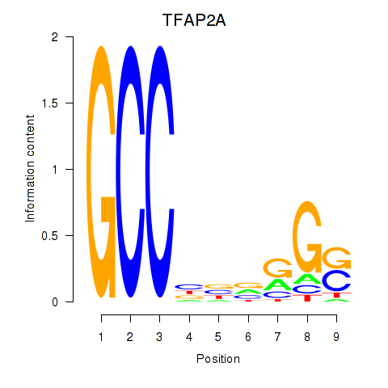
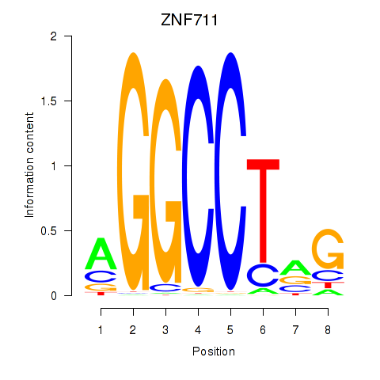
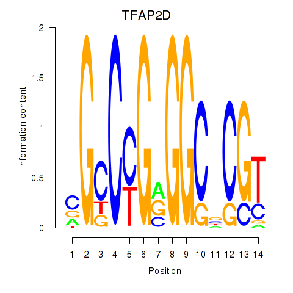

Motif ID: ZNF711_TFAP2A_TFAP2D
Z-value: 2.387



Transcription factors associated with ZNF711_TFAP2A_TFAP2D:
| Gene Symbol | Entrez ID | Gene Name |
|---|---|---|
| TFAP2A | ENSG00000137203.6 | TFAP2A |
| TFAP2D | ENSG00000008197.4 | TFAP2D |
| ZNF711 | ENSG00000147180.12 | ZNF711 |
![](http://string-db.org/api/image/network?network_flavor=evidence&limit=0&species=9606&caller_identity=MARA&identifiers=9606.ENSP00000332737%0D9606.ENSP00000229266%0D9606.ENSP00000164227%0D9606.ENSP00000346300%0D9606.ENSP00000342143%0D9606.ENSP00000391249%0D9606.ENSP00000216211%0D9606.ENSP00000305785%0D9606.ENSP00000262803%0D9606.ENSP00000306864%0D9606.ENSP00000355249%0D9606.ENSP00000317780%0D9606.ENSP00000392828%0D9606.ENSP00000346389%0D9606.ENSP00000268896%0D9606.ENSP00000327608%0D9606.ENSP00000215574%0D9606.ENSP00000407193%0D9606.ENSP00000313670%0D9606.ENSP00000265087%0D9606.ENSP00000354772%0D9606.ENSP00000344547%0D9606.ENSP00000435550%0D9606.ENSP00000354777%0D9606.ENSP00000345997%0D9606.ENSP00000351086%0D9606.ENSP00000356607%0D9606.ENSP00000340761%0D9606.ENSP00000373873%0D9606.ENSP00000337736%0D9606.ENSP00000377873%0D9606.ENSP00000259818%0D9606.ENSP00000359258%0D9606.ENSP00000364595%0D9606.ENSP00000308597%0D9606.ENSP00000360773%0D9606.ENSP00000441032%0D9606.ENSP00000360200%0D9606.ENSP00000353373%0D9606.ENSP00000377086%0D9606.ENSP00000321330%0D9606.ENSP00000344432%0D9606.ENSP00000303585%0D9606.ENSP00000367494%0D9606.ENSP00000292494%0D9606.ENSP00000354878%0D9606.ENSP00000171111%0D9606.ENSP00000263512%0D9606.ENSP00000319231%0D9606.ENSP00000362136%0D9606.ENSP00000313050%0D9606.ENSP00000391669%0D9606.ENSP00000365682%0D9606.ENSP00000371846%0D9606.ENSP00000263368%0D9606.ENSP00000242577%0D9606.ENSP00000349654%0D9606.ENSP00000353483%0D9606.ENSP00000393333%0D9606.ENSP00000220764%0D9606.ENSP00000281537%0D9606.ENSP00000331368%0D9606.ENSP00000351602%0D9606.ENSP00000375397%0D9606.ENSP00000276297%0D9606.ENSP00000386759%0D9606.ENSP00000358327%0D9606.ENSP00000289749%0D9606.ENSP00000367923%0D9606.ENSP00000324897%0D9606.ENSP00000471750%0D9606.ENSP00000262370%0D9606.ENSP00000326693%0D9606.ENSP00000279101%0D9606.ENSP00000259119%0D9606.ENSP00000384432%0D9606.ENSP00000369736%0D9606.ENSP00000300131%0D9606.ENSP00000330278%0D9606.ENSP00000258341%0D9606.ENSP00000265371%0D9606.ENSP00000253339%0D9606.ENSP00000233969%0D9606.ENSP00000352704%0D9606.ENSP00000372199%0D9606.ENSP00000374507%0D9606.ENSP00000366953%0D9606.ENSP00000290431%0D9606.ENSP00000229922%0D9606.ENSP00000263228%0D9606.ENSP00000364475%0D9606.ENSP00000308149%0D9606.ENSP00000282541%0D9606.ENSP00000289877%0D9606.ENSP00000414517%0D9606.ENSP00000288774%0D9606.ENSP00000328426%0D9606.ENSP00000328352%0D9606.ENSP00000325562%0D9606.ENSP00000291442%0D9606.ENSP00000283632)
{kind=link}
{kind=link}
{kind=link}
{kind=link}
Top targets:
Gene overrepresentation in biological_process category:
| Log-likelihood per target | Total log-likelihood | Term | Description |
|---|---|---|---|
| 2.6 | 10.4 | GO:0000294 | nuclear-transcribed mRNA catabolic process, endonucleolytic cleavage-dependent decay(GO:0000294) |
| 2.0 | 5.9 | GO:0097198 | histone H3-K36 trimethylation(GO:0097198) |
| 1.9 | 5.7 | GO:0046168 | glycerol-3-phosphate catabolic process(GO:0046168) |
| 1.8 | 5.3 | GO:0038193 | thromboxane A2 signaling pathway(GO:0038193) |
| 1.7 | 6.6 | GO:0006781 | succinyl-CoA pathway(GO:0006781) |
| 1.4 | 4.3 | GO:0071106 | coenzyme A transport(GO:0015880) coenzyme A transmembrane transport(GO:0035349) adenosine 3',5'-bisphosphate transmembrane transport(GO:0071106) AMP transport(GO:0080121) |
| 1.4 | 4.2 | GO:0045082 | positive regulation of interleukin-10 biosynthetic process(GO:0045082) |
| 1.3 | 5.3 | GO:0005986 | sucrose biosynthetic process(GO:0005986) |
| 1.2 | 1.2 | GO:0043132 | NAD transport(GO:0043132) |
| 1.2 | 5.8 | GO:1902378 | vestibulocochlear nerve structural organization(GO:0021649) positive regulation of cytokine activity(GO:0060301) ganglion morphogenesis(GO:0061552) VEGF-activated neuropilin signaling pathway involved in axon guidance(GO:1902378) dorsal root ganglion morphogenesis(GO:1904835) otic placode development(GO:1905040) |
| 1.2 | 3.5 | GO:0019243 | methylglyoxal catabolic process to D-lactate via S-lactoyl-glutathione(GO:0019243) methylglyoxal catabolic process(GO:0051596) methylglyoxal catabolic process to lactate(GO:0061727) |
| 1.1 | 3.3 | GO:0006864 | pyrimidine nucleotide transport(GO:0006864) mitochondrial pyrimidine nucleotide import(GO:1990519) |
| 1.1 | 7.7 | GO:0019075 | virus maturation(GO:0019075) |
| 1.1 | 4.4 | GO:1901350 | cell-cell signaling involved in cell-cell junction organization(GO:1901350) |
| 1.1 | 8.7 | GO:0032484 | Ral protein signal transduction(GO:0032484) regulation of Ral protein signal transduction(GO:0032485) |
| 1.0 | 9.4 | GO:0072734 | response to staurosporine(GO:0072733) cellular response to staurosporine(GO:0072734) |
| 1.0 | 5.2 | GO:1904565 | response to 1-oleoyl-sn-glycerol 3-phosphate(GO:1904565) cellular response to 1-oleoyl-sn-glycerol 3-phosphate(GO:1904566) |
| 1.0 | 4.1 | GO:0006663 | platelet activating factor biosynthetic process(GO:0006663) |
| 1.0 | 5.0 | GO:0015862 | uridine transport(GO:0015862) |
| 1.0 | 4.9 | GO:0001828 | inner cell mass cellular morphogenesis(GO:0001828) |
| 0.8 | 3.3 | GO:0097069 | cellular response to thyroxine stimulus(GO:0097069) cellular response to L-phenylalanine derivative(GO:1904387) |
| 0.8 | 3.1 | GO:0006542 | glutamine biosynthetic process(GO:0006542) |
| 0.8 | 3.8 | GO:1903553 | positive regulation of extracellular exosome assembly(GO:1903553) |
| 0.7 | 2.2 | GO:0003192 | mitral valve formation(GO:0003192) |
| 0.7 | 2.9 | GO:0060721 | spongiotrophoblast cell proliferation(GO:0060720) regulation of spongiotrophoblast cell proliferation(GO:0060721) cell proliferation involved in embryonic placenta development(GO:0060722) regulation of cell proliferation involved in embryonic placenta development(GO:0060723) |
| 0.7 | 2.1 | GO:2001247 | positive regulation of phosphatidylcholine biosynthetic process(GO:2001247) |
| 0.7 | 4.1 | GO:0016480 | negative regulation of transcription from RNA polymerase III promoter(GO:0016480) |
| 0.7 | 6.8 | GO:0060017 | parathyroid gland development(GO:0060017) |
| 0.7 | 2.0 | GO:0060988 | lipid tube assembly(GO:0060988) |
| 0.7 | 2.0 | GO:0001543 | ovarian follicle rupture(GO:0001543) |
| 0.7 | 0.7 | GO:0021896 | forebrain astrocyte differentiation(GO:0021896) forebrain astrocyte development(GO:0021897) |
| 0.7 | 2.6 | GO:0042361 | menaquinone catabolic process(GO:0042361) vitamin K catabolic process(GO:0042377) |
| 0.7 | 2.6 | GO:1903551 | regulation of extracellular exosome assembly(GO:1903551) |
| 0.7 | 4.6 | GO:0061055 | myotome development(GO:0061055) |
| 0.6 | 3.9 | GO:0072752 | cellular response to rapamycin(GO:0072752) |
| 0.6 | 1.9 | GO:2000532 | renal albumin absorption(GO:0097018) regulation of renal albumin absorption(GO:2000532) |
| 0.6 | 3.2 | GO:1900224 | positive regulation of nodal signaling pathway involved in determination of lateral mesoderm left/right asymmetry(GO:1900224) |
| 0.6 | 1.9 | GO:0016256 | N-glycan processing to lysosome(GO:0016256) |
| 0.6 | 6.4 | GO:0070375 | ERK5 cascade(GO:0070375) |
| 0.6 | 5.1 | GO:0070649 | polar body extrusion after meiotic divisions(GO:0040038) formin-nucleated actin cable assembly(GO:0070649) |
| 0.6 | 2.5 | GO:1902361 | mitochondrial pyruvate transport(GO:0006850) mitochondrial pyruvate transmembrane transport(GO:1902361) |
| 0.6 | 2.5 | GO:0097195 | pilomotor reflex(GO:0097195) |
| 0.6 | 1.8 | GO:1902595 | regulation of DNA replication origin binding(GO:1902595) |
| 0.6 | 0.6 | GO:2000777 | positive regulation of proteasomal ubiquitin-dependent protein catabolic process involved in cellular response to hypoxia(GO:2000777) |
| 0.6 | 9.0 | GO:0010499 | proteasomal ubiquitin-independent protein catabolic process(GO:0010499) |
| 0.6 | 4.2 | GO:0006102 | isocitrate metabolic process(GO:0006102) |
| 0.6 | 1.8 | GO:0051685 | maintenance of ER location(GO:0051685) |
| 0.6 | 3.6 | GO:0031860 | telomeric 3' overhang formation(GO:0031860) |
| 0.6 | 3.6 | GO:0015692 | lead ion transport(GO:0015692) |
| 0.6 | 1.8 | GO:1903697 | negative regulation of microvillus assembly(GO:1903697) |
| 0.6 | 1.7 | GO:0072365 | regulation of cellular ketone metabolic process by negative regulation of transcription from RNA polymerase II promoter(GO:0072365) |
| 0.6 | 2.3 | GO:0060623 | regulation of chromosome condensation(GO:0060623) |
| 0.6 | 1.7 | GO:0035261 | external genitalia morphogenesis(GO:0035261) |
| 0.6 | 2.8 | GO:0043987 | histone H3-S10 phosphorylation(GO:0043987) |
| 0.6 | 2.8 | GO:0090164 | asymmetric Golgi ribbon formation(GO:0090164) |
| 0.5 | 1.6 | GO:0033488 | cholesterol biosynthetic process via 24,25-dihydrolanosterol(GO:0033488) |
| 0.5 | 1.6 | GO:0071603 | endothelial cell-cell adhesion(GO:0071603) |
| 0.5 | 0.5 | GO:0034067 | protein localization to Golgi apparatus(GO:0034067) |
| 0.5 | 3.1 | GO:0060268 | negative regulation of respiratory burst(GO:0060268) |
| 0.5 | 2.6 | GO:0016095 | polyprenol catabolic process(GO:0016095) |
| 0.5 | 2.1 | GO:0002432 | granuloma formation(GO:0002432) |
| 0.5 | 1.5 | GO:0048820 | hair follicle maturation(GO:0048820) |
| 0.5 | 2.5 | GO:1990086 | lens fiber cell apoptotic process(GO:1990086) |
| 0.5 | 1.5 | GO:2000657 | regulation of apolipoprotein binding(GO:2000656) negative regulation of apolipoprotein binding(GO:2000657) |
| 0.5 | 4.8 | GO:0072592 | oxygen metabolic process(GO:0072592) |
| 0.5 | 1.0 | GO:0021965 | spinal cord ventral commissure morphogenesis(GO:0021965) |
| 0.5 | 1.4 | GO:2000910 | negative regulation of cholesterol import(GO:0060621) negative regulation of sterol import(GO:2000910) |
| 0.5 | 3.7 | GO:0070537 | histone H2A K63-linked deubiquitination(GO:0070537) |
| 0.5 | 1.4 | GO:2000412 | positive regulation of thymocyte migration(GO:2000412) |
| 0.5 | 1.4 | GO:1902512 | positive regulation of apoptotic DNA fragmentation(GO:1902512) |
| 0.5 | 4.6 | GO:0007406 | negative regulation of neuroblast proliferation(GO:0007406) |
| 0.5 | 2.3 | GO:0000738 | DNA catabolic process, exonucleolytic(GO:0000738) |
| 0.5 | 1.4 | GO:0030327 | prenylated protein catabolic process(GO:0030327) |
| 0.5 | 6.3 | GO:0043951 | negative regulation of cAMP-mediated signaling(GO:0043951) |
| 0.4 | 0.4 | GO:0090273 | regulation of somatostatin secretion(GO:0090273) positive regulation of somatostatin secretion(GO:0090274) |
| 0.4 | 0.4 | GO:0000096 | sulfur amino acid metabolic process(GO:0000096) |
| 0.4 | 4.9 | GO:2000664 | positive regulation of interleukin-5 secretion(GO:2000664) |
| 0.4 | 0.4 | GO:1904933 | regulation of cell proliferation in midbrain(GO:1904933) |
| 0.4 | 11.5 | GO:0070831 | basement membrane assembly(GO:0070831) |
| 0.4 | 3.1 | GO:0044861 | protein transport into plasma membrane raft(GO:0044861) |
| 0.4 | 2.6 | GO:0051490 | negative regulation of filopodium assembly(GO:0051490) |
| 0.4 | 1.7 | GO:2001287 | negative regulation of caveolin-mediated endocytosis(GO:2001287) |
| 0.4 | 0.4 | GO:1904761 | negative regulation of myofibroblast differentiation(GO:1904761) |
| 0.4 | 1.7 | GO:0019417 | sulfur oxidation(GO:0019417) |
| 0.4 | 8.1 | GO:0002934 | desmosome organization(GO:0002934) |
| 0.4 | 0.8 | GO:0042270 | protection from natural killer cell mediated cytotoxicity(GO:0042270) |
| 0.4 | 1.7 | GO:0023016 | signal transduction by trans-phosphorylation(GO:0023016) |
| 0.4 | 0.4 | GO:0003099 | positive regulation of the force of heart contraction by chemical signal(GO:0003099) |
| 0.4 | 2.1 | GO:1901994 | negative regulation of meiotic cell cycle phase transition(GO:1901994) |
| 0.4 | 0.8 | GO:2000563 | positive regulation of CD4-positive, alpha-beta T cell proliferation(GO:2000563) |
| 0.4 | 2.0 | GO:0001306 | age-dependent response to oxidative stress(GO:0001306) age-dependent response to reactive oxygen species(GO:0001315) regulation of systemic arterial blood pressure by acetylcholine(GO:0003068) vasodilation by acetylcholine involved in regulation of systemic arterial blood pressure(GO:0003069) regulation of systemic arterial blood pressure by neurotransmitter(GO:0003070) age-dependent general metabolic decline(GO:0007571) |
| 0.4 | 2.0 | GO:1903615 | regulation of protein tyrosine phosphatase activity(GO:1903613) positive regulation of protein tyrosine phosphatase activity(GO:1903615) |
| 0.4 | 0.4 | GO:0034145 | positive regulation of toll-like receptor 4 signaling pathway(GO:0034145) |
| 0.4 | 2.0 | GO:0097089 | methyl-branched fatty acid metabolic process(GO:0097089) |
| 0.4 | 3.2 | GO:0070358 | actin polymerization-dependent cell motility(GO:0070358) |
| 0.4 | 0.8 | GO:0045715 | negative regulation of low-density lipoprotein particle receptor biosynthetic process(GO:0045715) |
| 0.4 | 1.2 | GO:1904017 | cellular response to Thyroglobulin triiodothyronine(GO:1904017) |
| 0.4 | 0.4 | GO:0051987 | positive regulation of attachment of spindle microtubules to kinetochore(GO:0051987) |
| 0.4 | 6.0 | GO:0014722 | regulation of skeletal muscle contraction by calcium ion signaling(GO:0014722) |
| 0.4 | 0.4 | GO:0071283 | cellular response to iron(III) ion(GO:0071283) |
| 0.4 | 4.4 | GO:0007023 | post-chaperonin tubulin folding pathway(GO:0007023) |
| 0.4 | 1.2 | GO:0009786 | regulation of asymmetric cell division(GO:0009786) |
| 0.4 | 1.2 | GO:0002188 | translation reinitiation(GO:0002188) |
| 0.4 | 1.6 | GO:0060743 | epithelial cell maturation involved in prostate gland development(GO:0060743) |
| 0.4 | 6.2 | GO:0042167 | porphyrin-containing compound catabolic process(GO:0006787) tetrapyrrole catabolic process(GO:0033015) heme catabolic process(GO:0042167) pigment catabolic process(GO:0046149) |
| 0.4 | 0.8 | GO:0034138 | toll-like receptor 3 signaling pathway(GO:0034138) |
| 0.4 | 1.5 | GO:0010725 | regulation of primitive erythrocyte differentiation(GO:0010725) eosinophil fate commitment(GO:0035854) |
| 0.4 | 1.2 | GO:0044209 | AMP salvage(GO:0044209) |
| 0.4 | 1.9 | GO:0015853 | adenine transport(GO:0015853) |
| 0.4 | 1.9 | GO:0070417 | cellular response to cold(GO:0070417) |
| 0.4 | 1.1 | GO:0072720 | response to dithiothreitol(GO:0072720) |
| 0.4 | 1.5 | GO:1901837 | negative regulation of transcription of nuclear large rRNA transcript from RNA polymerase I promoter(GO:1901837) |
| 0.4 | 2.6 | GO:0071461 | cellular response to redox state(GO:0071461) |
| 0.4 | 0.4 | GO:1900186 | negative regulation of clathrin-mediated endocytosis(GO:1900186) |
| 0.4 | 1.5 | GO:0071348 | cellular response to interleukin-11(GO:0071348) |
| 0.4 | 1.1 | GO:1901340 | negative regulation of store-operated calcium channel activity(GO:1901340) |
| 0.4 | 1.5 | GO:0019285 | glycine betaine biosynthetic process from choline(GO:0019285) glycine betaine metabolic process(GO:0031455) glycine betaine biosynthetic process(GO:0031456) |
| 0.4 | 1.1 | GO:0044830 | modulation by host of viral RNA genome replication(GO:0044830) positive regulation of intracellular transport of viral material(GO:1901254) |
| 0.4 | 0.4 | GO:0072011 | glomerular endothelium development(GO:0072011) |
| 0.4 | 4.0 | GO:0006657 | CDP-choline pathway(GO:0006657) |
| 0.4 | 2.9 | GO:0033564 | anterior/posterior axon guidance(GO:0033564) |
| 0.4 | 1.4 | GO:0072255 | metanephric glomerular mesangial cell development(GO:0072255) reversible differentiation(GO:0090677) cell dedifferentiation involved in phenotypic switching(GO:0090678) positive regulation of phenotypic switching(GO:1900241) regulation of vascular smooth muscle cell dedifferentiation(GO:1905174) positive regulation of vascular smooth muscle cell dedifferentiation(GO:1905176) vascular smooth muscle cell dedifferentiation(GO:1990936) |
| 0.4 | 3.2 | GO:0002480 | antigen processing and presentation of exogenous peptide antigen via MHC class I, TAP-independent(GO:0002480) |
| 0.4 | 0.7 | GO:0007493 | endodermal cell fate determination(GO:0007493) |
| 0.4 | 2.8 | GO:0060157 | urinary bladder development(GO:0060157) |
| 0.4 | 4.9 | GO:0060750 | epithelial cell proliferation involved in mammary gland duct elongation(GO:0060750) branch elongation involved in mammary gland duct branching(GO:0060751) |
| 0.3 | 2.1 | GO:0031064 | negative regulation of histone deacetylation(GO:0031064) |
| 0.3 | 1.0 | GO:0098972 | dendritic transport of mitochondrion(GO:0098939) anterograde dendritic transport of mitochondrion(GO:0098972) |
| 0.3 | 1.0 | GO:0032707 | negative regulation of interleukin-23 production(GO:0032707) |
| 0.3 | 1.7 | GO:1902231 | positive regulation of intrinsic apoptotic signaling pathway in response to DNA damage(GO:1902231) |
| 0.3 | 0.7 | GO:0090403 | oxidative stress-induced premature senescence(GO:0090403) |
| 0.3 | 1.0 | GO:0052314 | phytoalexin metabolic process(GO:0052314) |
| 0.3 | 2.4 | GO:0090234 | regulation of kinetochore assembly(GO:0090234) |
| 0.3 | 2.7 | GO:0072092 | ureteric bud invasion(GO:0072092) |
| 0.3 | 1.4 | GO:0036229 | glutamine secretion(GO:0010585) L-glutamine import(GO:0036229) L-glutamine import into cell(GO:1903803) |
| 0.3 | 1.7 | GO:1902268 | negative regulation of polyamine transmembrane transport(GO:1902268) |
| 0.3 | 1.0 | GO:0035606 | peptidyl-cysteine S-trans-nitrosylation(GO:0035606) |
| 0.3 | 0.7 | GO:1904744 | positive regulation of telomeric DNA binding(GO:1904744) |
| 0.3 | 1.0 | GO:0016561 | protein import into peroxisome matrix, translocation(GO:0016561) |
| 0.3 | 2.7 | GO:1904526 | regulation of microtubule binding(GO:1904526) |
| 0.3 | 0.3 | GO:1903362 | regulation of cellular protein catabolic process(GO:1903362) |
| 0.3 | 1.0 | GO:0046947 | hydroxylysine metabolic process(GO:0046946) hydroxylysine biosynthetic process(GO:0046947) |
| 0.3 | 0.3 | GO:0046619 | optic placode formation involved in camera-type eye formation(GO:0046619) |
| 0.3 | 5.1 | GO:0034393 | positive regulation of smooth muscle cell apoptotic process(GO:0034393) |
| 0.3 | 6.7 | GO:1990118 | sodium ion import across plasma membrane(GO:0098719) sodium ion import into cell(GO:1990118) |
| 0.3 | 1.6 | GO:0060214 | endocardium formation(GO:0060214) |
| 0.3 | 0.3 | GO:0014878 | skeletal muscle atrophy(GO:0014732) response to electrical stimulus involved in regulation of muscle adaptation(GO:0014878) striated muscle atrophy(GO:0014891) |
| 0.3 | 0.9 | GO:0032824 | negative regulation of natural killer cell differentiation(GO:0032824) negative regulation of natural killer cell differentiation involved in immune response(GO:0032827) |
| 0.3 | 0.9 | GO:0036466 | synaptic vesicle recycling via endosome(GO:0036466) |
| 0.3 | 0.9 | GO:0006742 | NADP catabolic process(GO:0006742) pyridine nucleotide catabolic process(GO:0019364) |
| 0.3 | 2.5 | GO:0022027 | interkinetic nuclear migration(GO:0022027) |
| 0.3 | 4.7 | GO:0019317 | fucose catabolic process(GO:0019317) L-fucose metabolic process(GO:0042354) L-fucose catabolic process(GO:0042355) |
| 0.3 | 0.6 | GO:0006103 | 2-oxoglutarate metabolic process(GO:0006103) |
| 0.3 | 1.9 | GO:0032625 | interleukin-21 production(GO:0032625) interleukin-21 secretion(GO:0072619) |
| 0.3 | 1.6 | GO:0031959 | mineralocorticoid receptor signaling pathway(GO:0031959) |
| 0.3 | 0.3 | GO:0048320 | axial mesoderm formation(GO:0048320) |
| 0.3 | 0.6 | GO:0043385 | mycotoxin metabolic process(GO:0043385) aflatoxin metabolic process(GO:0046222) organic heteropentacyclic compound metabolic process(GO:1901376) |
| 0.3 | 0.9 | GO:1904899 | regulation of hepatic stellate cell proliferation(GO:1904897) positive regulation of hepatic stellate cell proliferation(GO:1904899) hepatic stellate cell proliferation(GO:1990922) |
| 0.3 | 1.5 | GO:0051387 | negative regulation of neurotrophin TRK receptor signaling pathway(GO:0051387) |
| 0.3 | 1.8 | GO:1901569 | leukotriene catabolic process(GO:0036100) leukotriene B4 catabolic process(GO:0036101) leukotriene B4 metabolic process(GO:0036102) icosanoid catabolic process(GO:1901523) fatty acid derivative catabolic process(GO:1901569) |
| 0.3 | 0.3 | GO:0050717 | positive regulation of interleukin-1 alpha secretion(GO:0050717) |
| 0.3 | 3.0 | GO:0050428 | purine ribonucleoside bisphosphate biosynthetic process(GO:0034036) 3'-phosphoadenosine 5'-phosphosulfate biosynthetic process(GO:0050428) |
| 0.3 | 1.2 | GO:0070527 | platelet aggregation(GO:0070527) |
| 0.3 | 2.7 | GO:0090238 | positive regulation of arachidonic acid secretion(GO:0090238) |
| 0.3 | 0.9 | GO:0002184 | cytoplasmic translational termination(GO:0002184) |
| 0.3 | 5.0 | GO:1900119 | positive regulation of execution phase of apoptosis(GO:1900119) |
| 0.3 | 1.2 | GO:0017143 | insecticide metabolic process(GO:0017143) |
| 0.3 | 0.9 | GO:0008057 | eye pigment granule organization(GO:0008057) |
| 0.3 | 1.8 | GO:0010756 | positive regulation of plasminogen activation(GO:0010756) |
| 0.3 | 2.9 | GO:0051902 | negative regulation of mitochondrial depolarization(GO:0051902) |
| 0.3 | 3.5 | GO:0030705 | cytoskeleton-dependent intracellular transport(GO:0030705) |
| 0.3 | 0.3 | GO:0034983 | peptidyl-lysine deacetylation(GO:0034983) |
| 0.3 | 0.9 | GO:1904956 | regulation of midbrain dopaminergic neuron differentiation(GO:1904956) |
| 0.3 | 1.1 | GO:1905045 | Schwann cell proliferation involved in axon regeneration(GO:0014011) negative regulation of Schwann cell migration(GO:1900148) regulation of Schwann cell proliferation involved in axon regeneration(GO:1905044) negative regulation of Schwann cell proliferation involved in axon regeneration(GO:1905045) |
| 0.3 | 0.3 | GO:0061341 | non-canonical Wnt signaling pathway involved in heart development(GO:0061341) planar cell polarity pathway involved in heart morphogenesis(GO:0061346) |
| 0.3 | 0.6 | GO:0042733 | embryonic digit morphogenesis(GO:0042733) |
| 0.3 | 0.3 | GO:0045136 | development of secondary sexual characteristics(GO:0045136) |
| 0.3 | 1.9 | GO:0090625 | mRNA cleavage involved in gene silencing by siRNA(GO:0090625) |
| 0.3 | 0.3 | GO:2001226 | negative regulation of chloride transport(GO:2001226) |
| 0.3 | 0.3 | GO:0071288 | cellular response to mercury ion(GO:0071288) |
| 0.3 | 1.1 | GO:1903778 | protein localization to vacuolar membrane(GO:1903778) |
| 0.3 | 1.9 | GO:0006741 | NADP biosynthetic process(GO:0006741) |
| 0.3 | 0.8 | GO:1904562 | phosphatidylinositol 5-phosphate metabolic process(GO:1904562) |
| 0.3 | 1.4 | GO:0003404 | optic vesicle morphogenesis(GO:0003404) optic cup structural organization(GO:0003409) |
| 0.3 | 1.4 | GO:0061084 | regulation of protein refolding(GO:0061083) negative regulation of protein refolding(GO:0061084) |
| 0.3 | 0.3 | GO:1903721 | regulation of I-kappaB phosphorylation(GO:1903719) positive regulation of I-kappaB phosphorylation(GO:1903721) |
| 0.3 | 1.4 | GO:0018101 | protein citrullination(GO:0018101) histone citrullination(GO:0036414) |
| 0.3 | 0.5 | GO:1904294 | positive regulation of ERAD pathway(GO:1904294) |
| 0.3 | 2.7 | GO:0009133 | nucleoside diphosphate biosynthetic process(GO:0009133) |
| 0.3 | 0.3 | GO:0006680 | glucosylceramide catabolic process(GO:0006680) |
| 0.3 | 0.5 | GO:1900239 | phenotypic switching(GO:0036166) regulation of phenotypic switching(GO:1900239) |
| 0.3 | 0.5 | GO:0016476 | regulation of embryonic cell shape(GO:0016476) |
| 0.3 | 1.1 | GO:0036483 | neuron intrinsic apoptotic signaling pathway in response to endoplasmic reticulum stress(GO:0036483) regulation of endoplasmic reticulum stress-induced neuron intrinsic apoptotic signaling pathway(GO:1903381) negative regulation of endoplasmic reticulum stress-induced neuron intrinsic apoptotic signaling pathway(GO:1903382) |
| 0.3 | 6.0 | GO:0016540 | protein autoprocessing(GO:0016540) |
| 0.3 | 0.8 | GO:0098884 | postsynaptic neurotransmitter receptor internalization(GO:0098884) |
| 0.3 | 1.6 | GO:1904217 | regulation of CDP-diacylglycerol-serine O-phosphatidyltransferase activity(GO:1904217) positive regulation of CDP-diacylglycerol-serine O-phosphatidyltransferase activity(GO:1904219) positive regulation of serine C-palmitoyltransferase activity(GO:1904222) |
| 0.3 | 1.0 | GO:0033563 | dorsal/ventral axon guidance(GO:0033563) |
| 0.3 | 1.6 | GO:0090283 | regulation of protein glycosylation in Golgi(GO:0090283) |
| 0.3 | 1.8 | GO:0072719 | cellular response to cisplatin(GO:0072719) |
| 0.3 | 1.0 | GO:0038001 | paracrine signaling(GO:0038001) |
| 0.3 | 1.5 | GO:0021691 | cerebellar Purkinje cell layer maturation(GO:0021691) |
| 0.3 | 0.5 | GO:0002428 | antigen processing and presentation of peptide antigen via MHC class Ib(GO:0002428) |
| 0.3 | 1.8 | GO:2000568 | memory T cell activation(GO:0035709) regulation of memory T cell activation(GO:2000567) positive regulation of memory T cell activation(GO:2000568) |
| 0.3 | 1.5 | GO:0010796 | regulation of multivesicular body size(GO:0010796) |
| 0.3 | 1.0 | GO:0030948 | negative regulation of vascular endothelial growth factor receptor signaling pathway(GO:0030948) |
| 0.3 | 0.8 | GO:0034184 | positive regulation of maintenance of sister chromatid cohesion(GO:0034093) positive regulation of maintenance of mitotic sister chromatid cohesion(GO:0034184) |
| 0.3 | 6.0 | GO:0006123 | mitochondrial electron transport, cytochrome c to oxygen(GO:0006123) |
| 0.3 | 0.3 | GO:0035418 | protein localization to synapse(GO:0035418) |
| 0.2 | 1.2 | GO:0008616 | queuosine biosynthetic process(GO:0008616) queuosine metabolic process(GO:0046116) |
| 0.2 | 1.0 | GO:0009298 | GDP-mannose biosynthetic process(GO:0009298) |
| 0.2 | 0.7 | GO:0035281 | pre-miRNA export from nucleus(GO:0035281) |
| 0.2 | 2.4 | GO:0032888 | regulation of spindle elongation(GO:0032887) regulation of mitotic spindle elongation(GO:0032888) anastral spindle assembly(GO:0055048) protein localization to spindle pole body(GO:0071988) regulation of protein localization to spindle pole body(GO:1902363) positive regulation of protein localization to spindle pole body(GO:1902365) positive regulation of mitotic spindle elongation(GO:1902846) |
| 0.2 | 0.5 | GO:0045019 | negative regulation of nitric oxide biosynthetic process(GO:0045019) negative regulation of nitric oxide metabolic process(GO:1904406) |
| 0.2 | 1.2 | GO:0036512 | trimming of terminal mannose on B branch(GO:0036509) trimming of first mannose on A branch(GO:0036511) trimming of second mannose on A branch(GO:0036512) |
| 0.2 | 0.2 | GO:0006572 | tyrosine catabolic process(GO:0006572) |
| 0.2 | 0.5 | GO:0015813 | L-glutamate transport(GO:0015813) |
| 0.2 | 1.7 | GO:0061767 | negative regulation of lung blood pressure(GO:0061767) |
| 0.2 | 0.2 | GO:0035634 | response to stilbenoid(GO:0035634) |
| 0.2 | 0.2 | GO:2000667 | positive regulation of interleukin-13 secretion(GO:2000667) |
| 0.2 | 0.7 | GO:0042732 | D-xylose metabolic process(GO:0042732) |
| 0.2 | 0.9 | GO:1904059 | regulation of locomotor rhythm(GO:1904059) |
| 0.2 | 0.5 | GO:0016185 | synaptic vesicle budding from presynaptic endocytic zone membrane(GO:0016185) |
| 0.2 | 0.2 | GO:0006778 | porphyrin-containing compound metabolic process(GO:0006778) |
| 0.2 | 0.2 | GO:0072361 | regulation of glycolytic process by regulation of transcription from RNA polymerase II promoter(GO:0072361) |
| 0.2 | 0.5 | GO:0085020 | protein K6-linked ubiquitination(GO:0085020) |
| 0.2 | 1.2 | GO:0015783 | GDP-fucose transport(GO:0015783) purine nucleotide-sugar transport(GO:0036079) |
| 0.2 | 5.1 | GO:0040015 | negative regulation of multicellular organism growth(GO:0040015) |
| 0.2 | 0.7 | GO:0071109 | superior temporal gyrus development(GO:0071109) |
| 0.2 | 1.2 | GO:0010636 | positive regulation of mitochondrial fusion(GO:0010636) |
| 0.2 | 0.5 | GO:0002522 | leukocyte migration involved in immune response(GO:0002522) |
| 0.2 | 1.6 | GO:1901857 | positive regulation of cellular respiration(GO:1901857) |
| 0.2 | 0.2 | GO:0010949 | negative regulation of intestinal phytosterol absorption(GO:0010949) negative regulation of intestinal cholesterol absorption(GO:0045796) intestinal phytosterol absorption(GO:0060752) negative regulation of intestinal lipid absorption(GO:1904730) |
| 0.2 | 1.8 | GO:0035865 | cellular response to potassium ion(GO:0035865) |
| 0.2 | 0.7 | GO:0061394 | regulation of transcription from RNA polymerase II promoter in response to arsenic-containing substance(GO:0061394) |
| 0.2 | 0.9 | GO:0002669 | positive regulation of T cell anergy(GO:0002669) positive regulation of lymphocyte anergy(GO:0002913) |
| 0.2 | 3.6 | GO:1900016 | negative regulation of cytokine production involved in inflammatory response(GO:1900016) |
| 0.2 | 0.9 | GO:0010430 | fatty acid omega-oxidation(GO:0010430) |
| 0.2 | 2.3 | GO:0072656 | maintenance of protein location in mitochondrion(GO:0072656) |
| 0.2 | 1.8 | GO:0006620 | posttranslational protein targeting to membrane(GO:0006620) |
| 0.2 | 0.2 | GO:0046460 | triglyceride biosynthetic process(GO:0019432) neutral lipid biosynthetic process(GO:0046460) acylglycerol biosynthetic process(GO:0046463) |
| 0.2 | 1.1 | GO:0009257 | 10-formyltetrahydrofolate biosynthetic process(GO:0009257) |
| 0.2 | 0.7 | GO:1904784 | NLRP1 inflammasome complex assembly(GO:1904784) |
| 0.2 | 0.7 | GO:0002317 | plasma cell differentiation(GO:0002317) |
| 0.2 | 0.7 | GO:0001544 | initiation of primordial ovarian follicle growth(GO:0001544) |
| 0.2 | 2.5 | GO:0032782 | bile acid secretion(GO:0032782) |
| 0.2 | 1.8 | GO:0019086 | late viral transcription(GO:0019086) |
| 0.2 | 0.7 | GO:0090158 | endoplasmic reticulum membrane organization(GO:0090158) |
| 0.2 | 0.7 | GO:2000834 | androgen secretion(GO:0035935) regulation of androgen secretion(GO:2000834) positive regulation of androgen secretion(GO:2000836) |
| 0.2 | 0.9 | GO:0042247 | morphogenesis of follicular epithelium(GO:0016333) establishment or maintenance of polarity of follicular epithelium(GO:0016334) establishment of planar polarity of follicular epithelium(GO:0042247) |
| 0.2 | 0.7 | GO:0006258 | UDP-glucose catabolic process(GO:0006258) |
| 0.2 | 0.2 | GO:0010903 | negative regulation of very-low-density lipoprotein particle remodeling(GO:0010903) |
| 0.2 | 2.6 | GO:0032202 | telomere assembly(GO:0032202) |
| 0.2 | 0.4 | GO:1902044 | regulation of Fas signaling pathway(GO:1902044) |
| 0.2 | 0.9 | GO:0052214 | multi-organism catabolic process(GO:0044035) development of symbiont involved in interaction with host(GO:0044115) modulation of development of symbiont involved in interaction with host(GO:0044145) negative regulation of development of symbiont involved in interaction with host(GO:0044147) metabolism of substance in other organism involved in symbiotic interaction(GO:0052214) catabolism of substance in other organism involved in symbiotic interaction(GO:0052227) metabolism of macromolecule in other organism involved in symbiotic interaction(GO:0052229) catabolism by host of symbiont macromolecule(GO:0052360) catabolism by organism of macromolecule in other organism involved in symbiotic interaction(GO:0052361) catabolism by host of symbiont protein(GO:0052362) catabolism by organism of protein in other organism involved in symbiotic interaction(GO:0052363) catabolism by host of substance in symbiont(GO:0052364) metabolism by host of symbiont macromolecule(GO:0052416) metabolism by host of symbiont protein(GO:0052417) metabolism by organism of protein in other organism involved in symbiotic interaction(GO:0052418) metabolism by host of substance in symbiont(GO:0052419) |
| 0.2 | 0.6 | GO:0042727 | flavin-containing compound biosynthetic process(GO:0042727) |
| 0.2 | 0.4 | GO:1902903 | regulation of fibril organization(GO:1902903) |
| 0.2 | 1.1 | GO:1905225 | response to thyrotropin-releasing hormone(GO:1905225) |
| 0.2 | 0.2 | GO:0072103 | glomerulus vasculature morphogenesis(GO:0072103) glomerular capillary formation(GO:0072104) |
| 0.2 | 0.2 | GO:0010710 | regulation of collagen catabolic process(GO:0010710) |
| 0.2 | 5.3 | GO:0006068 | ethanol catabolic process(GO:0006068) |
| 0.2 | 0.2 | GO:0006419 | alanyl-tRNA aminoacylation(GO:0006419) |
| 0.2 | 0.6 | GO:0030520 | intracellular estrogen receptor signaling pathway(GO:0030520) |
| 0.2 | 1.3 | GO:0035026 | leading edge cell differentiation(GO:0035026) |
| 0.2 | 1.0 | GO:0061086 | negative regulation of histone H3-K27 methylation(GO:0061086) |
| 0.2 | 0.6 | GO:0030505 | inorganic diphosphate transport(GO:0030505) |
| 0.2 | 2.5 | GO:0007161 | calcium-independent cell-matrix adhesion(GO:0007161) |
| 0.2 | 0.6 | GO:2000744 | anterior head development(GO:0097065) regulation of anterior head development(GO:2000742) positive regulation of anterior head development(GO:2000744) |
| 0.2 | 0.6 | GO:1904585 | response to putrescine(GO:1904585) cellular response to putrescine(GO:1904586) hepatocyte dedifferentiation(GO:1990828) |
| 0.2 | 1.6 | GO:0051410 | detoxification of nitrogen compound(GO:0051410) |
| 0.2 | 0.8 | GO:0006550 | isoleucine catabolic process(GO:0006550) |
| 0.2 | 1.8 | GO:0035469 | determination of pancreatic left/right asymmetry(GO:0035469) |
| 0.2 | 1.2 | GO:1900041 | negative regulation of interleukin-2 secretion(GO:1900041) |
| 0.2 | 0.8 | GO:1901558 | response to metformin(GO:1901558) negative regulation of pancreatic stellate cell proliferation(GO:2000230) |
| 0.2 | 0.6 | GO:0090222 | centrosome-templated microtubule nucleation(GO:0090222) |
| 0.2 | 0.2 | GO:2001169 | regulation of ATP biosynthetic process(GO:2001169) |
| 0.2 | 1.0 | GO:0033274 | response to vitamin B2(GO:0033274) heterochromatin maintenance(GO:0070829) |
| 0.2 | 0.8 | GO:1990569 | UDP-N-acetylglucosamine transport(GO:0015788) UDP-N-acetylglucosamine transmembrane transport(GO:1990569) |
| 0.2 | 0.2 | GO:2000138 | positive regulation of cell proliferation involved in heart morphogenesis(GO:2000138) |
| 0.2 | 5.6 | GO:0016254 | preassembly of GPI anchor in ER membrane(GO:0016254) |
| 0.2 | 0.2 | GO:0000103 | sulfate assimilation(GO:0000103) |
| 0.2 | 0.6 | GO:0071963 | establishment or maintenance of cell polarity regulating cell shape(GO:0071963) |
| 0.2 | 0.6 | GO:0001994 | norepinephrine-epinephrine vasoconstriction involved in regulation of systemic arterial blood pressure(GO:0001994) |
| 0.2 | 0.4 | GO:0060738 | epithelial-mesenchymal signaling involved in prostate gland development(GO:0060738) |
| 0.2 | 1.2 | GO:2001106 | regulation of Rho guanyl-nucleotide exchange factor activity(GO:2001106) |
| 0.2 | 0.8 | GO:1905205 | positive regulation of connective tissue replacement(GO:1905205) |
| 0.2 | 0.8 | GO:1904808 | regulation of protein oxidation(GO:1904806) positive regulation of protein oxidation(GO:1904808) |
| 0.2 | 1.2 | GO:0046940 | nucleoside monophosphate phosphorylation(GO:0046940) |
| 0.2 | 0.4 | GO:0010543 | regulation of platelet activation(GO:0010543) |
| 0.2 | 0.2 | GO:0009405 | pathogenesis(GO:0009405) |
| 0.2 | 1.6 | GO:0003223 | ventricular compact myocardium morphogenesis(GO:0003223) |
| 0.2 | 1.4 | GO:0032185 | septin cytoskeleton organization(GO:0032185) |
| 0.2 | 0.2 | GO:0009436 | glyoxylate catabolic process(GO:0009436) |
| 0.2 | 2.1 | GO:0035583 | sequestering of TGFbeta in extracellular matrix(GO:0035583) |
| 0.2 | 1.1 | GO:0060574 | intestinal epithelial cell maturation(GO:0060574) |
| 0.2 | 0.8 | GO:1902530 | regulation of protein linear polyubiquitination(GO:1902528) positive regulation of protein linear polyubiquitination(GO:1902530) |
| 0.2 | 0.4 | GO:0002636 | positive regulation of germinal center formation(GO:0002636) |
| 0.2 | 0.9 | GO:0031291 | Ran protein signal transduction(GO:0031291) |
| 0.2 | 0.2 | GO:0042492 | gamma-delta T cell differentiation(GO:0042492) |
| 0.2 | 1.9 | GO:0006065 | UDP-glucuronate biosynthetic process(GO:0006065) |
| 0.2 | 0.4 | GO:0001560 | regulation of cell growth by extracellular stimulus(GO:0001560) |
| 0.2 | 0.4 | GO:2000395 | regulation of ubiquitin-dependent endocytosis(GO:2000395) positive regulation of ubiquitin-dependent endocytosis(GO:2000397) |
| 0.2 | 0.4 | GO:0072387 | flavin adenine dinucleotide metabolic process(GO:0072387) |
| 0.2 | 0.8 | GO:0019276 | UDP-N-acetylgalactosamine metabolic process(GO:0019276) |
| 0.2 | 0.9 | GO:0046092 | deoxycytidine metabolic process(GO:0046092) |
| 0.2 | 0.4 | GO:0060775 | mediolateral intercalation(GO:0060031) planar cell polarity pathway involved in gastrula mediolateral intercalation(GO:0060775) |
| 0.2 | 0.2 | GO:0098905 | regulation of bundle of His cell action potential(GO:0098905) |
| 0.2 | 1.1 | GO:0071386 | cellular response to corticosterone stimulus(GO:0071386) |
| 0.2 | 0.6 | GO:0051771 | negative regulation of nitric-oxide synthase biosynthetic process(GO:0051771) |
| 0.2 | 0.7 | GO:2000825 | positive regulation of androgen receptor activity(GO:2000825) |
| 0.2 | 1.3 | GO:0010757 | negative regulation of plasminogen activation(GO:0010757) |
| 0.2 | 0.2 | GO:0090118 | receptor-mediated endocytosis of low-density lipoprotein particle involved in cholesterol transport(GO:0090118) |
| 0.2 | 1.3 | GO:1903298 | regulation of hypoxia-induced intrinsic apoptotic signaling pathway(GO:1903297) negative regulation of hypoxia-induced intrinsic apoptotic signaling pathway(GO:1903298) |
| 0.2 | 0.7 | GO:0006428 | isoleucyl-tRNA aminoacylation(GO:0006428) |
| 0.2 | 0.5 | GO:0060032 | notochord regression(GO:0060032) |
| 0.2 | 0.4 | GO:0051462 | cortisol secretion(GO:0043400) regulation of cortisol secretion(GO:0051462) positive regulation of cortisol secretion(GO:0051464) |
| 0.2 | 0.5 | GO:0043095 | regulation of GTP cyclohydrolase I activity(GO:0043095) negative regulation of GTP cyclohydrolase I activity(GO:0043105) |
| 0.2 | 0.5 | GO:1900275 | negative regulation of phospholipase C activity(GO:1900275) regulation of proteinase activated receptor activity(GO:1900276) negative regulation of phospholipase C-activating G-protein coupled receptor signaling pathway(GO:1900737) |
| 0.2 | 1.1 | GO:2000158 | positive regulation of ubiquitin-specific protease activity(GO:2000158) |
| 0.2 | 0.2 | GO:0015842 | aminergic neurotransmitter loading into synaptic vesicle(GO:0015842) |
| 0.2 | 0.2 | GO:1900037 | regulation of cellular response to hypoxia(GO:1900037) |
| 0.2 | 0.2 | GO:0071478 | cellular response to radiation(GO:0071478) |
| 0.2 | 0.9 | GO:0006546 | glycine catabolic process(GO:0006546) glycine decarboxylation via glycine cleavage system(GO:0019464) |
| 0.2 | 2.0 | GO:0006729 | tetrahydrobiopterin biosynthetic process(GO:0006729) tetrahydrobiopterin metabolic process(GO:0046146) |
| 0.2 | 1.4 | GO:0003160 | endocardium morphogenesis(GO:0003160) |
| 0.2 | 0.5 | GO:0048936 | peripheral nervous system neuron axonogenesis(GO:0048936) |
| 0.2 | 1.6 | GO:1900029 | positive regulation of ruffle assembly(GO:1900029) |
| 0.2 | 0.4 | GO:1903862 | positive regulation of oxidative phosphorylation(GO:1903862) |
| 0.2 | 0.7 | GO:0048852 | diencephalon morphogenesis(GO:0048852) |
| 0.2 | 0.4 | GO:0019087 | transformation of host cell by virus(GO:0019087) |
| 0.2 | 0.9 | GO:0043324 | eye pigment biosynthetic process(GO:0006726) eye pigment metabolic process(GO:0042441) pigment metabolic process involved in developmental pigmentation(GO:0043324) pigment metabolic process involved in pigmentation(GO:0043474) |
| 0.2 | 2.5 | GO:0030388 | fructose 1,6-bisphosphate metabolic process(GO:0030388) |
| 0.2 | 1.0 | GO:0030047 | actin modification(GO:0030047) |
| 0.2 | 0.5 | GO:1905166 | negative regulation of protein catabolic process in the vacuole(GO:1904351) negative regulation of lysosomal protein catabolic process(GO:1905166) |
| 0.2 | 3.5 | GO:0033235 | positive regulation of protein sumoylation(GO:0033235) |
| 0.2 | 1.6 | GO:0010891 | negative regulation of sequestering of triglyceride(GO:0010891) |
| 0.2 | 0.3 | GO:0098989 | Schwann cell migration(GO:0036135) NMDA selective glutamate receptor signaling pathway(GO:0098989) regulation of Schwann cell migration(GO:1900147) |
| 0.2 | 1.0 | GO:0006990 | positive regulation of transcription from RNA polymerase II promoter involved in unfolded protein response(GO:0006990) |
| 0.2 | 8.9 | GO:0031122 | cytoplasmic microtubule organization(GO:0031122) |
| 0.2 | 0.3 | GO:1902490 | regulation of sperm capacitation(GO:1902490) |
| 0.2 | 0.5 | GO:0060215 | primitive hemopoiesis(GO:0060215) |
| 0.2 | 2.4 | GO:0070070 | proton-transporting V-type ATPase complex assembly(GO:0070070) vacuolar proton-transporting V-type ATPase complex assembly(GO:0070072) |
| 0.2 | 1.2 | GO:0035879 | plasma membrane lactate transport(GO:0035879) |
| 0.2 | 0.5 | GO:0030070 | insulin processing(GO:0030070) |
| 0.2 | 0.3 | GO:0046967 | cytosol to ER transport(GO:0046967) |
| 0.2 | 0.9 | GO:0018057 | peptidyl-lysine oxidation(GO:0018057) |
| 0.2 | 0.9 | GO:1903422 | negative regulation of synaptic vesicle recycling(GO:1903422) |
| 0.2 | 0.2 | GO:0003175 | tricuspid valve development(GO:0003175) |
| 0.2 | 0.7 | GO:0006597 | spermine biosynthetic process(GO:0006597) |
| 0.2 | 1.0 | GO:1904274 | tricellular tight junction assembly(GO:1904274) |
| 0.2 | 0.2 | GO:0090107 | regulation of high-density lipoprotein particle assembly(GO:0090107) |
| 0.2 | 1.9 | GO:0006528 | asparagine metabolic process(GO:0006528) |
| 0.2 | 1.0 | GO:0033490 | cholesterol biosynthetic process via desmosterol(GO:0033489) cholesterol biosynthetic process via lathosterol(GO:0033490) |
| 0.2 | 0.7 | GO:0016598 | protein arginylation(GO:0016598) |
| 0.2 | 1.0 | GO:0042986 | positive regulation of amyloid precursor protein biosynthetic process(GO:0042986) |
| 0.2 | 0.2 | GO:0051795 | positive regulation of catagen(GO:0051795) |
| 0.2 | 0.2 | GO:0002351 | serotonin production involved in inflammatory response(GO:0002351) serotonin secretion involved in inflammatory response(GO:0002442) serotonin secretion by platelet(GO:0002554) |
| 0.2 | 1.2 | GO:0097168 | mesenchymal stem cell proliferation(GO:0097168) |
| 0.2 | 0.5 | GO:0045799 | positive regulation of chromatin assembly or disassembly(GO:0045799) |
| 0.2 | 0.5 | GO:0090237 | regulation of arachidonic acid secretion(GO:0090237) |
| 0.2 | 0.7 | GO:0046338 | phosphatidylethanolamine catabolic process(GO:0046338) |
| 0.2 | 0.7 | GO:0015910 | peroxisomal long-chain fatty acid import(GO:0015910) |
| 0.2 | 0.3 | GO:0061289 | cell-cell signaling involved in kidney development(GO:0060995) Wnt signaling pathway involved in kidney development(GO:0061289) canonical Wnt signaling pathway involved in metanephric kidney development(GO:0061290) cell-cell signaling involved in metanephros development(GO:0072204) |
| 0.2 | 0.2 | GO:2000721 | positive regulation of transcription from RNA polymerase II promoter involved in smooth muscle cell differentiation(GO:2000721) |
| 0.2 | 0.8 | GO:0046108 | uridine metabolic process(GO:0046108) |
| 0.2 | 1.8 | GO:0031339 | negative regulation of vesicle fusion(GO:0031339) |
| 0.2 | 0.2 | GO:0044771 | meiotic cell cycle phase transition(GO:0044771) regulation of meiotic cell cycle phase transition(GO:1901993) |
| 0.2 | 0.7 | GO:0060830 | ciliary receptor clustering involved in smoothened signaling pathway(GO:0060830) |
| 0.2 | 1.0 | GO:0032487 | regulation of Rap protein signal transduction(GO:0032487) |
| 0.2 | 0.8 | GO:0021747 | cochlear nucleus development(GO:0021747) |
| 0.2 | 0.5 | GO:1903348 | positive regulation of bicellular tight junction assembly(GO:1903348) |
| 0.2 | 0.5 | GO:0061485 | memory T cell proliferation(GO:0061485) |
| 0.2 | 1.9 | GO:0070459 | prolactin secretion(GO:0070459) |
| 0.2 | 0.5 | GO:2000348 | regulation of CD40 signaling pathway(GO:2000348) |
| 0.2 | 0.5 | GO:0090526 | regulation of gluconeogenesis involved in cellular glucose homeostasis(GO:0090526) |
| 0.2 | 0.6 | GO:1904647 | response to rotenone(GO:1904647) |
| 0.2 | 0.3 | GO:1901383 | negative regulation of chorionic trophoblast cell proliferation(GO:1901383) |
| 0.2 | 0.2 | GO:0006532 | aspartate biosynthetic process(GO:0006532) |
| 0.2 | 1.1 | GO:0006931 | substrate-dependent cell migration, cell attachment to substrate(GO:0006931) |
| 0.2 | 0.3 | GO:0035963 | cellular response to interleukin-13(GO:0035963) |
| 0.2 | 0.5 | GO:2001033 | negative regulation of double-strand break repair via nonhomologous end joining(GO:2001033) |
| 0.2 | 1.7 | GO:0043619 | regulation of transcription from RNA polymerase II promoter in response to oxidative stress(GO:0043619) |
| 0.2 | 1.1 | GO:0014043 | negative regulation of neuron maturation(GO:0014043) |
| 0.2 | 1.4 | GO:0045347 | negative regulation of MHC class II biosynthetic process(GO:0045347) |
| 0.2 | 1.7 | GO:0060263 | regulation of respiratory burst(GO:0060263) |
| 0.2 | 0.5 | GO:0072356 | chromosome passenger complex localization to kinetochore(GO:0072356) |
| 0.2 | 0.2 | GO:0038183 | bile acid signaling pathway(GO:0038183) |
| 0.2 | 0.3 | GO:0070302 | regulation of stress-activated MAPK cascade(GO:0032872) regulation of stress-activated protein kinase signaling cascade(GO:0070302) |
| 0.2 | 0.3 | GO:0090261 | positive regulation of inclusion body assembly(GO:0090261) |
| 0.2 | 0.3 | GO:0007181 | transforming growth factor beta receptor complex assembly(GO:0007181) |
| 0.2 | 0.5 | GO:0048250 | mitochondrial iron ion transport(GO:0048250) |
| 0.2 | 0.6 | GO:0046070 | dGTP metabolic process(GO:0046070) |
| 0.2 | 1.2 | GO:0055064 | chloride ion homeostasis(GO:0055064) |
| 0.2 | 1.5 | GO:0071787 | endoplasmic reticulum tubular network assembly(GO:0071787) |
| 0.2 | 1.4 | GO:0030242 | pexophagy(GO:0030242) |
| 0.2 | 1.1 | GO:0045204 | MAPK export from nucleus(GO:0045204) |
| 0.2 | 0.2 | GO:0045953 | negative regulation of natural killer cell mediated cytotoxicity(GO:0045953) |
| 0.2 | 1.7 | GO:0006771 | riboflavin metabolic process(GO:0006771) flavin-containing compound metabolic process(GO:0042726) |
| 0.2 | 0.6 | GO:0032474 | otolith morphogenesis(GO:0032474) |
| 0.2 | 0.8 | GO:0071550 | death-inducing signaling complex assembly(GO:0071550) |
| 0.2 | 0.5 | GO:0048711 | positive regulation of astrocyte differentiation(GO:0048711) |
| 0.2 | 0.6 | GO:0042853 | L-alanine metabolic process(GO:0042851) L-alanine catabolic process(GO:0042853) |
| 0.2 | 1.5 | GO:1901525 | negative regulation of macromitophagy(GO:1901525) negative regulation of mitophagy(GO:1903147) |
| 0.2 | 2.4 | GO:0042908 | xenobiotic transport(GO:0042908) |
| 0.1 | 4.8 | GO:0015893 | drug transport(GO:0015893) |
| 0.1 | 0.9 | GO:1903826 | arginine transmembrane transport(GO:1903826) |
| 0.1 | 0.1 | GO:0010446 | response to alkaline pH(GO:0010446) |
| 0.1 | 1.2 | GO:2001206 | positive regulation of osteoclast development(GO:2001206) |
| 0.1 | 0.3 | GO:1903595 | positive regulation of histamine secretion by mast cell(GO:1903595) |
| 0.1 | 0.1 | GO:0061052 | negative regulation of cell growth involved in cardiac muscle cell development(GO:0061052) |
| 0.1 | 0.6 | GO:0003335 | corneocyte development(GO:0003335) |
| 0.1 | 8.2 | GO:0007190 | activation of adenylate cyclase activity(GO:0007190) |
| 0.1 | 0.7 | GO:1903361 | protein localization to basolateral plasma membrane(GO:1903361) |
| 0.1 | 1.2 | GO:1903026 | negative regulation of RNA polymerase II regulatory region sequence-specific DNA binding(GO:1903026) |
| 0.1 | 1.9 | GO:0060033 | anatomical structure regression(GO:0060033) |
| 0.1 | 1.9 | GO:0018243 | protein O-linked glycosylation via threonine(GO:0018243) |
| 0.1 | 0.1 | GO:2000211 | regulation of glutamate metabolic process(GO:2000211) |
| 0.1 | 0.6 | GO:0035574 | histone H4-K20 demethylation(GO:0035574) |
| 0.1 | 0.3 | GO:0006425 | glutaminyl-tRNA aminoacylation(GO:0006425) |
| 0.1 | 0.4 | GO:0014839 | myoblast migration involved in skeletal muscle regeneration(GO:0014839) |
| 0.1 | 0.6 | GO:0034334 | adherens junction maintenance(GO:0034334) |
| 0.1 | 2.2 | GO:1901407 | regulation of phosphorylation of RNA polymerase II C-terminal domain(GO:1901407) |
| 0.1 | 1.0 | GO:0097084 | vascular smooth muscle cell development(GO:0097084) |
| 0.1 | 0.6 | GO:0046882 | negative regulation of follicle-stimulating hormone secretion(GO:0046882) |
| 0.1 | 3.3 | GO:0090084 | negative regulation of inclusion body assembly(GO:0090084) |
| 0.1 | 0.3 | GO:0051495 | positive regulation of cytoskeleton organization(GO:0051495) |
| 0.1 | 1.4 | GO:0010917 | negative regulation of mitochondrial membrane potential(GO:0010917) |
| 0.1 | 0.4 | GO:0035674 | tricarboxylic acid transmembrane transport(GO:0035674) |
| 0.1 | 1.4 | GO:2000504 | positive regulation of blood vessel remodeling(GO:2000504) |
| 0.1 | 0.6 | GO:0000412 | histone peptidyl-prolyl isomerization(GO:0000412) |
| 0.1 | 0.3 | GO:1990034 | calcium ion export from cell(GO:1990034) |
| 0.1 | 0.6 | GO:0009182 | purine deoxyribonucleoside diphosphate metabolic process(GO:0009182) |
| 0.1 | 1.4 | GO:0045144 | meiotic sister chromatid segregation(GO:0045144) |
| 0.1 | 0.1 | GO:0070233 | negative regulation of T cell apoptotic process(GO:0070233) |
| 0.1 | 0.8 | GO:0002424 | T cell mediated immune response to tumor cell(GO:0002424) regulation of T cell mediated immune response to tumor cell(GO:0002840) |
| 0.1 | 0.4 | GO:0033214 | iron assimilation(GO:0033212) iron assimilation by chelation and transport(GO:0033214) positive regulation of bone mineralization involved in bone maturation(GO:1900159) negative regulation of tumor necrosis factor (ligand) superfamily member 11 production(GO:2000308) |
| 0.1 | 0.3 | GO:0031133 | regulation of axon diameter(GO:0031133) |
| 0.1 | 0.1 | GO:0045839 | negative regulation of mitotic nuclear division(GO:0045839) |
| 0.1 | 0.4 | GO:0043044 | ATP-dependent chromatin remodeling(GO:0043044) |
| 0.1 | 1.1 | GO:0035897 | proteolysis in other organism(GO:0035897) |
| 0.1 | 1.8 | GO:1903546 | protein localization to photoreceptor outer segment(GO:1903546) |
| 0.1 | 0.1 | GO:0002011 | morphogenesis of an epithelial sheet(GO:0002011) |
| 0.1 | 0.6 | GO:2000435 | regulation of protein neddylation(GO:2000434) negative regulation of protein neddylation(GO:2000435) |
| 0.1 | 0.4 | GO:0032713 | negative regulation of interleukin-4 production(GO:0032713) |
| 0.1 | 0.1 | GO:1904338 | regulation of dopaminergic neuron differentiation(GO:1904338) |
| 0.1 | 1.1 | GO:0038110 | interleukin-2-mediated signaling pathway(GO:0038110) |
| 0.1 | 0.4 | GO:2000001 | regulation of DNA damage checkpoint(GO:2000001) |
| 0.1 | 0.3 | GO:2000569 | T-helper 2 cell activation(GO:0035712) regulation of T-helper 2 cell activation(GO:2000569) positive regulation of T-helper 2 cell activation(GO:2000570) |
| 0.1 | 0.1 | GO:0045086 | positive regulation of interleukin-2 biosynthetic process(GO:0045086) |
| 0.1 | 4.4 | GO:0002076 | osteoblast development(GO:0002076) |
| 0.1 | 0.4 | GO:0051086 | chaperone mediated protein folding independent of cofactor(GO:0051086) |
| 0.1 | 0.4 | GO:0070898 | RNA polymerase III transcriptional preinitiation complex assembly(GO:0070898) |
| 0.1 | 1.5 | GO:0045078 | positive regulation of interferon-gamma biosynthetic process(GO:0045078) |
| 0.1 | 0.7 | GO:0031987 | locomotion involved in locomotory behavior(GO:0031987) |
| 0.1 | 2.2 | GO:0051665 | membrane raft localization(GO:0051665) |
| 0.1 | 0.1 | GO:0007616 | long-term memory(GO:0007616) |
| 0.1 | 0.4 | GO:0033385 | geranylgeranyl diphosphate metabolic process(GO:0033385) geranylgeranyl diphosphate biosynthetic process(GO:0033386) |
| 0.1 | 0.1 | GO:0032228 | regulation of synaptic transmission, GABAergic(GO:0032228) |
| 0.1 | 1.1 | GO:0045719 | negative regulation of glycogen biosynthetic process(GO:0045719) negative regulation of glycogen metabolic process(GO:0070874) |
| 0.1 | 0.5 | GO:0006408 | snRNA export from nucleus(GO:0006408) |
| 0.1 | 0.1 | GO:0014049 | positive regulation of glutamate secretion(GO:0014049) |
| 0.1 | 0.4 | GO:0071389 | cellular response to mineralocorticoid stimulus(GO:0071389) |
| 0.1 | 0.1 | GO:0061687 | detoxification of inorganic compound(GO:0061687) |
| 0.1 | 0.1 | GO:0070213 | protein auto-ADP-ribosylation(GO:0070213) |
| 0.1 | 0.4 | GO:1904328 | regulation of myofibroblast contraction(GO:1904328) myofibroblast contraction(GO:1990764) |
| 0.1 | 0.4 | GO:0006481 | C-terminal protein methylation(GO:0006481) |
| 0.1 | 0.3 | GO:0035022 | positive regulation of Rac protein signal transduction(GO:0035022) |
| 0.1 | 2.5 | GO:0015014 | heparan sulfate proteoglycan biosynthetic process, polysaccharide chain biosynthetic process(GO:0015014) |
| 0.1 | 0.3 | GO:0090370 | negative regulation of cholesterol efflux(GO:0090370) |
| 0.1 | 1.8 | GO:0046320 | regulation of fatty acid oxidation(GO:0046320) |
| 0.1 | 0.4 | GO:1902309 | negative regulation of peptidyl-serine dephosphorylation(GO:1902309) |
| 0.1 | 0.5 | GO:2000418 | positive regulation of eosinophil migration(GO:2000418) |
| 0.1 | 0.4 | GO:0036333 | hepatocyte homeostasis(GO:0036333) response to tetrachloromethane(GO:1904772) |
| 0.1 | 0.1 | GO:0086047 | membrane depolarization during Purkinje myocyte cell action potential(GO:0086047) |
| 0.1 | 1.0 | GO:0000066 | mitochondrial ornithine transport(GO:0000066) |
| 0.1 | 0.8 | GO:0010693 | negative regulation of alkaline phosphatase activity(GO:0010693) |
| 0.1 | 0.5 | GO:1903286 | regulation of potassium ion import(GO:1903286) positive regulation of potassium ion import(GO:1903288) |
| 0.1 | 0.1 | GO:0060364 | frontal suture morphogenesis(GO:0060364) |
| 0.1 | 1.1 | GO:1902669 | positive regulation of axon guidance(GO:1902669) |
| 0.1 | 2.5 | GO:0071318 | cellular response to ATP(GO:0071318) |
| 0.1 | 1.9 | GO:0051865 | protein autoubiquitination(GO:0051865) |
| 0.1 | 0.3 | GO:0009957 | epidermal cell fate specification(GO:0009957) |
| 0.1 | 0.1 | GO:0060730 | regulation of intestinal epithelial structure maintenance(GO:0060730) |
| 0.1 | 1.0 | GO:2000192 | regulation of plasma membrane long-chain fatty acid transport(GO:0010746) negative regulation of plasma membrane long-chain fatty acid transport(GO:0010748) negative regulation of fatty acid transport(GO:2000192) |
| 0.1 | 0.5 | GO:0033140 | negative regulation of peptidyl-serine phosphorylation of STAT protein(GO:0033140) |
| 0.1 | 0.3 | GO:0070525 | tRNA threonylcarbamoyladenosine metabolic process(GO:0070525) |
| 0.1 | 0.5 | GO:0000354 | cis assembly of pre-catalytic spliceosome(GO:0000354) |
| 0.1 | 1.0 | GO:0032439 | endosome localization(GO:0032439) |
| 0.1 | 0.1 | GO:0033127 | regulation of histone phosphorylation(GO:0033127) |
| 0.1 | 0.6 | GO:0039534 | negative regulation of MDA-5 signaling pathway(GO:0039534) |
| 0.1 | 3.5 | GO:2000188 | regulation of cholesterol homeostasis(GO:2000188) |
| 0.1 | 0.4 | GO:1903461 | Okazaki fragment processing involved in mitotic DNA replication(GO:1903461) |
| 0.1 | 1.0 | GO:0003065 | positive regulation of heart rate by epinephrine(GO:0003065) |
| 0.1 | 1.3 | GO:0006538 | glutamate catabolic process(GO:0006538) |
| 0.1 | 0.4 | GO:0003356 | regulation of cilium beat frequency(GO:0003356) |
| 0.1 | 0.1 | GO:0006590 | thyroid hormone generation(GO:0006590) |
| 0.1 | 4.7 | GO:0015721 | bile acid and bile salt transport(GO:0015721) |
| 0.1 | 0.2 | GO:0038162 | erythropoietin-mediated signaling pathway(GO:0038162) |
| 0.1 | 0.2 | GO:0072678 | T cell migration(GO:0072678) |
| 0.1 | 0.9 | GO:0045292 | mRNA cis splicing, via spliceosome(GO:0045292) |
| 0.1 | 0.6 | GO:0071955 | recycling endosome to Golgi transport(GO:0071955) |
| 0.1 | 0.1 | GO:0002074 | extraocular skeletal muscle development(GO:0002074) |
| 0.1 | 0.4 | GO:0016260 | selenocysteine biosynthetic process(GO:0016260) |
| 0.1 | 0.4 | GO:0034499 | late endosome to Golgi transport(GO:0034499) |
| 0.1 | 0.2 | GO:0009612 | response to mechanical stimulus(GO:0009612) |
| 0.1 | 0.7 | GO:0003383 | apical constriction(GO:0003383) |
| 0.1 | 0.2 | GO:0090135 | actin filament branching(GO:0090135) |
| 0.1 | 0.2 | GO:0033045 | regulation of sister chromatid segregation(GO:0033045) |
| 0.1 | 0.7 | GO:0070345 | negative regulation of fat cell proliferation(GO:0070345) |
| 0.1 | 0.1 | GO:0060290 | transdifferentiation(GO:0060290) |
| 0.1 | 0.6 | GO:0032380 | regulation of intracellular lipid transport(GO:0032377) regulation of intracellular sterol transport(GO:0032380) regulation of intracellular cholesterol transport(GO:0032383) |
| 0.1 | 0.4 | GO:1903568 | negative regulation of protein localization to cilium(GO:1903565) regulation of protein localization to ciliary membrane(GO:1903567) negative regulation of protein localization to ciliary membrane(GO:1903568) |
| 0.1 | 0.1 | GO:0016078 | tRNA catabolic process(GO:0016078) |
| 0.1 | 1.3 | GO:0060613 | fat pad development(GO:0060613) |
| 0.1 | 4.1 | GO:0060148 | positive regulation of posttranscriptional gene silencing(GO:0060148) positive regulation of gene silencing by miRNA(GO:2000637) |
| 0.1 | 1.6 | GO:1902373 | negative regulation of mRNA catabolic process(GO:1902373) |
| 0.1 | 0.1 | GO:0051418 | interphase microtubule nucleation by interphase microtubule organizing center(GO:0051415) microtubule nucleation by microtubule organizing center(GO:0051418) |
| 0.1 | 0.9 | GO:0051725 | protein de-ADP-ribosylation(GO:0051725) |
| 0.1 | 4.0 | GO:0006972 | hyperosmotic response(GO:0006972) |
| 0.1 | 1.5 | GO:0018230 | peptidyl-L-cysteine S-palmitoylation(GO:0018230) peptidyl-S-diacylglycerol-L-cysteine biosynthetic process from peptidyl-cysteine(GO:0018231) |
| 0.1 | 1.2 | GO:0051384 | response to glucocorticoid(GO:0051384) |
| 0.1 | 0.7 | GO:0051970 | negative regulation of transmission of nerve impulse(GO:0051970) |
| 0.1 | 0.4 | GO:1990697 | protein depalmitoleylation(GO:1990697) |
| 0.1 | 2.2 | GO:0007175 | negative regulation of epidermal growth factor-activated receptor activity(GO:0007175) |
| 0.1 | 2.6 | GO:0043162 | ubiquitin-dependent protein catabolic process via the multivesicular body sorting pathway(GO:0043162) |
| 0.1 | 0.2 | GO:0006264 | mitochondrial DNA replication(GO:0006264) |
| 0.1 | 0.2 | GO:0051216 | cartilage development(GO:0051216) |
| 0.1 | 0.5 | GO:0034473 | U1 snRNA 3'-end processing(GO:0034473) U5 snRNA 3'-end processing(GO:0034476) |
| 0.1 | 0.2 | GO:0061056 | sclerotome development(GO:0061056) |
| 0.1 | 0.9 | GO:0042866 | pyruvate biosynthetic process(GO:0042866) |
| 0.1 | 0.3 | GO:1990709 | presynaptic active zone organization(GO:1990709) |
| 0.1 | 0.5 | GO:2000490 | negative regulation of hepatic stellate cell activation(GO:2000490) |
| 0.1 | 1.6 | GO:0000463 | maturation of LSU-rRNA from tricistronic rRNA transcript (SSU-rRNA, 5.8S rRNA, LSU-rRNA)(GO:0000463) |
| 0.1 | 0.2 | GO:0045806 | negative regulation of endocytosis(GO:0045806) |
| 0.1 | 0.2 | GO:0045054 | constitutive secretory pathway(GO:0045054) |
| 0.1 | 2.7 | GO:0035646 | endosome to melanosome transport(GO:0035646) endosome to pigment granule transport(GO:0043485) pigment granule maturation(GO:0048757) |
| 0.1 | 0.3 | GO:2000110 | negative regulation of macrophage apoptotic process(GO:2000110) |
| 0.1 | 0.6 | GO:0006740 | NADPH regeneration(GO:0006740) |
| 0.1 | 0.3 | GO:0043320 | natural killer cell degranulation(GO:0043320) |
| 0.1 | 0.5 | GO:0010911 | regulation of isomerase activity(GO:0010911) positive regulation of isomerase activity(GO:0010912) regulation of DNA topoisomerase (ATP-hydrolyzing) activity(GO:2000371) positive regulation of DNA topoisomerase (ATP-hydrolyzing) activity(GO:2000373) |
| 0.1 | 0.5 | GO:1904425 | negative regulation of GTP binding(GO:1904425) |
| 0.1 | 0.2 | GO:0001798 | positive regulation of type IIa hypersensitivity(GO:0001798) positive regulation of type II hypersensitivity(GO:0002894) |
| 0.1 | 0.3 | GO:0061537 | glycine secretion(GO:0061536) glycine secretion, neurotransmission(GO:0061537) |
| 0.1 | 0.6 | GO:0036018 | cellular response to erythropoietin(GO:0036018) |
| 0.1 | 1.0 | GO:0015866 | ADP transport(GO:0015866) |
| 0.1 | 4.4 | GO:0006622 | protein targeting to lysosome(GO:0006622) |
| 0.1 | 2.5 | GO:0045064 | T-helper 2 cell differentiation(GO:0045064) |
| 0.1 | 0.4 | GO:0001971 | negative regulation of activation of membrane attack complex(GO:0001971) |
| 0.1 | 0.4 | GO:0015015 | heparan sulfate proteoglycan biosynthetic process, enzymatic modification(GO:0015015) |
| 0.1 | 11.4 | GO:0006635 | fatty acid beta-oxidation(GO:0006635) |
| 0.1 | 0.2 | GO:1900155 | regulation of bone trabecula formation(GO:1900154) negative regulation of bone trabecula formation(GO:1900155) |
| 0.1 | 0.1 | GO:1901662 | phylloquinone metabolic process(GO:0042374) phylloquinone catabolic process(GO:0042376) quinone catabolic process(GO:1901662) |
| 0.1 | 0.3 | GO:0021986 | epithalamus development(GO:0021538) habenula development(GO:0021986) |
| 0.1 | 1.2 | GO:0017085 | response to insecticide(GO:0017085) |
| 0.1 | 1.1 | GO:0019509 | L-methionine biosynthetic process from methylthioadenosine(GO:0019509) |
| 0.1 | 0.6 | GO:0015846 | polyamine transport(GO:0015846) |
| 0.1 | 0.3 | GO:0018008 | N-terminal peptidyl-glycine N-myristoylation(GO:0018008) |
| 0.1 | 0.9 | GO:0001866 | NK T cell proliferation(GO:0001866) |
| 0.1 | 0.1 | GO:0090259 | regulation of retinal ganglion cell axon guidance(GO:0090259) |
| 0.1 | 0.3 | GO:0072086 | specification of loop of Henle identity(GO:0072086) |
| 0.1 | 0.7 | GO:1902162 | regulation of DNA damage response, signal transduction by p53 class mediator resulting in transcription of p21 class mediator(GO:1902162) positive regulation of DNA damage response, signal transduction by p53 class mediator resulting in transcription of p21 class mediator(GO:1902164) |
| 0.1 | 0.4 | GO:0046462 | monoacylglycerol metabolic process(GO:0046462) monoacylglycerol catabolic process(GO:0052651) |
| 0.1 | 2.7 | GO:0007250 | activation of NF-kappaB-inducing kinase activity(GO:0007250) |
| 0.1 | 0.1 | GO:0021943 | formation of radial glial scaffolds(GO:0021943) |
| 0.1 | 0.1 | GO:0051096 | positive regulation of helicase activity(GO:0051096) |
| 0.1 | 1.6 | GO:1900028 | negative regulation of ruffle assembly(GO:1900028) |
| 0.1 | 0.3 | GO:0060298 | positive regulation of sarcomere organization(GO:0060298) |
| 0.1 | 0.4 | GO:0018277 | protein deamination(GO:0018277) |
| 0.1 | 0.4 | GO:0044053 | translocation of peptides or proteins into host(GO:0042000) translocation of peptides or proteins into host cell cytoplasm(GO:0044053) translocation of molecules into host(GO:0044417) translocation of peptides or proteins into other organism involved in symbiotic interaction(GO:0051808) translocation of molecules into other organism involved in symbiotic interaction(GO:0051836) |
| 0.1 | 1.4 | GO:0006685 | sphingomyelin catabolic process(GO:0006685) |
| 0.1 | 0.4 | GO:0060084 | synaptic transmission involved in micturition(GO:0060084) |
| 0.1 | 1.4 | GO:0016554 | cytidine to uridine editing(GO:0016554) |
| 0.1 | 0.4 | GO:0071692 | protein localization to extracellular region(GO:0071692) maintenance of protein location in extracellular region(GO:0071694) |
| 0.1 | 2.3 | GO:0060746 | maternal behavior(GO:0042711) parental behavior(GO:0060746) |
| 0.1 | 0.4 | GO:0016267 | O-glycan processing, core 1(GO:0016267) |
| 0.1 | 4.0 | GO:0010738 | regulation of protein kinase A signaling(GO:0010738) |
| 0.1 | 0.6 | GO:0086042 | cardiac muscle cell-cardiac muscle cell adhesion(GO:0086042) |
| 0.1 | 0.2 | GO:0034165 | positive regulation of toll-like receptor 9 signaling pathway(GO:0034165) |
| 0.1 | 0.2 | GO:0060994 | regulation of transcription from RNA polymerase II promoter involved in kidney development(GO:0060994) |
| 0.1 | 1.3 | GO:0006686 | sphingomyelin biosynthetic process(GO:0006686) |
| 0.1 | 0.4 | GO:1902745 | positive regulation of lamellipodium organization(GO:1902745) |
| 0.1 | 0.1 | GO:2000410 | regulation of thymocyte migration(GO:2000410) |
| 0.1 | 0.5 | GO:0007056 | spindle assembly involved in female meiosis(GO:0007056) |
| 0.1 | 0.6 | GO:1902414 | protein localization to cell junction(GO:1902414) |
| 0.1 | 0.3 | GO:0097068 | response to thyroxine(GO:0097068) response to L-phenylalanine derivative(GO:1904386) |
| 0.1 | 0.4 | GO:0050965 | detection of temperature stimulus involved in sensory perception(GO:0050961) detection of temperature stimulus involved in sensory perception of pain(GO:0050965) |
| 0.1 | 0.2 | GO:0031990 | mRNA export from nucleus in response to heat stress(GO:0031990) |
| 0.1 | 0.2 | GO:0007530 | sex determination(GO:0007530) |
| 0.1 | 0.1 | GO:0060166 | olfactory pit development(GO:0060166) |
| 0.1 | 0.7 | GO:0030534 | adult behavior(GO:0030534) |
| 0.1 | 0.8 | GO:0032483 | regulation of Rab protein signal transduction(GO:0032483) |
| 0.1 | 0.2 | GO:0090031 | positive regulation of hormone biosynthetic process(GO:0046886) positive regulation of steroid hormone biosynthetic process(GO:0090031) |
| 0.1 | 0.2 | GO:2001045 | negative regulation of integrin-mediated signaling pathway(GO:2001045) |
| 0.1 | 0.3 | GO:0015729 | thiosulfate transport(GO:0015709) oxaloacetate transport(GO:0015729) malate transport(GO:0015743) malate transmembrane transport(GO:0071423) oxaloacetate(2-) transmembrane transport(GO:1902356) |
| 0.1 | 0.1 | GO:0097360 | chorionic trophoblast cell proliferation(GO:0097360) regulation of chorionic trophoblast cell proliferation(GO:1901382) |
| 0.1 | 0.7 | GO:0060339 | negative regulation of type I interferon-mediated signaling pathway(GO:0060339) |
| 0.1 | 0.4 | GO:0001757 | somite specification(GO:0001757) |
| 0.1 | 1.7 | GO:0010944 | negative regulation of transcription by competitive promoter binding(GO:0010944) |
| 0.1 | 0.4 | GO:0003358 | noradrenergic neuron development(GO:0003358) |
| 0.1 | 0.4 | GO:0019470 | 4-hydroxyproline catabolic process(GO:0019470) |
| 0.1 | 0.2 | GO:0043323 | regulation of natural killer cell degranulation(GO:0043321) positive regulation of natural killer cell degranulation(GO:0043323) |
| 0.1 | 0.4 | GO:1900736 | regulation of phospholipase C-activating G-protein coupled receptor signaling pathway(GO:1900736) |
| 0.1 | 0.1 | GO:0006154 | adenosine catabolic process(GO:0006154) inosine metabolic process(GO:0046102) inosine biosynthetic process(GO:0046103) |
| 0.1 | 1.1 | GO:0015712 | hexose phosphate transport(GO:0015712) glucose-6-phosphate transport(GO:0015760) |
| 0.1 | 1.3 | GO:0051127 | positive regulation of actin nucleation(GO:0051127) |
| 0.1 | 0.2 | GO:0021623 | oculomotor nerve morphogenesis(GO:0021622) oculomotor nerve formation(GO:0021623) |
| 0.1 | 0.6 | GO:0019626 | short-chain fatty acid catabolic process(GO:0019626) |
| 0.1 | 0.6 | GO:0015732 | prostaglandin transport(GO:0015732) |
| 0.1 | 0.2 | GO:0010713 | negative regulation of collagen metabolic process(GO:0010713) negative regulation of collagen biosynthetic process(GO:0032966) negative regulation of multicellular organismal metabolic process(GO:0044252) |
| 0.1 | 0.6 | GO:0038033 | positive regulation of endothelial cell chemotaxis by VEGF-activated vascular endothelial growth factor receptor signaling pathway(GO:0038033) |
| 0.1 | 0.2 | GO:0071901 | negative regulation of protein serine/threonine kinase activity(GO:0071901) |
| 0.1 | 0.5 | GO:0014886 | transition between slow and fast fiber(GO:0014886) |
| 0.1 | 0.4 | GO:0021823 | cerebral cortex tangential migration using cell-cell interactions(GO:0021823) postnatal olfactory bulb interneuron migration(GO:0021827) chemorepulsion involved in postnatal olfactory bulb interneuron migration(GO:0021836) |
| 0.1 | 0.5 | GO:1901073 | N-acetylglucosamine biosynthetic process(GO:0006045) glucosamine-containing compound biosynthetic process(GO:1901073) |
| 0.1 | 0.9 | GO:0034551 | respiratory chain complex III assembly(GO:0017062) mitochondrial respiratory chain complex III assembly(GO:0034551) mitochondrial respiratory chain complex III biogenesis(GO:0097033) |
| 0.1 | 1.4 | GO:0015871 | choline transport(GO:0015871) |
| 0.1 | 2.1 | GO:0016558 | protein import into peroxisome matrix(GO:0016558) |
| 0.1 | 1.0 | GO:0033183 | negative regulation of histone ubiquitination(GO:0033183) regulation of histone H2A K63-linked ubiquitination(GO:1901314) negative regulation of histone H2A K63-linked ubiquitination(GO:1901315) |
| 0.1 | 1.3 | GO:0097091 | synaptic vesicle clustering(GO:0097091) |
| 0.1 | 0.3 | GO:2001137 | positive regulation of endocytic recycling(GO:2001137) |
| 0.1 | 1.0 | GO:0034214 | protein hexamerization(GO:0034214) |
| 0.1 | 1.2 | GO:0090336 | positive regulation of brown fat cell differentiation(GO:0090336) |
| 0.1 | 0.8 | GO:0048625 | myoblast fate commitment(GO:0048625) |
| 0.1 | 0.4 | GO:0021849 | neuroblast division in subventricular zone(GO:0021849) |
| 0.1 | 1.0 | GO:0032926 | negative regulation of activin receptor signaling pathway(GO:0032926) |
| 0.1 | 0.2 | GO:0055129 | L-proline biosynthetic process(GO:0055129) |
| 0.1 | 0.4 | GO:0097428 | protein maturation by iron-sulfur cluster transfer(GO:0097428) |
| 0.1 | 0.1 | GO:0045210 | FasL biosynthetic process(GO:0045210) |
| 0.1 | 0.4 | GO:0002741 | positive regulation of cytokine secretion involved in immune response(GO:0002741) |
| 0.1 | 1.7 | GO:0090168 | Golgi reassembly(GO:0090168) |
| 0.1 | 0.6 | GO:0010626 | regulation of Schwann cell proliferation(GO:0010624) negative regulation of Schwann cell proliferation(GO:0010626) |
| 0.1 | 0.6 | GO:0019732 | antifungal humoral response(GO:0019732) |
| 0.1 | 0.1 | GO:0048641 | regulation of skeletal muscle tissue development(GO:0048641) |
| 0.1 | 0.5 | GO:0051106 | positive regulation of DNA ligation(GO:0051106) |
| 0.1 | 0.3 | GO:0060370 | susceptibility to T cell mediated cytotoxicity(GO:0060370) |
| 0.1 | 0.6 | GO:0099590 | neurotransmitter receptor internalization(GO:0099590) |
| 0.1 | 2.1 | GO:0030277 | maintenance of gastrointestinal epithelium(GO:0030277) |
| 0.1 | 0.1 | GO:0015825 | L-serine transport(GO:0015825) |
| 0.1 | 0.2 | GO:0005997 | xylulose metabolic process(GO:0005997) |
| 0.1 | 0.2 | GO:2000324 | positive regulation of glucocorticoid receptor signaling pathway(GO:2000324) |
| 0.1 | 0.4 | GO:0038089 | positive regulation of cell migration by vascular endothelial growth factor signaling pathway(GO:0038089) |
| 0.1 | 1.0 | GO:0017183 | peptidyl-diphthamide metabolic process(GO:0017182) peptidyl-diphthamide biosynthetic process from peptidyl-histidine(GO:0017183) |
| 0.1 | 0.4 | GO:0030240 | skeletal muscle thin filament assembly(GO:0030240) |
| 0.1 | 0.8 | GO:0046485 | ether lipid metabolic process(GO:0046485) |
| 0.1 | 0.1 | GO:0032222 | regulation of synaptic transmission, cholinergic(GO:0032222) positive regulation of synaptic transmission, cholinergic(GO:0032224) |
| 0.1 | 0.4 | GO:0010764 | negative regulation of fibroblast migration(GO:0010764) |
| 0.1 | 0.4 | GO:0090410 | malonate catabolic process(GO:0090410) |
| 0.1 | 0.4 | GO:0097327 | response to antineoplastic agent(GO:0097327) |
| 0.1 | 0.2 | GO:0043376 | regulation of CD8-positive, alpha-beta T cell differentiation(GO:0043376) |
| 0.1 | 0.6 | GO:0048312 | intracellular distribution of mitochondria(GO:0048312) |
| 0.1 | 2.3 | GO:0071380 | cellular response to prostaglandin E stimulus(GO:0071380) |
| 0.1 | 0.3 | GO:0034146 | toll-like receptor 5 signaling pathway(GO:0034146) |
| 0.1 | 0.6 | GO:1904885 | beta-catenin destruction complex assembly(GO:1904885) |
| 0.1 | 0.6 | GO:0045075 | interleukin-12 biosynthetic process(GO:0042090) regulation of interleukin-12 biosynthetic process(GO:0045075) |
| 0.1 | 0.1 | GO:0048840 | otolith development(GO:0048840) |
| 0.1 | 0.4 | GO:0006655 | phosphatidylglycerol biosynthetic process(GO:0006655) |
| 0.1 | 0.3 | GO:0097051 | establishment of protein localization to endoplasmic reticulum membrane(GO:0097051) |
| 0.1 | 0.3 | GO:0036058 | filtration diaphragm assembly(GO:0036058) slit diaphragm assembly(GO:0036060) |
| 0.1 | 1.1 | GO:1901978 | positive regulation of cell cycle checkpoint(GO:1901978) |
| 0.1 | 0.6 | GO:0070973 | protein localization to endoplasmic reticulum exit site(GO:0070973) |
| 0.1 | 1.4 | GO:0043568 | positive regulation of insulin-like growth factor receptor signaling pathway(GO:0043568) |
| 0.1 | 0.1 | GO:0071877 | regulation of adrenergic receptor signaling pathway(GO:0071877) |
| 0.1 | 2.2 | GO:0031033 | myosin filament organization(GO:0031033) |
| 0.1 | 2.0 | GO:0007342 | fusion of sperm to egg plasma membrane(GO:0007342) |
| 0.1 | 0.4 | GO:0090521 | glomerular visceral epithelial cell migration(GO:0090521) |
| 0.1 | 0.2 | GO:0060061 | Spemann organizer formation(GO:0060061) |
| 0.1 | 0.1 | GO:0019249 | lactate biosynthetic process(GO:0019249) |
| 0.1 | 0.6 | GO:0008063 | Toll signaling pathway(GO:0008063) |
| 0.1 | 1.9 | GO:0034656 | nucleobase-containing small molecule catabolic process(GO:0034656) |
| 0.1 | 1.5 | GO:0030050 | vesicle transport along actin filament(GO:0030050) |
| 0.1 | 0.1 | GO:0003032 | detection of oxygen(GO:0003032) |
| 0.1 | 0.4 | GO:0035552 | oxidative single-stranded DNA demethylation(GO:0035552) |
| 0.1 | 0.2 | GO:0000393 | spliceosomal conformational changes to generate catalytic conformation(GO:0000393) |
| 0.1 | 0.3 | GO:1905216 | positive regulation of RNA binding(GO:1905216) |
| 0.1 | 1.4 | GO:1902083 | negative regulation of peptidyl-cysteine S-nitrosylation(GO:1902083) |
| 0.1 | 0.3 | GO:1903377 | negative regulation of oxidative stress-induced neuron intrinsic apoptotic signaling pathway(GO:1903377) |
| 0.1 | 3.1 | GO:0000027 | ribosomal large subunit assembly(GO:0000027) |
| 0.1 | 0.3 | GO:0060897 | neural plate anterior/posterior regionalization(GO:0021999) neural plate regionalization(GO:0060897) |
| 0.1 | 0.2 | GO:0099500 | synaptic vesicle fusion to presynaptic active zone membrane(GO:0031629) vesicle fusion to plasma membrane(GO:0099500) |
| 0.1 | 0.9 | GO:0010172 | embryonic body morphogenesis(GO:0010172) |
| 0.1 | 1.3 | GO:0045945 | positive regulation of transcription from RNA polymerase III promoter(GO:0045945) |
| 0.1 | 0.3 | GO:1901856 | negative regulation of cellular respiration(GO:1901856) |
| 0.1 | 1.8 | GO:0035435 | phosphate ion transmembrane transport(GO:0035435) |
| 0.1 | 0.3 | GO:0048702 | embryonic neurocranium morphogenesis(GO:0048702) |
| 0.1 | 0.7 | GO:0034465 | response to carbon monoxide(GO:0034465) |
| 0.1 | 0.4 | GO:0035426 | extracellular matrix-cell signaling(GO:0035426) |
| 0.1 | 1.2 | GO:0033148 | positive regulation of intracellular estrogen receptor signaling pathway(GO:0033148) |
| 0.1 | 1.5 | GO:0006646 | phosphatidylethanolamine biosynthetic process(GO:0006646) |
| 0.1 | 0.4 | GO:0015919 | peroxisomal membrane transport(GO:0015919) protein import into peroxisome membrane(GO:0045046) |
| 0.1 | 0.7 | GO:0001887 | selenium compound metabolic process(GO:0001887) |
| 0.1 | 0.5 | GO:0086021 | SA node cell to atrial cardiac muscle cell communication by electrical coupling(GO:0086021) |
| 0.1 | 0.3 | GO:0045359 | positive regulation of interferon-beta biosynthetic process(GO:0045359) |
| 0.1 | 0.1 | GO:0032902 | nerve growth factor production(GO:0032902) |
| 0.1 | 0.2 | GO:1904204 | regulation of skeletal muscle hypertrophy(GO:1904204) |
| 0.1 | 3.5 | GO:0008299 | isoprenoid biosynthetic process(GO:0008299) |
| 0.1 | 0.3 | GO:0017186 | peptidyl-pyroglutamic acid biosynthetic process, using glutaminyl-peptide cyclotransferase(GO:0017186) |
| 0.1 | 0.3 | GO:0006427 | histidyl-tRNA aminoacylation(GO:0006427) |
| 0.1 | 6.5 | GO:0001895 | retina homeostasis(GO:0001895) |
| 0.1 | 0.3 | GO:0016062 | adaptation of rhodopsin mediated signaling(GO:0016062) light adaption(GO:0036367) |
| 0.1 | 0.2 | GO:0072313 | metanephric glomerular epithelium development(GO:0072244) metanephric glomerular visceral epithelial cell differentiation(GO:0072248) metanephric glomerular visceral epithelial cell development(GO:0072249) metanephric glomerular epithelial cell differentiation(GO:0072312) metanephric glomerular epithelial cell development(GO:0072313) |
| 0.1 | 0.4 | GO:1902659 | regulation of glucose mediated signaling pathway(GO:1902659) |
| 0.1 | 2.0 | GO:0048148 | behavioral response to cocaine(GO:0048148) |
| 0.1 | 0.4 | GO:1900027 | regulation of ruffle assembly(GO:1900027) |
| 0.1 | 1.6 | GO:0006265 | DNA topological change(GO:0006265) |
| 0.1 | 0.2 | GO:0006429 | leucyl-tRNA aminoacylation(GO:0006429) |
| 0.1 | 1.2 | GO:0006228 | UTP biosynthetic process(GO:0006228) |
| 0.1 | 0.2 | GO:0071169 | establishment of protein localization to chromatin(GO:0071169) |
| 0.1 | 0.4 | GO:0072718 | response to cisplatin(GO:0072718) |
| 0.1 | 0.2 | GO:1904404 | transcription factor catabolic process(GO:0036369) cellular response to vitamin B1(GO:0071301) response to formaldehyde(GO:1904404) |
| 0.1 | 1.0 | GO:0030043 | actin filament fragmentation(GO:0030043) |
| 0.1 | 0.2 | GO:0045907 | positive regulation of vasoconstriction(GO:0045907) |
| 0.1 | 0.1 | GO:0000480 | endonucleolytic cleavage in 5'-ETS of tricistronic rRNA transcript (SSU-rRNA, 5.8S rRNA, LSU-rRNA)(GO:0000480) |
| 0.1 | 0.3 | GO:0019896 | axonal transport of mitochondrion(GO:0019896) |
| 0.1 | 1.1 | GO:0086036 | regulation of cardiac muscle cell membrane potential(GO:0086036) |
| 0.1 | 0.2 | GO:0002553 | histamine production involved in inflammatory response(GO:0002349) histamine secretion involved in inflammatory response(GO:0002441) histamine secretion by mast cell(GO:0002553) |
| 0.1 | 0.2 | GO:0000711 | meiotic DNA repair synthesis(GO:0000711) |
| 0.1 | 0.2 | GO:0002232 | leukocyte chemotaxis involved in inflammatory response(GO:0002232) |
| 0.1 | 0.4 | GO:0050668 | cellular response to phosphate starvation(GO:0016036) positive regulation of sulfur amino acid metabolic process(GO:0031337) negative regulation of catecholamine metabolic process(GO:0045914) negative regulation of dopamine metabolic process(GO:0045963) positive regulation of homocysteine metabolic process(GO:0050668) |
| 0.1 | 0.6 | GO:1990481 | mRNA pseudouridine synthesis(GO:1990481) |
| 0.1 | 0.2 | GO:0060019 | radial glial cell differentiation(GO:0060019) |
| 0.1 | 1.0 | GO:0051315 | attachment of mitotic spindle microtubules to kinetochore(GO:0051315) |
| 0.1 | 0.6 | GO:0097056 | selenocysteinyl-tRNA(Sec) biosynthetic process(GO:0097056) |
| 0.1 | 0.2 | GO:0002904 | positive regulation of B cell apoptotic process(GO:0002904) |
| 0.1 | 0.2 | GO:0003350 | pulmonary myocardium development(GO:0003350) |
| 0.1 | 0.4 | GO:0007070 | negative regulation of transcription during mitosis(GO:0007068) negative regulation of transcription from RNA polymerase II promoter during mitosis(GO:0007070) |
| 0.1 | 0.1 | GO:0031958 | corticosteroid receptor signaling pathway(GO:0031958) glucocorticoid receptor signaling pathway(GO:0042921) |
| 0.1 | 0.9 | GO:0031340 | positive regulation of vesicle fusion(GO:0031340) |
| 0.1 | 0.5 | GO:1990504 | dense core granule exocytosis(GO:1990504) |
| 0.1 | 0.4 | GO:0036378 | calcitriol biosynthetic process from calciol(GO:0036378) |
| 0.1 | 0.3 | GO:0060391 | positive regulation of SMAD protein import into nucleus(GO:0060391) |
| 0.1 | 0.1 | GO:0070837 | dehydroascorbic acid transport(GO:0070837) |
| 0.1 | 0.2 | GO:0035964 | COPI-coated vesicle budding(GO:0035964) Golgi transport vesicle coating(GO:0048200) COPI coating of Golgi vesicle(GO:0048205) |
| 0.1 | 0.2 | GO:0035669 | TRAM-dependent toll-like receptor signaling pathway(GO:0035668) TRAM-dependent toll-like receptor 4 signaling pathway(GO:0035669) |
| 0.1 | 0.1 | GO:0008306 | associative learning(GO:0008306) |
| 0.1 | 1.4 | GO:0070886 | positive regulation of calcineurin-NFAT signaling cascade(GO:0070886) |
| 0.1 | 0.2 | GO:0072425 | signal transduction involved in G2 DNA damage checkpoint(GO:0072425) signal transduction involved in mitotic G2 DNA damage checkpoint(GO:0072434) |
| 0.1 | 0.4 | GO:0071934 | thiamine transmembrane transport(GO:0071934) |
| 0.1 | 0.7 | GO:0006552 | leucine catabolic process(GO:0006552) |
| 0.1 | 0.2 | GO:2000171 | negative regulation of dendrite development(GO:2000171) |
| 0.1 | 0.2 | GO:0034144 | negative regulation of toll-like receptor 4 signaling pathway(GO:0034144) |
| 0.1 | 0.2 | GO:0002276 | basophil activation involved in immune response(GO:0002276) |
| 0.1 | 1.1 | GO:0006449 | regulation of translational termination(GO:0006449) |
| 0.1 | 0.5 | GO:0038042 | dimeric G-protein coupled receptor signaling pathway(GO:0038042) |
| 0.1 | 0.9 | GO:1901642 | nucleoside transmembrane transport(GO:1901642) |
| 0.1 | 3.5 | GO:0035666 | TRIF-dependent toll-like receptor signaling pathway(GO:0035666) |
| 0.1 | 0.1 | GO:0070859 | positive regulation of bile acid biosynthetic process(GO:0070859) positive regulation of bile acid metabolic process(GO:1904253) |
| 0.1 | 3.0 | GO:0052646 | alditol phosphate metabolic process(GO:0052646) |
| 0.1 | 0.2 | GO:0034427 | nuclear-transcribed mRNA catabolic process, exonucleolytic, 3'-5'(GO:0034427) |
| 0.1 | 2.4 | GO:0010591 | regulation of lamellipodium assembly(GO:0010591) |
| 0.1 | 0.5 | GO:0007619 | courtship behavior(GO:0007619) |
| 0.1 | 0.5 | GO:0048105 | establishment of body hair or bristle planar orientation(GO:0048104) establishment of body hair planar orientation(GO:0048105) |
| 0.1 | 0.3 | GO:0060178 | regulation of exocyst assembly(GO:0001928) regulation of exocyst localization(GO:0060178) |
| 0.1 | 1.0 | GO:2000675 | negative regulation of type B pancreatic cell apoptotic process(GO:2000675) |
| 0.1 | 1.9 | GO:0016180 | snRNA processing(GO:0016180) |
| 0.1 | 0.1 | GO:1900138 | negative regulation of phospholipase A2 activity(GO:1900138) |
| 0.1 | 0.1 | GO:0061153 | trachea submucosa development(GO:0061152) trachea gland development(GO:0061153) |
| 0.1 | 0.3 | GO:0002237 | response to molecule of bacterial origin(GO:0002237) |
| 0.1 | 0.1 | GO:1905244 | regulation of modification of synaptic structure(GO:1905244) |
| 0.1 | 0.7 | GO:0006933 | negative regulation of cell adhesion involved in substrate-bound cell migration(GO:0006933) |
| 0.1 | 0.1 | GO:0070253 | somatostatin secretion(GO:0070253) |
| 0.1 | 0.6 | GO:0070863 | positive regulation of protein exit from endoplasmic reticulum(GO:0070863) |
| 0.1 | 0.1 | GO:0060976 | coronary vasculature development(GO:0060976) |
| 0.1 | 0.3 | GO:0010767 | regulation of transcription from RNA polymerase II promoter in response to UV-induced DNA damage(GO:0010767) |
| 0.1 | 0.2 | GO:0046465 | dolichyl diphosphate biosynthetic process(GO:0006489) dolichyl diphosphate metabolic process(GO:0046465) |
| 0.1 | 0.1 | GO:1901341 | activation of store-operated calcium channel activity(GO:0032237) positive regulation of store-operated calcium channel activity(GO:1901341) |
| 0.1 | 2.9 | GO:0046710 | GDP metabolic process(GO:0046710) |
| 0.1 | 0.5 | GO:0033623 | regulation of integrin activation(GO:0033623) |
| 0.1 | 0.1 | GO:0015803 | branched-chain amino acid transport(GO:0015803) leucine transport(GO:0015820) |
| 0.1 | 0.2 | GO:0071651 | regulation of chemokine (C-C motif) ligand 5 production(GO:0071649) positive regulation of chemokine (C-C motif) ligand 5 production(GO:0071651) |
| 0.1 | 3.1 | GO:0034080 | CENP-A containing nucleosome assembly(GO:0034080) CENP-A containing chromatin organization(GO:0061641) |
| 0.1 | 0.6 | GO:0008215 | spermine metabolic process(GO:0008215) |
| 0.1 | 0.1 | GO:0090383 | phagosome acidification(GO:0090383) |
| 0.1 | 0.4 | GO:0021993 | initiation of neural tube closure(GO:0021993) |
| 0.1 | 1.1 | GO:0019388 | galactose catabolic process(GO:0019388) |
| 0.1 | 0.4 | GO:0001999 | renal response to blood flow involved in circulatory renin-angiotensin regulation of systemic arterial blood pressure(GO:0001999) renin secretion into blood stream(GO:0002001) |
| 0.1 | 0.4 | GO:0051088 | PMA-inducible membrane protein ectodomain proteolysis(GO:0051088) |
| 0.1 | 0.2 | GO:0000710 | meiotic mismatch repair(GO:0000710) |
| 0.1 | 0.2 | GO:0045081 | negative regulation of interleukin-10 biosynthetic process(GO:0045081) |
| 0.1 | 0.2 | GO:0060981 | cell migration involved in coronary angiogenesis(GO:0060981) |
| 0.1 | 0.3 | GO:0044878 | mitotic cytokinesis checkpoint(GO:0044878) |
| 0.1 | 0.4 | GO:2000661 | positive regulation of interleukin-1-mediated signaling pathway(GO:2000661) |
| 0.1 | 0.1 | GO:0050866 | negative regulation of cell activation(GO:0050866) |
| 0.1 | 0.2 | GO:0010735 | positive regulation of transcription via serum response element binding(GO:0010735) |
| 0.1 | 1.3 | GO:0002230 | positive regulation of defense response to virus by host(GO:0002230) |
| 0.1 | 0.3 | GO:0051683 | establishment of Golgi localization(GO:0051683) |
| 0.1 | 0.4 | GO:0006012 | galactose metabolic process(GO:0006012) |
| 0.1 | 0.3 | GO:0050766 | positive regulation of phagocytosis(GO:0050766) |
| 0.1 | 1.8 | GO:0010667 | negative regulation of cardiac muscle cell apoptotic process(GO:0010667) |
| 0.1 | 0.1 | GO:0060054 | positive regulation of epithelial cell proliferation involved in wound healing(GO:0060054) |
| 0.1 | 0.1 | GO:0033674 | positive regulation of kinase activity(GO:0033674) |
| 0.1 | 0.3 | GO:0007079 | mitotic chromosome movement towards spindle pole(GO:0007079) |
| 0.1 | 0.2 | GO:0070512 | regulation of histone H4-K20 methylation(GO:0070510) positive regulation of histone H4-K20 methylation(GO:0070512) |
| 0.1 | 0.1 | GO:0045720 | regulation of integrin biosynthetic process(GO:0045113) negative regulation of integrin biosynthetic process(GO:0045720) |
| 0.1 | 0.2 | GO:1904729 | regulation of intestinal cholesterol absorption(GO:0030300) regulation of intestinal lipid absorption(GO:1904729) |
| 0.1 | 0.2 | GO:0019321 | pentose metabolic process(GO:0019321) |
| 0.1 | 4.0 | GO:0000266 | mitochondrial fission(GO:0000266) |
| 0.1 | 0.1 | GO:0032527 | protein exit from endoplasmic reticulum(GO:0032527) |
| 0.1 | 0.3 | GO:1902037 | negative regulation of hematopoietic stem cell differentiation(GO:1902037) |
| 0.1 | 0.3 | GO:0051664 | nuclear pore distribution(GO:0031081) nuclear pore localization(GO:0051664) |
| 0.1 | 2.2 | GO:0006656 | phosphatidylcholine biosynthetic process(GO:0006656) |
| 0.1 | 0.3 | GO:1900044 | regulation of protein K63-linked ubiquitination(GO:1900044) |
| 0.1 | 0.4 | GO:0010992 | ubiquitin homeostasis(GO:0010992) |
| 0.1 | 0.1 | GO:1904779 | regulation of protein localization to centrosome(GO:1904779) |
| 0.1 | 0.1 | GO:0035521 | monoubiquitinated histone deubiquitination(GO:0035521) monoubiquitinated histone H2A deubiquitination(GO:0035522) |
| 0.1 | 1.1 | GO:0048675 | axon extension(GO:0048675) |
| 0.1 | 0.1 | GO:0043380 | regulation of memory T cell differentiation(GO:0043380) |
| 0.1 | 0.3 | GO:0045653 | negative regulation of megakaryocyte differentiation(GO:0045653) |
| 0.1 | 0.2 | GO:0070781 | response to biotin(GO:0070781) |
| 0.1 | 0.5 | GO:0048706 | embryonic skeletal system development(GO:0048706) |
| 0.1 | 0.3 | GO:0042144 | vacuole fusion, non-autophagic(GO:0042144) |
| 0.1 | 0.3 | GO:0009409 | response to cold(GO:0009409) |
| 0.1 | 0.4 | GO:0039663 | fusion of virus membrane with host plasma membrane(GO:0019064) membrane fusion involved in viral entry into host cell(GO:0039663) multi-organism membrane fusion(GO:0044800) |
| 0.1 | 0.1 | GO:0033024 | mast cell homeostasis(GO:0033023) mast cell apoptotic process(GO:0033024) regulation of mast cell apoptotic process(GO:0033025) |
| 0.1 | 1.2 | GO:0015937 | coenzyme A biosynthetic process(GO:0015937) |
| 0.1 | 0.3 | GO:1902525 | regulation of protein monoubiquitination(GO:1902525) |
| 0.1 | 1.8 | GO:0032012 | regulation of ARF protein signal transduction(GO:0032012) |
| 0.1 | 0.1 | GO:0033087 | negative regulation of immature T cell proliferation(GO:0033087) |
| 0.1 | 0.7 | GO:0000466 | maturation of 5.8S rRNA from tricistronic rRNA transcript (SSU-rRNA, 5.8S rRNA, LSU-rRNA)(GO:0000466) |
| 0.1 | 1.1 | GO:0043062 | extracellular structure organization(GO:0043062) |
| 0.1 | 0.6 | GO:0002181 | cytoplasmic translation(GO:0002181) |
| 0.1 | 0.1 | GO:0090271 | positive regulation of fibroblast growth factor production(GO:0090271) |
| 0.1 | 1.6 | GO:0044803 | multi-organism membrane organization(GO:0044803) |
| 0.1 | 2.7 | GO:0046329 | negative regulation of JNK cascade(GO:0046329) |
| 0.1 | 0.3 | GO:1904879 | positive regulation of calcium ion transmembrane transport via high voltage-gated calcium channel(GO:1904879) |
| 0.1 | 0.2 | GO:0002314 | germinal center B cell differentiation(GO:0002314) |
| 0.1 | 0.5 | GO:0032060 | bleb assembly(GO:0032060) |
| 0.1 | 0.4 | GO:1900383 | regulation of synaptic plasticity by receptor localization to synapse(GO:1900383) |
| 0.1 | 0.6 | GO:0070315 | G1 to G0 transition involved in cell differentiation(GO:0070315) |
| 0.1 | 2.7 | GO:1904659 | hexose transmembrane transport(GO:0035428) glucose transmembrane transport(GO:1904659) |
| 0.1 | 0.6 | GO:0019433 | triglyceride catabolic process(GO:0019433) |
| 0.1 | 0.2 | GO:1900245 | positive regulation of MDA-5 signaling pathway(GO:1900245) |
| 0.1 | 0.2 | GO:0021526 | medial motor column neuron differentiation(GO:0021526) |
| 0.1 | 0.4 | GO:0048069 | eye pigmentation(GO:0048069) |
| 0.1 | 1.4 | GO:0006750 | glutathione biosynthetic process(GO:0006750) |
| 0.1 | 0.1 | GO:0010225 | response to UV-C(GO:0010225) |
| 0.1 | 0.2 | GO:0010718 | positive regulation of epithelial to mesenchymal transition(GO:0010718) |
| 0.1 | 0.2 | GO:0072014 | proximal tubule development(GO:0072014) |
| 0.1 | 0.4 | GO:0090298 | negative regulation of mitochondrial DNA replication(GO:0090298) negative regulation of mitochondrial DNA metabolic process(GO:1901859) |
| 0.1 | 0.4 | GO:0043923 | positive regulation by host of viral transcription(GO:0043923) |
| 0.1 | 0.3 | GO:0006438 | valyl-tRNA aminoacylation(GO:0006438) |
| 0.1 | 0.2 | GO:0033058 | directional locomotion(GO:0033058) |
| 0.1 | 0.7 | GO:0016926 | protein desumoylation(GO:0016926) |
| 0.1 | 0.2 | GO:0050882 | voluntary musculoskeletal movement(GO:0050882) |
| 0.1 | 0.9 | GO:0015939 | pantothenate metabolic process(GO:0015939) |
| 0.1 | 0.1 | GO:0010836 | negative regulation of protein ADP-ribosylation(GO:0010836) |
| 0.1 | 0.4 | GO:0001886 | endothelial cell morphogenesis(GO:0001886) |
| 0.1 | 0.7 | GO:0030238 | male sex determination(GO:0030238) |
| 0.1 | 1.0 | GO:0034498 | early endosome to Golgi transport(GO:0034498) |
| 0.1 | 0.7 | GO:0098789 | pre-mRNA cleavage required for polyadenylation(GO:0098789) |
| 0.1 | 0.1 | GO:0002767 | immune response-inhibiting cell surface receptor signaling pathway(GO:0002767) |
| 0.1 | 0.2 | GO:0006617 | SRP-dependent cotranslational protein targeting to membrane, signal sequence recognition(GO:0006617) |
| 0.1 | 1.5 | GO:0035729 | cellular response to hepatocyte growth factor stimulus(GO:0035729) |
| 0.1 | 0.1 | GO:1901535 | regulation of DNA demethylation(GO:1901535) |
| 0.1 | 0.2 | GO:0031427 | response to methotrexate(GO:0031427) |
| 0.1 | 0.2 | GO:2000489 | regulation of hepatic stellate cell activation(GO:2000489) positive regulation of hepatic stellate cell activation(GO:2000491) |
| 0.1 | 0.5 | GO:0070995 | NADPH oxidation(GO:0070995) |
| 0.1 | 0.5 | GO:0060340 | positive regulation of type I interferon-mediated signaling pathway(GO:0060340) |
| 0.1 | 1.5 | GO:0070979 | protein K11-linked ubiquitination(GO:0070979) |
| 0.1 | 0.3 | GO:0038169 | somatostatin receptor signaling pathway(GO:0038169) somatostatin signaling pathway(GO:0038170) |
| 0.1 | 0.4 | GO:0010025 | wax biosynthetic process(GO:0010025) wax metabolic process(GO:0010166) |
| 0.1 | 1.1 | GO:0006359 | regulation of transcription from RNA polymerase III promoter(GO:0006359) |
| 0.1 | 0.2 | GO:0010983 | positive regulation of high-density lipoprotein particle clearance(GO:0010983) |
| 0.1 | 0.2 | GO:0045872 | positive regulation of rhodopsin gene expression(GO:0045872) |
| 0.1 | 0.4 | GO:0045591 | positive regulation of regulatory T cell differentiation(GO:0045591) |
| 0.1 | 0.2 | GO:1902299 | pre-replicative complex assembly involved in nuclear cell cycle DNA replication(GO:0006267) pre-replicative complex assembly(GO:0036388) pre-replicative complex assembly involved in cell cycle DNA replication(GO:1902299) |
| 0.1 | 0.2 | GO:0000454 | snoRNA guided rRNA pseudouridine synthesis(GO:0000454) |
| 0.1 | 0.4 | GO:0019355 | nicotinamide nucleotide biosynthetic process from aspartate(GO:0019355) 'de novo' NAD biosynthetic process from aspartate(GO:0034628) |
| 0.1 | 0.3 | GO:1903358 | regulation of Golgi organization(GO:1903358) |
| 0.1 | 0.2 | GO:0006995 | cellular response to nitrogen starvation(GO:0006995) cellular response to nitrogen levels(GO:0043562) |
| 0.1 | 0.1 | GO:0019303 | D-ribose catabolic process(GO:0019303) |
| 0.1 | 0.1 | GO:0071557 | histone H3-K27 demethylation(GO:0071557) |
| 0.1 | 0.6 | GO:0061029 | eyelid development in camera-type eye(GO:0061029) |
| 0.1 | 2.4 | GO:0007257 | activation of JUN kinase activity(GO:0007257) |
| 0.1 | 0.4 | GO:0090206 | negative regulation of cholesterol biosynthetic process(GO:0045541) negative regulation of cholesterol metabolic process(GO:0090206) |
| 0.1 | 1.2 | GO:0090110 | cargo loading into COPII-coated vesicle(GO:0090110) |
| 0.1 | 0.3 | GO:0061050 | regulation of cell growth involved in cardiac muscle cell development(GO:0061050) positive regulation of cell growth involved in cardiac muscle cell development(GO:0061051) |
| 0.1 | 0.7 | GO:0000492 | box C/D snoRNP assembly(GO:0000492) |
| 0.1 | 0.2 | GO:0044805 | late nucleophagy(GO:0044805) |
| 0.1 | 0.1 | GO:0061724 | lipophagy(GO:0061724) regulation of lipophagy(GO:1904502) positive regulation of lipophagy(GO:1904504) |
| 0.1 | 3.0 | GO:0007032 | endosome organization(GO:0007032) |
| 0.1 | 0.2 | GO:0097498 | endothelial tube lumen extension(GO:0097498) |
| 0.1 | 0.1 | GO:0051349 | positive regulation of lyase activity(GO:0051349) |
| 0.1 | 0.3 | GO:1904977 | lymphatic endothelial cell migration(GO:1904977) |
| 0.1 | 0.1 | GO:0090666 | scaRNA localization to Cajal body(GO:0090666) |
| 0.1 | 0.1 | GO:0015677 | copper ion import(GO:0015677) |
| 0.1 | 0.2 | GO:0035508 | positive regulation of myosin-light-chain-phosphatase activity(GO:0035508) |
| 0.1 | 0.2 | GO:0008052 | sensory organ boundary specification(GO:0008052) formation of organ boundary(GO:0010160) taste bud development(GO:0061193) |
| 0.1 | 0.2 | GO:0002415 | immunoglobulin transcytosis in epithelial cells mediated by polymeric immunoglobulin receptor(GO:0002415) |
| 0.1 | 0.3 | GO:0009235 | cobalamin metabolic process(GO:0009235) |
| 0.1 | 0.3 | GO:0044208 | 'de novo' AMP biosynthetic process(GO:0044208) |
| 0.1 | 0.2 | GO:0002384 | hepatic immune response(GO:0002384) |
| 0.1 | 0.7 | GO:1902412 | regulation of mitotic cytokinesis(GO:1902412) |
| 0.1 | 0.6 | GO:0000414 | regulation of histone H3-K36 methylation(GO:0000414) |
| 0.1 | 0.2 | GO:0035493 | SNARE complex assembly(GO:0035493) |
| 0.1 | 0.2 | GO:0034443 | regulation of lipoprotein oxidation(GO:0034442) negative regulation of lipoprotein oxidation(GO:0034443) regulation of plasma lipoprotein particle oxidation(GO:0034444) negative regulation of plasma lipoprotein particle oxidation(GO:0034445) |
| 0.1 | 1.3 | GO:0006744 | ubiquinone metabolic process(GO:0006743) ubiquinone biosynthetic process(GO:0006744) quinone biosynthetic process(GO:1901663) |
| 0.1 | 0.3 | GO:0052490 | suppression by virus of host apoptotic process(GO:0019050) negative regulation by symbiont of host apoptotic process(GO:0033668) modulation by virus of host apoptotic process(GO:0039526) negative regulation by symbiont of host programmed cell death(GO:0052041) negative regulation by organism of programmed cell death in other organism involved in symbiotic interaction(GO:0052490) |
| 0.1 | 0.8 | GO:0034975 | protein folding in endoplasmic reticulum(GO:0034975) |
| 0.1 | 0.8 | GO:0051016 | barbed-end actin filament capping(GO:0051016) |
| 0.1 | 0.3 | GO:0071442 | positive regulation of histone H3-K14 acetylation(GO:0071442) |
| 0.1 | 0.6 | GO:0060368 | regulation of Fc receptor mediated stimulatory signaling pathway(GO:0060368) |
| 0.1 | 0.1 | GO:2000302 | positive regulation of synaptic vesicle exocytosis(GO:2000302) |
| 0.1 | 0.8 | GO:2000291 | regulation of myoblast proliferation(GO:2000291) |
| 0.1 | 0.3 | GO:0060318 | definitive erythrocyte differentiation(GO:0060318) |
| 0.1 | 0.1 | GO:0070101 | positive regulation of chemokine-mediated signaling pathway(GO:0070101) |
| 0.1 | 0.1 | GO:2000182 | regulation of progesterone biosynthetic process(GO:2000182) |
| 0.1 | 0.2 | GO:0072156 | distal tubule morphogenesis(GO:0072156) |
| 0.1 | 0.3 | GO:0006627 | protein processing involved in protein targeting to mitochondrion(GO:0006627) |
| 0.1 | 6.6 | GO:0006501 | C-terminal protein lipidation(GO:0006501) |
| 0.1 | 0.2 | GO:0018194 | N-terminal peptidyl-alanine methylation(GO:0018011) N-terminal peptidyl-alanine trimethylation(GO:0018012) N-terminal peptidyl-glycine methylation(GO:0018013) N-terminal peptidyl-proline dimethylation(GO:0018016) peptidyl-alanine modification(GO:0018194) N-terminal peptidyl-proline methylation(GO:0035568) N-terminal peptidyl-serine methylation(GO:0035570) N-terminal peptidyl-serine dimethylation(GO:0035572) N-terminal peptidyl-serine trimethylation(GO:0035573) |
| 0.1 | 0.1 | GO:1902042 | negative regulation of extrinsic apoptotic signaling pathway via death domain receptors(GO:1902042) |
| 0.1 | 1.4 | GO:0007202 | activation of phospholipase C activity(GO:0007202) |
| 0.1 | 0.2 | GO:0007077 | mitotic nuclear envelope disassembly(GO:0007077) |
| 0.1 | 0.2 | GO:1900042 | positive regulation of interleukin-2 secretion(GO:1900042) |
| 0.1 | 0.2 | GO:1990822 | basic amino acid transmembrane transport(GO:1990822) |
| 0.1 | 0.2 | GO:0019046 | release from viral latency(GO:0019046) |
| 0.1 | 0.3 | GO:0090038 | negative regulation of protein kinase C signaling(GO:0090038) |
| 0.1 | 0.7 | GO:0032506 | cytokinetic process(GO:0032506) |
| 0.1 | 0.1 | GO:0001777 | T cell homeostatic proliferation(GO:0001777) |
| 0.1 | 0.2 | GO:0001831 | trophectodermal cellular morphogenesis(GO:0001831) |
| 0.1 | 0.1 | GO:1901654 | response to ketone(GO:1901654) |
| 0.1 | 0.2 | GO:0006768 | biotin metabolic process(GO:0006768) |
| 0.1 | 0.2 | GO:1905167 | positive regulation of lysosomal protein catabolic process(GO:1905167) |
| 0.1 | 0.2 | GO:0032826 | natural killer cell differentiation involved in immune response(GO:0002325) regulation of natural killer cell differentiation involved in immune response(GO:0032826) |
| 0.1 | 0.3 | GO:0007042 | lysosomal lumen acidification(GO:0007042) |
| 0.1 | 0.4 | GO:0000184 | nuclear-transcribed mRNA catabolic process, nonsense-mediated decay(GO:0000184) |
| 0.1 | 0.2 | GO:0032967 | positive regulation of collagen biosynthetic process(GO:0032967) |
| 0.1 | 0.1 | GO:0051684 | maintenance of Golgi location(GO:0051684) |
| 0.1 | 0.1 | GO:0097155 | fasciculation of sensory neuron axon(GO:0097155) |
| 0.1 | 0.3 | GO:0072180 | mesonephric duct morphogenesis(GO:0072180) |
| 0.1 | 0.3 | GO:0021942 | radial glia guided migration of Purkinje cell(GO:0021942) |
| 0.1 | 0.2 | GO:1900746 | regulation of vascular endothelial growth factor signaling pathway(GO:1900746) |
| 0.1 | 0.1 | GO:0006651 | diacylglycerol biosynthetic process(GO:0006651) |
| 0.1 | 0.5 | GO:1904327 | protein localization to cytosolic proteasome complex(GO:1904327) protein localization to cytosolic proteasome complex involved in ERAD pathway(GO:1904379) |
| 0.1 | 0.6 | GO:0018103 | protein C-linked glycosylation(GO:0018103) peptidyl-tryptophan modification(GO:0018211) protein C-linked glycosylation via tryptophan(GO:0018317) protein C-linked glycosylation via 2'-alpha-mannosyl-L-tryptophan(GO:0018406) |
| 0.1 | 1.0 | GO:2000505 | regulation of energy homeostasis(GO:2000505) |
| 0.1 | 0.2 | GO:0051409 | response to nitrosative stress(GO:0051409) |
| 0.1 | 0.2 | GO:0046081 | dUTP metabolic process(GO:0046080) dUTP catabolic process(GO:0046081) |
| 0.1 | 0.1 | GO:0032925 | regulation of activin receptor signaling pathway(GO:0032925) |
| 0.1 | 0.5 | GO:0017196 | N-terminal peptidyl-methionine acetylation(GO:0017196) |
| 0.1 | 0.4 | GO:0050850 | positive regulation of calcium-mediated signaling(GO:0050850) |
| 0.1 | 0.3 | GO:0008637 | apoptotic mitochondrial changes(GO:0008637) |
| 0.1 | 0.7 | GO:1904778 | regulation of protein localization to cell cortex(GO:1904776) positive regulation of protein localization to cell cortex(GO:1904778) |
| 0.1 | 0.2 | GO:0090675 | intermicrovillar adhesion(GO:0090675) |
| 0.1 | 0.1 | GO:0032425 | positive regulation of mismatch repair(GO:0032425) |
| 0.1 | 0.9 | GO:0061302 | smooth muscle cell-matrix adhesion(GO:0061302) |
| 0.1 | 0.1 | GO:0035962 | response to interleukin-13(GO:0035962) |
| 0.1 | 0.6 | GO:0036159 | inner dynein arm assembly(GO:0036159) |
| 0.1 | 0.1 | GO:0061368 | behavioral response to chemical pain(GO:0061366) behavioral response to formalin induced pain(GO:0061368) |
| 0.0 | 0.1 | GO:0009650 | UV protection(GO:0009650) |
| 0.0 | 1.3 | GO:0030220 | platelet formation(GO:0030220) |
| 0.0 | 0.3 | GO:1990564 | protein polyufmylation(GO:1990564) protein K69-linked ufmylation(GO:1990592) |
| 0.0 | 3.3 | GO:0070936 | protein K48-linked ubiquitination(GO:0070936) |
| 0.0 | 0.4 | GO:0072661 | protein targeting to plasma membrane(GO:0072661) |
| 0.0 | 0.3 | GO:0038161 | prolactin signaling pathway(GO:0038161) |
| 0.0 | 2.1 | GO:0045010 | actin nucleation(GO:0045010) |
| 0.0 | 0.1 | GO:0003097 | renal water transport(GO:0003097) |
| 0.0 | 0.1 | GO:0002372 | myeloid dendritic cell cytokine production(GO:0002372) |
| 0.0 | 0.1 | GO:0046086 | adenosine biosynthetic process(GO:0046086) |
| 0.0 | 0.6 | GO:0035855 | megakaryocyte development(GO:0035855) |
| 0.0 | 0.5 | GO:0006398 | mRNA 3'-end processing by stem-loop binding and cleavage(GO:0006398) |
| 0.0 | 0.1 | GO:0089700 | protein kinase D signaling(GO:0089700) |
| 0.0 | 0.3 | GO:1904431 | positive regulation of t-circle formation(GO:1904431) |
| 0.0 | 0.2 | GO:0006183 | GTP biosynthetic process(GO:0006183) |
| 0.0 | 0.5 | GO:0048003 | antigen processing and presentation via MHC class Ib(GO:0002475) antigen processing and presentation of lipid antigen via MHC class Ib(GO:0048003) antigen processing and presentation, exogenous lipid antigen via MHC class Ib(GO:0048007) |
| 0.0 | 0.0 | GO:0060702 | regulation of endoribonuclease activity(GO:0060699) negative regulation of ribonuclease activity(GO:0060701) negative regulation of endoribonuclease activity(GO:0060702) |
| 0.0 | 0.3 | GO:0060800 | regulation of cell differentiation involved in embryonic placenta development(GO:0060800) |
| 0.0 | 0.0 | GO:0010586 | miRNA metabolic process(GO:0010586) |
| 0.0 | 0.4 | GO:0070131 | positive regulation of mitochondrial translation(GO:0070131) |
| 0.0 | 0.2 | GO:1902035 | positive regulation of hematopoietic stem cell proliferation(GO:1902035) |
| 0.0 | 0.1 | GO:0043542 | endothelial cell migration(GO:0043542) |
| 0.0 | 0.3 | GO:0043932 | ossification involved in bone remodeling(GO:0043932) |
| 0.0 | 0.6 | GO:1904354 | negative regulation of telomere capping(GO:1904354) |
| 0.0 | 0.3 | GO:0040016 | embryonic cleavage(GO:0040016) |
| 0.0 | 0.9 | GO:0031115 | negative regulation of microtubule polymerization(GO:0031115) |
| 0.0 | 0.1 | GO:0044804 | nucleophagy(GO:0044804) |
| 0.0 | 0.3 | GO:2000696 | regulation of epithelial cell differentiation involved in kidney development(GO:2000696) |
| 0.0 | 0.4 | GO:0010216 | maintenance of DNA methylation(GO:0010216) |
| 0.0 | 0.5 | GO:0070141 | response to UV-A(GO:0070141) |
| 0.0 | 0.1 | GO:0042754 | negative regulation of circadian rhythm(GO:0042754) |
| 0.0 | 0.3 | GO:0061737 | leukotriene signaling pathway(GO:0061737) |
| 0.0 | 0.2 | GO:0021785 | branchiomotor neuron axon guidance(GO:0021785) |
| 0.0 | 0.2 | GO:0097052 | L-kynurenine metabolic process(GO:0097052) |
| 0.0 | 0.2 | GO:2000479 | regulation of cAMP-dependent protein kinase activity(GO:2000479) |
| 0.0 | 0.1 | GO:0061343 | cell adhesion involved in heart morphogenesis(GO:0061343) |
| 0.0 | 0.1 | GO:0051835 | positive regulation of synapse structural plasticity(GO:0051835) |
| 0.0 | 0.1 | GO:0098828 | positive regulation of inhibitory postsynaptic potential(GO:0097151) modulation of inhibitory postsynaptic potential(GO:0098828) |
| 0.0 | 0.1 | GO:0048642 | negative regulation of skeletal muscle tissue development(GO:0048642) |
| 0.0 | 0.0 | GO:0045575 | basophil activation(GO:0045575) |
| 0.0 | 0.2 | GO:0042472 | inner ear morphogenesis(GO:0042472) |
| 0.0 | 0.2 | GO:0071894 | histone H2B conserved C-terminal lysine ubiquitination(GO:0071894) |
| 0.0 | 0.1 | GO:0046022 | regulation of transcription from RNA polymerase II promoter, mitotic(GO:0046021) positive regulation of transcription from RNA polymerase II promoter during mitosis(GO:0046022) |
| 0.0 | 0.1 | GO:0071284 | response to platinum ion(GO:0070541) cellular response to lead ion(GO:0071284) |
| 0.0 | 0.2 | GO:1904706 | negative regulation of vascular smooth muscle cell proliferation(GO:1904706) |
| 0.0 | 0.4 | GO:0046677 | response to antibiotic(GO:0046677) |
| 0.0 | 0.4 | GO:0031507 | heterochromatin assembly(GO:0031507) |
| 0.0 | 0.1 | GO:0042271 | susceptibility to natural killer cell mediated cytotoxicity(GO:0042271) |
| 0.0 | 0.1 | GO:0032627 | interleukin-23 production(GO:0032627) regulation of interleukin-23 production(GO:0032667) |
| 0.0 | 0.3 | GO:0010867 | positive regulation of triglyceride biosynthetic process(GO:0010867) |
| 0.0 | 0.1 | GO:0040009 | regulation of growth rate(GO:0040009) |
| 0.0 | 0.3 | GO:0060672 | epithelial cell differentiation involved in embryonic placenta development(GO:0060671) epithelial cell morphogenesis involved in placental branching(GO:0060672) |
| 0.0 | 0.5 | GO:0048745 | smooth muscle tissue development(GO:0048745) |
| 0.0 | 0.2 | GO:0033326 | cerebrospinal fluid secretion(GO:0033326) |
| 0.0 | 0.1 | GO:0021795 | cerebral cortex cell migration(GO:0021795) |
| 0.0 | 0.1 | GO:0043335 | protein unfolding(GO:0043335) |
| 0.0 | 0.0 | GO:0072717 | cellular response to actinomycin D(GO:0072717) |
| 0.0 | 0.4 | GO:0061158 | 3'-UTR-mediated mRNA destabilization(GO:0061158) |
| 0.0 | 0.2 | GO:0071376 | response to corticotropin-releasing hormone(GO:0043435) cellular response to corticotropin-releasing hormone stimulus(GO:0071376) |
| 0.0 | 0.3 | GO:0030202 | heparin metabolic process(GO:0030202) heparin biosynthetic process(GO:0030210) |
| 0.0 | 0.7 | GO:0009437 | carnitine metabolic process(GO:0009437) |
| 0.0 | 0.1 | GO:0075044 | autophagy of host cells involved in interaction with symbiont(GO:0075044) autophagy involved in symbiotic interaction(GO:0075071) |
| 0.0 | 0.8 | GO:0045730 | respiratory burst(GO:0045730) |
| 0.0 | 0.1 | GO:1990418 | response to insulin-like growth factor stimulus(GO:1990418) |
| 0.0 | 0.1 | GO:2001201 | regulation of transforming growth factor-beta secretion(GO:2001201) |
| 0.0 | 0.1 | GO:0060161 | positive regulation of dopamine receptor signaling pathway(GO:0060161) |
| 0.0 | 0.3 | GO:0032020 | ISG15-protein conjugation(GO:0032020) |
| 0.0 | 0.1 | GO:1902626 | assembly of large subunit precursor of preribosome(GO:1902626) |
| 0.0 | 0.3 | GO:0010752 | regulation of cGMP-mediated signaling(GO:0010752) |
| 0.0 | 0.9 | GO:0001516 | prostaglandin biosynthetic process(GO:0001516) prostanoid biosynthetic process(GO:0046457) |
| 0.0 | 0.2 | GO:0007098 | centrosome cycle(GO:0007098) |
| 0.0 | 0.2 | GO:2000691 | regulation of cardiac muscle cell myoblast differentiation(GO:2000690) negative regulation of cardiac muscle cell myoblast differentiation(GO:2000691) |
| 0.0 | 0.3 | GO:0034729 | histone H3-K79 methylation(GO:0034729) |
| 0.0 | 0.2 | GO:0043504 | mitochondrial DNA repair(GO:0043504) |
| 0.0 | 1.2 | GO:0010971 | positive regulation of G2/M transition of mitotic cell cycle(GO:0010971) |
| 0.0 | 0.9 | GO:2000480 | negative regulation of cAMP-dependent protein kinase activity(GO:2000480) |
| 0.0 | 1.2 | GO:0031498 | chromatin disassembly(GO:0031498) |
| 0.0 | 0.1 | GO:0051280 | negative regulation of release of sequestered calcium ion into cytosol(GO:0051280) |
| 0.0 | 0.1 | GO:0036269 | swimming behavior(GO:0036269) |
| 0.0 | 0.1 | GO:0051036 | regulation of endosome size(GO:0051036) |
| 0.0 | 0.1 | GO:0021898 | commitment of multipotent stem cells to neuronal lineage in forebrain(GO:0021898) |
| 0.0 | 0.3 | GO:0061087 | positive regulation of histone H3-K27 methylation(GO:0061087) |
| 0.0 | 0.4 | GO:0070493 | thrombin receptor signaling pathway(GO:0070493) |
| 0.0 | 0.1 | GO:0072369 | regulation of lipid transport by positive regulation of transcription from RNA polymerase II promoter(GO:0072369) |
| 0.0 | 0.2 | GO:0002418 | immune response to tumor cell(GO:0002418) |
| 0.0 | 0.1 | GO:0010712 | regulation of collagen metabolic process(GO:0010712) regulation of multicellular organismal metabolic process(GO:0044246) |
| 0.0 | 0.1 | GO:0044532 | modulation of programmed cell death in other organism(GO:0044531) modulation of apoptotic process in other organism(GO:0044532) modulation by symbiont of host programmed cell death(GO:0052040) modulation of programmed cell death in other organism involved in symbiotic interaction(GO:0052248) modulation by organism of apoptotic process in other organism involved in symbiotic interaction(GO:0052433) |
| 0.0 | 0.1 | GO:0048210 | Golgi vesicle fusion to target membrane(GO:0048210) |
| 0.0 | 0.0 | GO:0051582 | positive regulation of neurotransmitter uptake(GO:0051582) positive regulation of dopamine uptake involved in synaptic transmission(GO:0051586) positive regulation of catecholamine uptake involved in synaptic transmission(GO:0051944) |
| 0.0 | 0.1 | GO:0048239 | negative regulation of DNA recombination at telomere(GO:0048239) regulation of DNA recombination at telomere(GO:0072695) |
| 0.0 | 0.8 | GO:0071447 | cellular response to hydroperoxide(GO:0071447) |
| 0.0 | 0.1 | GO:0043983 | histone H4-K12 acetylation(GO:0043983) |
| 0.0 | 0.1 | GO:2000364 | regulation of STAT protein import into nucleus(GO:2000364) positive regulation of STAT protein import into nucleus(GO:2000366) |
| 0.0 | 0.4 | GO:0006030 | chitin metabolic process(GO:0006030) chitin catabolic process(GO:0006032) |
| 0.0 | 0.2 | GO:1903036 | positive regulation of response to wounding(GO:1903036) |
| 0.0 | 0.0 | GO:0010040 | response to iron(II) ion(GO:0010040) |
| 0.0 | 0.4 | GO:0060330 | regulation of response to interferon-gamma(GO:0060330) |
| 0.0 | 1.4 | GO:1901185 | negative regulation of ERBB signaling pathway(GO:1901185) |
| 0.0 | 0.3 | GO:1904867 | protein localization to nuclear body(GO:1903405) protein localization to Cajal body(GO:1904867) protein localization to nucleoplasm(GO:1990173) |
| 0.0 | 0.1 | GO:1903441 | protein localization to ciliary membrane(GO:1903441) |
| 0.0 | 0.1 | GO:2000588 | positive regulation of platelet-derived growth factor receptor-beta signaling pathway(GO:2000588) |
| 0.0 | 0.2 | GO:1902894 | negative regulation of pri-miRNA transcription from RNA polymerase II promoter(GO:1902894) |
| 0.0 | 0.2 | GO:0014823 | response to activity(GO:0014823) |
| 0.0 | 0.1 | GO:0045957 | regulation of complement activation, alternative pathway(GO:0030451) negative regulation of complement activation, alternative pathway(GO:0045957) |
| 0.0 | 0.4 | GO:0042789 | mRNA transcription from RNA polymerase II promoter(GO:0042789) |
| 0.0 | 0.0 | GO:0071073 | positive regulation of phospholipid biosynthetic process(GO:0071073) |
| 0.0 | 0.1 | GO:0046985 | positive regulation of hemoglobin biosynthetic process(GO:0046985) |
| 0.0 | 0.2 | GO:0010623 | programmed cell death involved in cell development(GO:0010623) |
| 0.0 | 0.2 | GO:1902165 | regulation of intrinsic apoptotic signaling pathway in response to DNA damage by p53 class mediator(GO:1902165) |
| 0.0 | 0.1 | GO:0007538 | primary sex determination(GO:0007538) |
| 0.0 | 0.2 | GO:2000360 | regulation of binding of sperm to zona pellucida(GO:2000359) negative regulation of binding of sperm to zona pellucida(GO:2000360) |
| 0.0 | 0.1 | GO:0090024 | negative regulation of granulocyte chemotaxis(GO:0071623) negative regulation of neutrophil chemotaxis(GO:0090024) negative regulation of neutrophil migration(GO:1902623) |
| 0.0 | 0.3 | GO:0051969 | regulation of transmission of nerve impulse(GO:0051969) |
| 0.0 | 0.3 | GO:2001046 | positive regulation of integrin-mediated signaling pathway(GO:2001046) |
| 0.0 | 0.0 | GO:0006296 | nucleotide-excision repair, DNA incision, 5'-to lesion(GO:0006296) |
| 0.0 | 0.8 | GO:0032802 | low-density lipoprotein particle receptor catabolic process(GO:0032802) |
| 0.0 | 0.0 | GO:0000973 | posttranscriptional tethering of RNA polymerase II gene DNA at nuclear periphery(GO:0000973) |
| 0.0 | 0.2 | GO:0034154 | toll-like receptor 7 signaling pathway(GO:0034154) |
| 0.0 | 0.5 | GO:0007028 | cytoplasm organization(GO:0007028) |
| 0.0 | 0.1 | GO:0071211 | protein targeting to vacuole involved in autophagy(GO:0071211) |
| 0.0 | 0.0 | GO:0034128 | negative regulation of MyD88-independent toll-like receptor signaling pathway(GO:0034128) |
| 0.0 | 0.6 | GO:0034035 | purine ribonucleoside bisphosphate metabolic process(GO:0034035) 3'-phosphoadenosine 5'-phosphosulfate metabolic process(GO:0050427) |
| 0.0 | 0.2 | GO:0030819 | positive regulation of cAMP biosynthetic process(GO:0030819) |
| 0.0 | 0.0 | GO:0070346 | positive regulation of fat cell proliferation(GO:0070346) |
| 0.0 | 0.1 | GO:0031548 | regulation of brain-derived neurotrophic factor receptor signaling pathway(GO:0031548) |
| 0.0 | 0.9 | GO:0006783 | heme biosynthetic process(GO:0006783) |
| 0.0 | 0.2 | GO:0071918 | urea transmembrane transport(GO:0071918) |
| 0.0 | 0.2 | GO:0000722 | telomere maintenance via recombination(GO:0000722) |
| 0.0 | 0.0 | GO:0009236 | cobalamin biosynthetic process(GO:0009236) |
| 0.0 | 0.2 | GO:1900113 | negative regulation of histone H3-K9 trimethylation(GO:1900113) |
| 0.0 | 0.1 | GO:0016574 | histone ubiquitination(GO:0016574) |
| 0.0 | 0.1 | GO:1903025 | regulation of RNA polymerase II regulatory region sequence-specific DNA binding(GO:1903025) |
| 0.0 | 0.7 | GO:0009755 | hormone-mediated signaling pathway(GO:0009755) |
| 0.0 | 0.1 | GO:0001912 | positive regulation of leukocyte mediated cytotoxicity(GO:0001912) |
| 0.0 | 0.5 | GO:0030252 | growth hormone secretion(GO:0030252) |
| 0.0 | 0.1 | GO:0006041 | glucosamine metabolic process(GO:0006041) |
| 0.0 | 0.6 | GO:0097320 | membrane tubulation(GO:0097320) |
| 0.0 | 0.1 | GO:0051307 | meiotic chromosome separation(GO:0051307) |
| 0.0 | 0.1 | GO:0007439 | ectodermal digestive tract development(GO:0007439) embryonic ectodermal digestive tract development(GO:0048611) |
| 0.0 | 0.4 | GO:0050909 | sensory perception of taste(GO:0050909) |
| 0.0 | 0.2 | GO:1902902 | negative regulation of autophagosome assembly(GO:1902902) |
| 0.0 | 0.2 | GO:0043461 | proton-transporting ATP synthase complex assembly(GO:0043461) proton-transporting ATP synthase complex biogenesis(GO:0070272) |
| 0.0 | 0.2 | GO:0086046 | membrane depolarization during SA node cell action potential(GO:0086046) |
| 0.0 | 0.1 | GO:0070528 | protein kinase C signaling(GO:0070528) |
| 0.0 | 0.4 | GO:0019370 | leukotriene biosynthetic process(GO:0019370) |
| 0.0 | 1.5 | GO:0097576 | vacuole fusion(GO:0097576) |
| 0.0 | 0.0 | GO:0060352 | cell adhesion molecule production(GO:0060352) |
| 0.0 | 0.2 | GO:2000401 | regulation of lymphocyte migration(GO:2000401) |
| 0.0 | 0.1 | GO:0002378 | immunoglobulin biosynthetic process(GO:0002378) |
| 0.0 | 0.2 | GO:0045903 | positive regulation of translational fidelity(GO:0045903) |
| 0.0 | 1.0 | GO:0006699 | bile acid biosynthetic process(GO:0006699) |
| 0.0 | 0.2 | GO:0042493 | response to drug(GO:0042493) |
| 0.0 | 0.3 | GO:0070307 | lens fiber cell development(GO:0070307) |
| 0.0 | 0.2 | GO:0097267 | omega-hydroxylase P450 pathway(GO:0097267) |
| 0.0 | 0.4 | GO:0015991 | energy coupled proton transmembrane transport, against electrochemical gradient(GO:0015988) ATP hydrolysis coupled proton transport(GO:0015991) |
| 0.0 | 0.1 | GO:0006983 | ER overload response(GO:0006983) |
| 0.0 | 0.1 | GO:0042428 | serotonin metabolic process(GO:0042428) |
| 0.0 | 0.2 | GO:0048289 | isotype switching to IgE isotypes(GO:0048289) regulation of isotype switching to IgE isotypes(GO:0048293) positive regulation of isotype switching to IgE isotypes(GO:0048295) |
| 0.0 | 0.7 | GO:0060712 | spongiotrophoblast layer development(GO:0060712) |
| 0.0 | 0.1 | GO:0045819 | positive regulation of glycogen catabolic process(GO:0045819) |
| 0.0 | 0.2 | GO:0002501 | peptide antigen assembly with MHC protein complex(GO:0002501) |
| 0.0 | 0.0 | GO:0018307 | enzyme active site formation(GO:0018307) |
| 0.0 | 0.2 | GO:0090073 | positive regulation of protein homodimerization activity(GO:0090073) |
| 0.0 | 0.1 | GO:0071670 | smooth muscle cell chemotaxis(GO:0071670) |
| 0.0 | 0.4 | GO:0046839 | phospholipid dephosphorylation(GO:0046839) |
| 0.0 | 0.1 | GO:0045650 | negative regulation of macrophage differentiation(GO:0045650) |
| 0.0 | 0.1 | GO:0034224 | cellular response to zinc ion starvation(GO:0034224) |
| 0.0 | 0.2 | GO:2000311 | regulation of alpha-amino-3-hydroxy-5-methyl-4-isoxazole propionate selective glutamate receptor activity(GO:2000311) |
| 0.0 | 0.2 | GO:0070303 | negative regulation of stress-activated MAPK cascade(GO:0032873) negative regulation of stress-activated protein kinase signaling cascade(GO:0070303) |
| 0.0 | 0.0 | GO:0002717 | positive regulation of natural killer cell mediated immunity(GO:0002717) |
| 0.0 | 0.3 | GO:0034058 | endosomal vesicle fusion(GO:0034058) |
| 0.0 | 0.1 | GO:0021914 | negative regulation of smoothened signaling pathway involved in ventral spinal cord patterning(GO:0021914) |
| 0.0 | 0.1 | GO:0006848 | pyruvate transport(GO:0006848) pyruvate transmembrane transport(GO:1901475) |
| 0.0 | 0.5 | GO:0000185 | activation of MAPKKK activity(GO:0000185) |
| 0.0 | 0.3 | GO:0002291 | T cell activation via T cell receptor contact with antigen bound to MHC molecule on antigen presenting cell(GO:0002291) |
| 0.0 | 0.1 | GO:0055078 | sodium ion homeostasis(GO:0055078) |
| 0.0 | 0.4 | GO:0098780 | response to mitochondrial depolarisation(GO:0098780) |
| 0.0 | 0.1 | GO:0007060 | male meiosis chromosome segregation(GO:0007060) |
| 0.0 | 0.2 | GO:0061179 | negative regulation of insulin secretion involved in cellular response to glucose stimulus(GO:0061179) |
| 0.0 | 0.2 | GO:0018199 | peptidyl-glutamine modification(GO:0018199) |
| 0.0 | 0.2 | GO:0006710 | androgen catabolic process(GO:0006710) |
| 0.0 | 0.0 | GO:0002003 | angiotensin maturation(GO:0002003) |
| 0.0 | 0.4 | GO:2000009 | negative regulation of protein localization to cell surface(GO:2000009) |
| 0.0 | 0.3 | GO:0021730 | trigeminal sensory nucleus development(GO:0021730) principal sensory nucleus of trigeminal nerve development(GO:0021740) |
| 0.0 | 0.2 | GO:1902866 | regulation of retina development in camera-type eye(GO:1902866) |
| 0.0 | 0.8 | GO:0034389 | lipid particle organization(GO:0034389) |
| 0.0 | 0.0 | GO:1902969 | mitotic DNA replication(GO:1902969) |
| 0.0 | 0.1 | GO:1903674 | regulation of cap-dependent translational initiation(GO:1903674) positive regulation of cap-dependent translational initiation(GO:1903676) |
| 0.0 | 0.1 | GO:0042759 | long-chain fatty acid biosynthetic process(GO:0042759) |
| 0.0 | 0.2 | GO:2000271 | positive regulation of fibroblast apoptotic process(GO:2000271) |
| 0.0 | 0.2 | GO:0038060 | nitric oxide-cGMP-mediated signaling pathway(GO:0038060) |
| 0.0 | 0.1 | GO:0033683 | nucleotide-excision repair, DNA incision(GO:0033683) |
| 0.0 | 0.2 | GO:0009629 | response to gravity(GO:0009629) |
| 0.0 | 0.1 | GO:0044806 | G-quadruplex DNA unwinding(GO:0044806) |
| 0.0 | 0.1 | GO:0006043 | glucosamine catabolic process(GO:0006043) |
| 0.0 | 0.1 | GO:0070895 | transposon integration(GO:0070893) regulation of transposon integration(GO:0070894) negative regulation of transposon integration(GO:0070895) |
| 0.0 | 0.1 | GO:0060982 | coronary artery morphogenesis(GO:0060982) |
| 0.0 | 0.1 | GO:2000616 | negative regulation of histone H3-K9 acetylation(GO:2000616) |
| 0.0 | 0.1 | GO:0014707 | branchiomeric skeletal muscle development(GO:0014707) |
| 0.0 | 0.0 | GO:1990785 | response to water-immersion restraint stress(GO:1990785) |
| 0.0 | 0.1 | GO:0035234 | ectopic germ cell programmed cell death(GO:0035234) |
| 0.0 | 0.2 | GO:0006311 | meiotic gene conversion(GO:0006311) |
| 0.0 | 0.1 | GO:0002221 | pattern recognition receptor signaling pathway(GO:0002221) |
| 0.0 | 0.1 | GO:0051823 | regulation of synapse structural plasticity(GO:0051823) |
| 0.0 | 0.1 | GO:0009407 | toxin catabolic process(GO:0009407) secondary metabolite catabolic process(GO:0090487) |
| 0.0 | 0.1 | GO:0015742 | alpha-ketoglutarate transport(GO:0015742) |
| 0.0 | 0.1 | GO:0038044 | transforming growth factor-beta secretion(GO:0038044) |
| 0.0 | 1.7 | GO:0032781 | positive regulation of ATPase activity(GO:0032781) |
| 0.0 | 0.7 | GO:0034587 | piRNA metabolic process(GO:0034587) |
| 0.0 | 0.1 | GO:0097264 | self proteolysis(GO:0097264) |
| 0.0 | 0.1 | GO:1903846 | positive regulation of transforming growth factor beta receptor signaling pathway(GO:0030511) positive regulation of cellular response to transforming growth factor beta stimulus(GO:1903846) |
| 0.0 | 0.0 | GO:0035195 | gene silencing by miRNA(GO:0035195) |
| 0.0 | 0.1 | GO:0015817 | histidine transport(GO:0015817) L-histidine transmembrane transport(GO:0089709) L-histidine transport(GO:1902024) |
| 0.0 | 0.1 | GO:0035095 | behavioral response to nicotine(GO:0035095) |
| 0.0 | 0.1 | GO:0071895 | odontoblast differentiation(GO:0071895) |
| 0.0 | 0.1 | GO:0002517 | T cell tolerance induction(GO:0002517) |
| 0.0 | 0.1 | GO:0006833 | water transport(GO:0006833) |
| 0.0 | 0.3 | GO:0009174 | UMP biosynthetic process(GO:0006222) pyrimidine ribonucleoside monophosphate metabolic process(GO:0009173) pyrimidine ribonucleoside monophosphate biosynthetic process(GO:0009174) UMP metabolic process(GO:0046049) |
| 0.0 | 0.3 | GO:0043403 | skeletal muscle tissue regeneration(GO:0043403) |
| 0.0 | 0.2 | GO:0006527 | arginine catabolic process(GO:0006527) |
| 0.0 | 0.1 | GO:0048485 | sympathetic nervous system development(GO:0048485) |
| 0.0 | 0.1 | GO:0036292 | DNA rewinding(GO:0036292) |
| 0.0 | 0.1 | GO:0071409 | cellular response to cycloheximide(GO:0071409) |
| 0.0 | 0.2 | GO:0048133 | germ-line stem cell division(GO:0042078) male germ-line stem cell asymmetric division(GO:0048133) germline stem cell asymmetric division(GO:0098728) |
| 0.0 | 0.0 | GO:0036037 | CD8-positive, alpha-beta T cell activation(GO:0036037) |
| 0.0 | 0.1 | GO:0046689 | response to mercury ion(GO:0046689) |
| 0.0 | 1.4 | GO:0006953 | acute-phase response(GO:0006953) |
| 0.0 | 0.1 | GO:0016103 | diterpenoid catabolic process(GO:0016103) terpenoid catabolic process(GO:0016115) retinoic acid catabolic process(GO:0034653) |
| 0.0 | 0.0 | GO:0035878 | nail development(GO:0035878) |
| 0.0 | 0.2 | GO:0061037 | negative regulation of cartilage development(GO:0061037) |
| 0.0 | 0.1 | GO:0001704 | formation of primary germ layer(GO:0001704) |
| 0.0 | 0.1 | GO:0048749 | compound eye development(GO:0048749) |
| 0.0 | 0.3 | GO:0001514 | selenocysteine incorporation(GO:0001514) translational readthrough(GO:0006451) |
| 0.0 | 0.0 | GO:0034553 | respiratory chain complex II assembly(GO:0034552) mitochondrial respiratory chain complex II assembly(GO:0034553) mitochondrial respiratory chain complex II biogenesis(GO:0097032) |
| 0.0 | 0.3 | GO:0098535 | de novo centriole assembly(GO:0098535) |
| 0.0 | 0.0 | GO:0060179 | male mating behavior(GO:0060179) |
| 0.0 | 0.6 | GO:0051898 | negative regulation of protein kinase B signaling(GO:0051898) |
| 0.0 | 0.1 | GO:2001204 | regulation of osteoclast development(GO:2001204) |
| 0.0 | 0.1 | GO:0035082 | axoneme assembly(GO:0035082) |
| 0.0 | 0.0 | GO:0036309 | protein localization to M-band(GO:0036309) |
| 0.0 | 0.1 | GO:0016264 | gap junction assembly(GO:0016264) |
| 0.0 | 0.2 | GO:0031532 | actin cytoskeleton reorganization(GO:0031532) |
| 0.0 | 1.6 | GO:0006970 | response to osmotic stress(GO:0006970) |
| 0.0 | 0.3 | GO:0045943 | positive regulation of transcription from RNA polymerase I promoter(GO:0045943) |
| 0.0 | 0.1 | GO:0071351 | interleukin-18-mediated signaling pathway(GO:0035655) cellular response to interleukin-18(GO:0071351) |
| 0.0 | 0.4 | GO:0045745 | positive regulation of G-protein coupled receptor protein signaling pathway(GO:0045745) |
| 0.0 | 0.2 | GO:0003190 | atrioventricular valve formation(GO:0003190) |
| 0.0 | 0.1 | GO:0032679 | TRAIL production(GO:0032639) regulation of TRAIL production(GO:0032679) positive regulation of TRAIL production(GO:0032759) TRAIL biosynthetic process(GO:0045553) regulation of TRAIL biosynthetic process(GO:0045554) positive regulation of TRAIL biosynthetic process(GO:0045556) |
| 0.0 | 0.4 | GO:0002183 | cytoplasmic translational initiation(GO:0002183) |
| 0.0 | 0.0 | GO:0006286 | base-excision repair, base-free sugar-phosphate removal(GO:0006286) |
| 0.0 | 0.2 | GO:0002087 | regulation of respiratory gaseous exchange by neurological system process(GO:0002087) |
| 0.0 | 0.1 | GO:1904220 | regulation of serine C-palmitoyltransferase activity(GO:1904220) |
| 0.0 | 0.2 | GO:0019918 | peptidyl-arginine methylation, to symmetrical-dimethyl arginine(GO:0019918) |
| 0.0 | 0.1 | GO:2000253 | positive regulation of feeding behavior(GO:2000253) |
| 0.0 | 0.2 | GO:1902751 | positive regulation of cell cycle G2/M phase transition(GO:1902751) |
| 0.0 | 0.3 | GO:0097491 | sympathetic neuron projection extension(GO:0097490) sympathetic neuron projection guidance(GO:0097491) |
| 0.0 | 0.0 | GO:0070922 | small RNA loading onto RISC(GO:0070922) |
| 0.0 | 0.7 | GO:0009303 | rRNA transcription(GO:0009303) |
| 0.0 | 0.3 | GO:0006268 | DNA unwinding involved in DNA replication(GO:0006268) |
| 0.0 | 0.1 | GO:0033184 | positive regulation of histone ubiquitination(GO:0033184) |
| 0.0 | 0.1 | GO:0098910 | regulation of atrial cardiac muscle cell action potential(GO:0098910) |
| 0.0 | 0.1 | GO:1904031 | positive regulation of cyclin-dependent protein kinase activity(GO:1904031) |
| 0.0 | 0.3 | GO:0031054 | pre-miRNA processing(GO:0031054) |
| 0.0 | 0.1 | GO:0060055 | angiogenesis involved in wound healing(GO:0060055) |
| 0.0 | 0.2 | GO:0007567 | parturition(GO:0007567) |
| 0.0 | 0.4 | GO:0021860 | pyramidal neuron development(GO:0021860) |
| 0.0 | 0.6 | GO:0035640 | exploration behavior(GO:0035640) |
| 0.0 | 0.2 | GO:0044872 | lipoprotein transport(GO:0042953) lipoprotein localization(GO:0044872) |
| 0.0 | 0.2 | GO:0050917 | sensory perception of umami taste(GO:0050917) |
| 0.0 | 0.1 | GO:0002877 | acute inflammatory response to non-antigenic stimulus(GO:0002525) regulation of acute inflammatory response to non-antigenic stimulus(GO:0002877) positive regulation of acute inflammatory response to non-antigenic stimulus(GO:0002879) |
| 0.0 | 0.1 | GO:1903054 | negative regulation of extracellular matrix organization(GO:1903054) |
| 0.0 | 0.4 | GO:0006610 | ribosomal protein import into nucleus(GO:0006610) |
| 0.0 | 0.3 | GO:0072321 | chaperone-mediated protein transport(GO:0072321) |
| 0.0 | 0.1 | GO:0003056 | regulation of vascular smooth muscle contraction(GO:0003056) |
| 0.0 | 0.2 | GO:0042118 | endothelial cell activation(GO:0042118) |
| 0.0 | 0.4 | GO:0070584 | mitochondrion morphogenesis(GO:0070584) |
| 0.0 | 0.4 | GO:0060324 | face development(GO:0060324) |
| 0.0 | 0.1 | GO:0021957 | corticospinal tract morphogenesis(GO:0021957) |
| 0.0 | 0.2 | GO:0001542 | ovulation from ovarian follicle(GO:0001542) |
| 0.0 | 0.2 | GO:0009756 | carbohydrate mediated signaling(GO:0009756) |
| 0.0 | 0.0 | GO:0090212 | regulation of establishment of blood-brain barrier(GO:0090210) negative regulation of establishment of blood-brain barrier(GO:0090212) |
| 0.0 | 0.0 | GO:0061469 | regulation of type B pancreatic cell proliferation(GO:0061469) |
| 0.0 | 0.1 | GO:0098700 | neurotransmitter loading into synaptic vesicle(GO:0098700) |
| 0.0 | 0.1 | GO:0021997 | neural plate axis specification(GO:0021997) |
| 0.0 | 0.1 | GO:1900060 | negative regulation of sphingolipid biosynthetic process(GO:0090155) cellular sphingolipid homeostasis(GO:0090156) negative regulation of ceramide biosynthetic process(GO:1900060) |
| 0.0 | 0.0 | GO:0043553 | negative regulation of phosphatidylinositol 3-kinase activity(GO:0043553) |
| 0.0 | 0.1 | GO:0032494 | response to peptidoglycan(GO:0032494) |
| 0.0 | 0.4 | GO:0006490 | oligosaccharide-lipid intermediate biosynthetic process(GO:0006490) |
| 0.0 | 1.3 | GO:0050982 | detection of mechanical stimulus(GO:0050982) |
| 0.0 | 0.4 | GO:0006957 | complement activation, alternative pathway(GO:0006957) |
| 0.0 | 0.1 | GO:0000117 | regulation of transcription involved in G2/M transition of mitotic cell cycle(GO:0000117) |
| 0.0 | 0.0 | GO:0046532 | regulation of photoreceptor cell differentiation(GO:0046532) |
| 0.0 | 0.2 | GO:0032876 | negative regulation of DNA endoreduplication(GO:0032876) |
| 0.0 | 0.1 | GO:0075525 | viral translational termination-reinitiation(GO:0075525) |
| 0.0 | 0.3 | GO:0050821 | protein stabilization(GO:0050821) |
| 0.0 | 0.2 | GO:0045218 | zonula adherens maintenance(GO:0045218) |
| 0.0 | 0.0 | GO:0006273 | lagging strand elongation(GO:0006273) |
| 0.0 | 0.1 | GO:0006598 | polyamine catabolic process(GO:0006598) |
| 0.0 | 0.1 | GO:0097045 | phosphatidylserine exposure on blood platelet(GO:0097045) |
| 0.0 | 0.5 | GO:0007413 | axonal fasciculation(GO:0007413) |
| 0.0 | 0.0 | GO:0034378 | chylomicron assembly(GO:0034378) |
| 0.0 | 0.2 | GO:0019885 | antigen processing and presentation of endogenous peptide antigen(GO:0002483) antigen processing and presentation of endogenous peptide antigen via MHC class I(GO:0019885) |
| 0.0 | 0.3 | GO:0015705 | iodide transport(GO:0015705) |
| 0.0 | 0.1 | GO:2000503 | positive regulation of natural killer cell chemotaxis(GO:2000503) |
| 0.0 | 0.6 | GO:0043171 | peptide catabolic process(GO:0043171) |
| 0.0 | 0.2 | GO:0033234 | negative regulation of protein sumoylation(GO:0033234) |
| 0.0 | 0.1 | GO:0006401 | RNA catabolic process(GO:0006401) |
| 0.0 | 0.0 | GO:0036072 | intramembranous ossification(GO:0001957) direct ossification(GO:0036072) |
| 0.0 | 0.2 | GO:0042276 | error-prone translesion synthesis(GO:0042276) |
| 0.0 | 0.0 | GO:0034182 | regulation of maintenance of sister chromatid cohesion(GO:0034091) regulation of maintenance of mitotic sister chromatid cohesion(GO:0034182) |
| 0.0 | 0.0 | GO:0045645 | regulation of eosinophil differentiation(GO:0045643) positive regulation of eosinophil differentiation(GO:0045645) |
| 0.0 | 0.2 | GO:0006558 | L-phenylalanine metabolic process(GO:0006558) L-phenylalanine catabolic process(GO:0006559) erythrose 4-phosphate/phosphoenolpyruvate family amino acid metabolic process(GO:1902221) erythrose 4-phosphate/phosphoenolpyruvate family amino acid catabolic process(GO:1902222) |
| 0.0 | 0.0 | GO:0070232 | regulation of T cell apoptotic process(GO:0070232) |
| 0.0 | 0.3 | GO:0031282 | regulation of guanylate cyclase activity(GO:0031282) |
| 0.0 | 0.2 | GO:0031914 | negative regulation of synaptic plasticity(GO:0031914) |
| 0.0 | 0.1 | GO:0045919 | positive regulation of cytolysis(GO:0045919) |
| 0.0 | 0.1 | GO:0016198 | axon choice point recognition(GO:0016198) |
| 0.0 | 0.0 | GO:0016098 | monoterpenoid metabolic process(GO:0016098) |
| 0.0 | 0.1 | GO:0071481 | cellular response to X-ray(GO:0071481) |
| 0.0 | 0.0 | GO:0032227 | negative regulation of synaptic transmission, dopaminergic(GO:0032227) |
| 0.0 | 0.1 | GO:0019056 | modulation by virus of host transcription(GO:0019056) axon extension involved in regeneration(GO:0048677) sprouting of injured axon(GO:0048682) regulation of sprouting of injured axon(GO:0048686) positive regulation of sprouting of injured axon(GO:0048687) regulation of axon extension involved in regeneration(GO:0048690) positive regulation of axon extension involved in regeneration(GO:0048691) modulation by symbiont of host transcription(GO:0052026) |
| 0.0 | 0.0 | GO:0048227 | plasma membrane to endosome transport(GO:0048227) |
| 0.0 | 0.1 | GO:0002053 | positive regulation of mesenchymal cell proliferation(GO:0002053) |
| 0.0 | 0.1 | GO:0097194 | execution phase of apoptosis(GO:0097194) |
| 0.0 | 0.1 | GO:0006011 | UDP-glucose metabolic process(GO:0006011) |
| 0.0 | 0.1 | GO:0001807 | type IV hypersensitivity(GO:0001806) regulation of type IV hypersensitivity(GO:0001807) negative regulation of type IV hypersensitivity(GO:0001808) |
| 0.0 | 0.1 | GO:0036149 | phosphatidylinositol acyl-chain remodeling(GO:0036149) |
| 0.0 | 0.4 | GO:0035590 | purinergic nucleotide receptor signaling pathway(GO:0035590) |
| 0.0 | 0.2 | GO:0050860 | negative regulation of T cell receptor signaling pathway(GO:0050860) |
| 0.0 | 0.1 | GO:0050774 | negative regulation of dendrite morphogenesis(GO:0050774) |
| 0.0 | 0.1 | GO:0019264 | glycine biosynthetic process from serine(GO:0019264) |
| 0.0 | 0.0 | GO:0035526 | retrograde transport, plasma membrane to Golgi(GO:0035526) |
| 0.0 | 0.0 | GO:0051984 | positive regulation of chromosome segregation(GO:0051984) |
| 0.0 | 0.2 | GO:1903575 | cornified envelope assembly(GO:1903575) |
| 0.0 | 0.4 | GO:0002115 | store-operated calcium entry(GO:0002115) |
| 0.0 | 0.2 | GO:0060056 | mammary gland involution(GO:0060056) |
| 0.0 | 1.8 | GO:0031338 | regulation of vesicle fusion(GO:0031338) |
| 0.0 | 0.2 | GO:0043402 | glucocorticoid mediated signaling pathway(GO:0043402) |
| 0.0 | 0.1 | GO:0060385 | axonogenesis involved in innervation(GO:0060385) |
| 0.0 | 0.1 | GO:0010637 | negative regulation of mitochondrial fusion(GO:0010637) |
| 0.0 | 0.2 | GO:0035458 | cellular response to interferon-beta(GO:0035458) |
| 0.0 | 0.6 | GO:1902857 | positive regulation of nonmotile primary cilium assembly(GO:1902857) |
| 0.0 | 0.4 | GO:0006703 | estrogen biosynthetic process(GO:0006703) |
| 0.0 | 0.0 | GO:0060316 | positive regulation of ryanodine-sensitive calcium-release channel activity(GO:0060316) |
| 0.0 | 0.8 | GO:0001580 | detection of chemical stimulus involved in sensory perception of bitter taste(GO:0001580) |
| 0.0 | 0.5 | GO:0000042 | protein targeting to Golgi(GO:0000042) |
| 0.0 | 0.1 | GO:0006285 | base-excision repair, AP site formation(GO:0006285) |
| 0.0 | 0.4 | GO:0048172 | regulation of short-term neuronal synaptic plasticity(GO:0048172) |
| 0.0 | 0.0 | GO:0014034 | neural crest cell fate commitment(GO:0014034) |
| 0.0 | 0.2 | GO:0045003 | DNA recombinase assembly(GO:0000730) double-strand break repair via synthesis-dependent strand annealing(GO:0045003) |
| 0.0 | 0.2 | GO:1904380 | endoplasmic reticulum mannose trimming(GO:1904380) |
| 0.0 | 0.2 | GO:0097338 | response to clozapine(GO:0097338) |
| 0.0 | 0.0 | GO:2000049 | positive regulation of cell-cell adhesion mediated by cadherin(GO:2000049) |
| 0.0 | 0.0 | GO:0097029 | mature conventional dendritic cell differentiation(GO:0097029) |
| 0.0 | 0.2 | GO:0035372 | protein localization to microtubule(GO:0035372) |
| 0.0 | 0.2 | GO:0036066 | protein O-linked fucosylation(GO:0036066) |
| 0.0 | 0.1 | GO:0036010 | protein localization to endosome(GO:0036010) |
| 0.0 | 0.2 | GO:0072513 | positive regulation of secondary heart field cardioblast proliferation(GO:0072513) |
| 0.0 | 0.3 | GO:0090224 | regulation of spindle organization(GO:0090224) |
| 0.0 | 0.1 | GO:0000290 | deadenylation-dependent decapping of nuclear-transcribed mRNA(GO:0000290) |
| 0.0 | 0.1 | GO:0042427 | serotonin biosynthetic process(GO:0042427) |
| 0.0 | 0.1 | GO:0042412 | taurine biosynthetic process(GO:0042412) |
| 0.0 | 1.0 | GO:0006749 | glutathione metabolic process(GO:0006749) |
| 0.0 | 0.0 | GO:0039703 | viral RNA genome replication(GO:0039694) RNA replication(GO:0039703) |
| 0.0 | 1.1 | GO:0030032 | lamellipodium assembly(GO:0030032) |
| 0.0 | 0.1 | GO:0071502 | cellular response to temperature stimulus(GO:0071502) |
| 0.0 | 0.1 | GO:0033033 | negative regulation of myeloid cell apoptotic process(GO:0033033) |
| 0.0 | 0.1 | GO:0060390 | regulation of SMAD protein import into nucleus(GO:0060390) |
| 0.0 | 0.1 | GO:0046007 | negative regulation of activated T cell proliferation(GO:0046007) |
| 0.0 | 0.3 | GO:0006379 | mRNA cleavage(GO:0006379) |
| 0.0 | 0.3 | GO:0005984 | disaccharide metabolic process(GO:0005984) |
| 0.0 | 0.3 | GO:0006383 | transcription from RNA polymerase III promoter(GO:0006383) |
| 0.0 | 0.0 | GO:0030185 | nitric oxide transport(GO:0030185) |
| 0.0 | 0.1 | GO:0099540 | synaptic signaling via neuropeptide(GO:0099538) trans-synaptic signaling by neuropeptide(GO:0099540) trans-synaptic signaling by neuropeptide, modulating synaptic transmission(GO:0099551) |
| 0.0 | 0.4 | GO:0019511 | peptidyl-proline hydroxylation(GO:0019511) |
| 0.0 | 0.1 | GO:0055009 | atrial cardiac muscle tissue development(GO:0003228) atrial cardiac muscle tissue morphogenesis(GO:0055009) |
| 0.0 | 0.0 | GO:0046651 | lymphocyte proliferation(GO:0046651) |
| 0.0 | 0.3 | GO:0050930 | induction of positive chemotaxis(GO:0050930) |
| 0.0 | 0.2 | GO:0015816 | glycine transport(GO:0015816) |
| 0.0 | 0.2 | GO:2000650 | negative regulation of sodium ion transmembrane transporter activity(GO:2000650) |
| 0.0 | 0.6 | GO:0006509 | membrane protein ectodomain proteolysis(GO:0006509) |
| 0.0 | 0.3 | GO:0001755 | neural crest cell migration(GO:0001755) |
| 0.0 | 0.1 | GO:0015772 | disaccharide transport(GO:0015766) sucrose transport(GO:0015770) oligosaccharide transport(GO:0015772) |
| 0.0 | 0.0 | GO:0097026 | dendritic cell dendrite assembly(GO:0097026) |
| 0.0 | 0.1 | GO:0009812 | flavonoid metabolic process(GO:0009812) |
| 0.0 | 1.7 | GO:0008584 | male gonad development(GO:0008584) development of primary male sexual characteristics(GO:0046546) |
| 0.0 | 0.0 | GO:0086018 | SA node cell action potential(GO:0086015) SA node cell to atrial cardiac muscle cell signalling(GO:0086018) SA node cell to atrial cardiac muscle cell communication(GO:0086070) |
| 0.0 | 0.0 | GO:0042660 | positive regulation of cell fate specification(GO:0042660) |
| 0.0 | 0.3 | GO:0001885 | endothelial cell development(GO:0001885) |
| 0.0 | 0.0 | GO:0007135 | meiosis II(GO:0007135) |
| 0.0 | 0.1 | GO:1990440 | positive regulation of transcription from RNA polymerase II promoter in response to endoplasmic reticulum stress(GO:1990440) |
| 0.0 | 0.2 | GO:1990001 | inhibition of cysteine-type endopeptidase activity involved in apoptotic process(GO:1990001) |
| 0.0 | 0.1 | GO:0003433 | chondrocyte development involved in endochondral bone morphogenesis(GO:0003433) |
| 0.0 | 0.0 | GO:0007184 | SMAD protein import into nucleus(GO:0007184) |
| 0.0 | 0.1 | GO:0002507 | tolerance induction(GO:0002507) |
| 0.0 | 0.0 | GO:0033861 | negative regulation of NAD(P)H oxidase activity(GO:0033861) |
| 0.0 | 0.2 | GO:0006537 | glutamate biosynthetic process(GO:0006537) |
| 0.0 | 0.0 | GO:0008204 | ergosterol biosynthetic process(GO:0006696) ergosterol metabolic process(GO:0008204) cellular alcohol metabolic process(GO:0044107) cellular alcohol biosynthetic process(GO:0044108) |
| 0.0 | 0.0 | GO:0090136 | epithelial cell-cell adhesion(GO:0090136) |
| 0.0 | 0.1 | GO:0016048 | detection of temperature stimulus(GO:0016048) |
| 0.0 | 0.2 | GO:0090331 | negative regulation of platelet aggregation(GO:0090331) |
| 0.0 | 0.1 | GO:0038043 | interleukin-5-mediated signaling pathway(GO:0038043) |
| 0.0 | 0.4 | GO:0016338 | calcium-independent cell-cell adhesion via plasma membrane cell-adhesion molecules(GO:0016338) |
| 0.0 | 0.1 | GO:0006574 | valine catabolic process(GO:0006574) |
| 0.0 | 0.2 | GO:1904293 | negative regulation of ERAD pathway(GO:1904293) |
| 0.0 | 0.1 | GO:0072602 | interleukin-4 secretion(GO:0072602) |
| 0.0 | 0.1 | GO:0070986 | left/right axis specification(GO:0070986) |
| 0.0 | 0.1 | GO:0070475 | rRNA base methylation(GO:0070475) |
| 0.0 | 0.0 | GO:0050773 | regulation of dendrite development(GO:0050773) |
| 0.0 | 0.0 | GO:0019935 | cyclic-nucleotide-mediated signaling(GO:0019935) |
| 0.0 | 0.0 | GO:0097286 | iron ion import(GO:0097286) |
| 0.0 | 0.0 | GO:0035094 | response to nicotine(GO:0035094) |
| 0.0 | 0.1 | GO:0070816 | phosphorylation of RNA polymerase II C-terminal domain(GO:0070816) |
| 0.0 | 0.0 | GO:1901668 | regulation of superoxide dismutase activity(GO:1901668) |
| 0.0 | 0.3 | GO:0015671 | oxygen transport(GO:0015671) |
| 0.0 | 0.1 | GO:0070173 | regulation of enamel mineralization(GO:0070173) |
| 0.0 | 0.1 | GO:2000312 | regulation of kainate selective glutamate receptor activity(GO:2000312) |
| 0.0 | 0.3 | GO:0035357 | peroxisome proliferator activated receptor signaling pathway(GO:0035357) |
| 0.0 | 0.1 | GO:0060359 | response to ammonium ion(GO:0060359) |
| 0.0 | 0.4 | GO:0009435 | NAD biosynthetic process(GO:0009435) |
| 0.0 | 0.8 | GO:0006904 | vesicle docking involved in exocytosis(GO:0006904) |
| 0.0 | 0.1 | GO:0030321 | transepithelial chloride transport(GO:0030321) |
| 0.0 | 0.1 | GO:0045722 | positive regulation of gluconeogenesis(GO:0045722) |
| 0.0 | 0.1 | GO:1900425 | negative regulation of defense response to bacterium(GO:1900425) |
| 0.0 | 0.1 | GO:0071279 | cellular response to cobalt ion(GO:0071279) |
| 0.0 | 0.1 | GO:0061635 | regulation of protein complex stability(GO:0061635) |
| 0.0 | 0.2 | GO:0033598 | mammary gland epithelial cell proliferation(GO:0033598) |
| 0.0 | 0.4 | GO:0072583 | clathrin-mediated endocytosis(GO:0072583) |
| 0.0 | 0.1 | GO:0097039 | protein linear polyubiquitination(GO:0097039) |
| 0.0 | 0.6 | GO:0061098 | positive regulation of protein tyrosine kinase activity(GO:0061098) |
| 0.0 | 0.5 | GO:0030865 | cortical cytoskeleton organization(GO:0030865) |
| 0.0 | 0.0 | GO:0070988 | demethylation(GO:0070988) |
| 0.0 | 0.1 | GO:0033120 | positive regulation of RNA splicing(GO:0033120) |
| 0.0 | 0.1 | GO:0036343 | psychomotor behavior(GO:0036343) |
| 0.0 | 0.1 | GO:0099566 | regulation of postsynaptic cytosolic calcium ion concentration(GO:0099566) |
| 0.0 | 0.0 | GO:0043129 | surfactant homeostasis(GO:0043129) |
| 0.0 | 0.1 | GO:0090200 | positive regulation of release of cytochrome c from mitochondria(GO:0090200) |
| 0.0 | 0.0 | GO:0014067 | negative regulation of phosphatidylinositol 3-kinase signaling(GO:0014067) |
| 0.0 | 0.8 | GO:0030433 | ER-associated ubiquitin-dependent protein catabolic process(GO:0030433) |
| 0.0 | 0.1 | GO:0006471 | protein ADP-ribosylation(GO:0006471) |
| 0.0 | 0.1 | GO:0042984 | amyloid precursor protein biosynthetic process(GO:0042983) regulation of amyloid precursor protein biosynthetic process(GO:0042984) |
| 0.0 | 0.5 | GO:0045773 | positive regulation of axon extension(GO:0045773) |
| 0.0 | 0.3 | GO:0051271 | negative regulation of cellular component movement(GO:0051271) |
| 0.0 | 0.1 | GO:0060474 | positive regulation of sperm motility involved in capacitation(GO:0060474) |
| 0.0 | 0.1 | GO:0000055 | ribosomal large subunit export from nucleus(GO:0000055) |
| 0.0 | 0.1 | GO:0006003 | fructose 2,6-bisphosphate metabolic process(GO:0006003) |
| 0.0 | 0.0 | GO:0043117 | positive regulation of vascular permeability(GO:0043117) |
| 0.0 | 0.1 | GO:0090036 | regulation of protein kinase C signaling(GO:0090036) |
| 0.0 | 0.1 | GO:0002430 | complement receptor mediated signaling pathway(GO:0002430) |
| 0.0 | 0.1 | GO:0043314 | negative regulation of neutrophil degranulation(GO:0043314) negative regulation of blood vessel remodeling(GO:0060313) |
| 0.0 | 0.0 | GO:0002590 | regulation of antigen processing and presentation of peptide antigen via MHC class I(GO:0002589) negative regulation of antigen processing and presentation of peptide antigen via MHC class I(GO:0002590) |
| 0.0 | 0.4 | GO:1903861 | positive regulation of dendrite extension(GO:1903861) |
| 0.0 | 0.1 | GO:0032957 | inositol trisphosphate metabolic process(GO:0032957) |
| 0.0 | 0.1 | GO:0006297 | nucleotide-excision repair, DNA gap filling(GO:0006297) |
| 0.0 | 0.1 | GO:0097499 | protein localization to nonmotile primary cilium(GO:0097499) |
| 0.0 | 0.0 | GO:0048478 | replication fork protection(GO:0048478) |
| 0.0 | 0.1 | GO:0043011 | myeloid dendritic cell differentiation(GO:0043011) |
| 0.0 | 0.0 | GO:2001023 | regulation of response to drug(GO:2001023) |
| 0.0 | 0.2 | GO:0061099 | negative regulation of protein tyrosine kinase activity(GO:0061099) |
| 0.0 | 0.0 | GO:0035700 | astrocyte chemotaxis(GO:0035700) regulation of astrocyte chemotaxis(GO:2000458) |
| 0.0 | 0.1 | GO:0003382 | epithelial cell morphogenesis(GO:0003382) |
| 0.0 | 0.1 | GO:0016486 | peptide hormone processing(GO:0016486) |
| 0.0 | 0.0 | GO:0051534 | negative regulation of NFAT protein import into nucleus(GO:0051534) |
| 0.0 | 0.0 | GO:0002437 | inflammatory response to antigenic stimulus(GO:0002437) |
| 0.0 | 0.1 | GO:0035063 | nuclear speck organization(GO:0035063) |
| 0.0 | 0.1 | GO:0045624 | positive regulation of T-helper cell differentiation(GO:0045624) |
| 0.0 | 0.0 | GO:0043652 | engulfment of apoptotic cell(GO:0043652) |
| 0.0 | 0.1 | GO:0097094 | craniofacial suture morphogenesis(GO:0097094) |
| 0.0 | 0.2 | GO:0034776 | response to histamine(GO:0034776) cellular response to histamine(GO:0071420) |
| 0.0 | 0.0 | GO:0015888 | thiamine transport(GO:0015888) |
| 0.0 | 0.0 | GO:0048308 | organelle inheritance(GO:0048308) Golgi inheritance(GO:0048313) |
| 0.0 | 0.3 | GO:0048488 | synaptic vesicle endocytosis(GO:0048488) |
| 0.0 | 0.0 | GO:0090400 | stress-induced premature senescence(GO:0090400) |
| 0.0 | 0.0 | GO:0071801 | regulation of podosome assembly(GO:0071801) |
| 0.0 | 0.1 | GO:0008053 | mitochondrial fusion(GO:0008053) |
| 0.0 | 0.1 | GO:0045879 | negative regulation of smoothened signaling pathway(GO:0045879) |
| 0.0 | 0.4 | GO:0033572 | transferrin transport(GO:0033572) |
| 0.0 | 0.0 | GO:1901895 | negative regulation of calcium-transporting ATPase activity(GO:1901895) |
| 0.0 | 0.1 | GO:0032463 | negative regulation of protein homooligomerization(GO:0032463) |
| 0.0 | 0.6 | GO:1902475 | L-alpha-amino acid transmembrane transport(GO:1902475) |
| 0.0 | 0.0 | GO:0090296 | regulation of mitochondrial DNA replication(GO:0090296) regulation of mitochondrial DNA metabolic process(GO:1901858) |
| 0.0 | 0.0 | GO:0002829 | negative regulation of type 2 immune response(GO:0002829) |
| 0.0 | 0.1 | GO:0016188 | synaptic vesicle maturation(GO:0016188) |
| 0.0 | 0.0 | GO:0006353 | DNA-templated transcription, termination(GO:0006353) |
| 0.0 | 0.1 | GO:1901224 | positive regulation of NIK/NF-kappaB signaling(GO:1901224) |
| 0.0 | 0.3 | GO:0035235 | ionotropic glutamate receptor signaling pathway(GO:0035235) |
Gene overrepresentation in cellular_component category:
| Log-likelihood per target | Total log-likelihood | Term | Description |
|---|---|---|---|
| 1.8 | 10.8 | GO:0044530 | supraspliceosomal complex(GO:0044530) |
| 1.7 | 8.5 | GO:0043260 | laminin-11 complex(GO:0043260) |
| 1.0 | 4.1 | GO:0033257 | Bcl3/NF-kappaB2 complex(GO:0033257) |
| 0.9 | 3.7 | GO:0036284 | tubulobulbar complex(GO:0036284) |
| 0.8 | 2.5 | GO:0034657 | GID complex(GO:0034657) |
| 0.8 | 3.3 | GO:0017109 | glutamate-cysteine ligase complex(GO:0017109) |
| 0.7 | 0.7 | GO:0008541 | proteasome regulatory particle, lid subcomplex(GO:0008541) |
| 0.7 | 2.2 | GO:0000939 | condensed chromosome inner kinetochore(GO:0000939) |
| 0.7 | 5.0 | GO:0009331 | glycerol-3-phosphate dehydrogenase complex(GO:0009331) |
| 0.6 | 3.6 | GO:0070826 | paraferritin complex(GO:0070826) |
| 0.5 | 4.8 | GO:0035976 | AP1 complex(GO:0035976) |
| 0.5 | 8.4 | GO:0005883 | neurofilament(GO:0005883) |
| 0.5 | 9.1 | GO:0000813 | ESCRT I complex(GO:0000813) |
| 0.5 | 3.9 | GO:0061617 | MICOS complex(GO:0061617) |
| 0.5 | 2.3 | GO:0032449 | CBM complex(GO:0032449) |
| 0.4 | 1.3 | GO:0071065 | alpha9-beta1 integrin-vascular cell adhesion molecule-1 complex(GO:0071065) |
| 0.4 | 2.1 | GO:0030289 | protein phosphatase 4 complex(GO:0030289) |
| 0.4 | 1.7 | GO:0097233 | lamellar body membrane(GO:0097232) alveolar lamellar body membrane(GO:0097233) |
| 0.4 | 2.8 | GO:0033565 | ESCRT-0 complex(GO:0033565) |
| 0.4 | 1.5 | GO:0031838 | haptoglobin-hemoglobin complex(GO:0031838) |
| 0.4 | 6.0 | GO:0005751 | mitochondrial respiratory chain complex IV(GO:0005751) |
| 0.4 | 5.6 | GO:0000506 | glycosylphosphatidylinositol-N-acetylglucosaminyltransferase (GPI-GnT) complex(GO:0000506) |
| 0.4 | 4.8 | GO:0070531 | BRCA1-A complex(GO:0070531) |
| 0.4 | 1.1 | GO:1902737 | dendritic filopodium(GO:1902737) |
| 0.4 | 3.9 | GO:0071144 | SMAD2-SMAD3 protein complex(GO:0071144) |
| 0.4 | 5.6 | GO:0005828 | kinetochore microtubule(GO:0005828) |
| 0.3 | 2.0 | GO:0005927 | muscle tendon junction(GO:0005927) |
| 0.3 | 3.6 | GO:0044352 | pinosome(GO:0044352) macropinosome(GO:0044354) |
| 0.3 | 0.3 | GO:1990667 | PCSK9-AnxA2 complex(GO:1990667) |
| 0.3 | 2.9 | GO:0000220 | vacuolar proton-transporting V-type ATPase, V0 domain(GO:0000220) |
| 0.3 | 1.5 | GO:1990851 | Wnt-Frizzled-LRP5/6 complex(GO:1990851) |
| 0.3 | 4.0 | GO:0030870 | Mre11 complex(GO:0030870) |
| 0.3 | 0.9 | GO:0005960 | glycine cleavage complex(GO:0005960) |
| 0.3 | 1.5 | GO:0044393 | microspike(GO:0044393) |
| 0.3 | 0.9 | GO:0043614 | multi-eIF complex(GO:0043614) |
| 0.3 | 0.9 | GO:0018444 | translation release factor complex(GO:0018444) |
| 0.3 | 0.9 | GO:0032173 | septin ring(GO:0005940) septin collar(GO:0032173) |
| 0.3 | 0.6 | GO:0000502 | proteasome complex(GO:0000502) |
| 0.3 | 3.2 | GO:0030981 | cortical microtubule cytoskeleton(GO:0030981) |
| 0.3 | 3.2 | GO:0042612 | MHC class I protein complex(GO:0042612) |
| 0.3 | 1.1 | GO:0071665 | gamma-catenin-TCF7L2 complex(GO:0071665) |
| 0.3 | 1.7 | GO:0010370 | perinucleolar chromocenter(GO:0010370) |
| 0.3 | 2.2 | GO:0001740 | Barr body(GO:0001740) |
| 0.3 | 1.4 | GO:0031074 | nucleocytoplasmic shuttling complex(GO:0031074) |
| 0.3 | 0.5 | GO:1990622 | CHOP-ATF3 complex(GO:1990622) |
| 0.3 | 1.3 | GO:0034667 | integrin alpha3-beta1 complex(GO:0034667) |
| 0.3 | 0.8 | GO:0098844 | postsynaptic endocytic zone membrane(GO:0098844) |
| 0.3 | 0.3 | GO:0000138 | Golgi trans cisterna(GO:0000138) |
| 0.3 | 1.5 | GO:0005916 | fascia adherens(GO:0005916) |
| 0.3 | 6.6 | GO:0043205 | microfibril(GO:0001527) fibril(GO:0043205) |
| 0.3 | 0.3 | GO:0044224 | juxtaparanode region of axon(GO:0044224) |
| 0.2 | 0.5 | GO:0030677 | ribonuclease P complex(GO:0030677) |
| 0.2 | 8.3 | GO:0031143 | pseudopodium(GO:0031143) |
| 0.2 | 2.2 | GO:0000015 | phosphopyruvate hydratase complex(GO:0000015) |
| 0.2 | 1.5 | GO:0071817 | MMXD complex(GO:0071817) |
| 0.2 | 1.0 | GO:0034272 | phosphatidylinositol 3-kinase complex, class III, type I(GO:0034271) phosphatidylinositol 3-kinase complex, class III, type II(GO:0034272) |
| 0.2 | 0.9 | GO:0031905 | early endosome lumen(GO:0031905) |
| 0.2 | 1.6 | GO:0001652 | granular component(GO:0001652) |
| 0.2 | 4.1 | GO:0044754 | autolysosome(GO:0044754) |
| 0.2 | 3.2 | GO:0097550 | transcriptional preinitiation complex(GO:0097550) |
| 0.2 | 0.2 | GO:0000938 | GARP complex(GO:0000938) |
| 0.2 | 1.1 | GO:0034753 | nuclear aryl hydrocarbon receptor complex(GO:0034753) |
| 0.2 | 0.6 | GO:0097057 | TRAF2-GSTP1 complex(GO:0097057) |
| 0.2 | 3.3 | GO:0031931 | TORC1 complex(GO:0031931) |
| 0.2 | 2.4 | GO:0097487 | multivesicular body, internal vesicle(GO:0097487) |
| 0.2 | 0.8 | GO:0060187 | cell pole(GO:0060187) |
| 0.2 | 1.0 | GO:0071942 | XPC complex(GO:0071942) |
| 0.2 | 1.2 | GO:0044308 | axonal spine(GO:0044308) |
| 0.2 | 1.1 | GO:0005594 | collagen type IX trimer(GO:0005594) |
| 0.2 | 4.4 | GO:0005845 | mRNA cap binding complex(GO:0005845) |
| 0.2 | 0.7 | GO:0031084 | BLOC-2 complex(GO:0031084) |
| 0.2 | 0.5 | GO:0072517 | viral factory(GO:0039713) cytoplasmic viral factory(GO:0039714) host cell viral assembly compartment(GO:0072517) |
| 0.2 | 1.1 | GO:0032010 | phagolysosome(GO:0032010) |
| 0.2 | 0.4 | GO:0044194 | cytolytic granule(GO:0044194) |
| 0.2 | 0.9 | GO:0042643 | actomyosin, actin portion(GO:0042643) |
| 0.2 | 1.8 | GO:0002193 | MAML1-RBP-Jkappa- ICN1 complex(GO:0002193) |
| 0.2 | 0.3 | GO:0043291 | RAVE complex(GO:0043291) |
| 0.2 | 1.4 | GO:0043541 | UDP-N-acetylglucosamine transferase complex(GO:0043541) |
| 0.2 | 25.0 | GO:0030864 | cortical actin cytoskeleton(GO:0030864) |
| 0.2 | 0.8 | GO:0070701 | mucus layer(GO:0070701) |
| 0.2 | 3.0 | GO:0045179 | apical cortex(GO:0045179) |
| 0.2 | 0.2 | GO:0031428 | box C/D snoRNP complex(GO:0031428) |
| 0.2 | 0.5 | GO:0008623 | CHRAC(GO:0008623) |
| 0.2 | 0.2 | GO:0012506 | vesicle membrane(GO:0012506) |
| 0.2 | 0.5 | GO:0005900 | oncostatin-M receptor complex(GO:0005900) |
| 0.2 | 2.1 | GO:0097433 | dense body(GO:0097433) |
| 0.2 | 0.5 | GO:0070557 | PCNA-p21 complex(GO:0070557) |
| 0.2 | 0.8 | GO:0034457 | Mpp10 complex(GO:0034457) |
| 0.2 | 0.6 | GO:1902912 | pyruvate kinase complex(GO:1902912) |
| 0.2 | 0.2 | GO:0042588 | zymogen granule(GO:0042588) |
| 0.2 | 0.9 | GO:0000235 | astral microtubule(GO:0000235) aster(GO:0005818) |
| 0.2 | 0.5 | GO:0097453 | mesaxon(GO:0097453) ensheathing process(GO:1990015) |
| 0.2 | 2.6 | GO:0032059 | bleb(GO:0032059) |
| 0.1 | 0.9 | GO:0090498 | extrinsic component of Golgi membrane(GO:0090498) |
| 0.1 | 6.3 | GO:0035869 | ciliary transition zone(GO:0035869) |
| 0.1 | 1.4 | GO:0005955 | calcineurin complex(GO:0005955) |
| 0.1 | 0.6 | GO:0033186 | CAF-1 complex(GO:0033186) |
| 0.1 | 0.4 | GO:1990723 | cytoplasmic periphery of the nuclear pore complex(GO:1990723) |
| 0.1 | 3.8 | GO:0031304 | intrinsic component of mitochondrial inner membrane(GO:0031304) integral component of mitochondrial inner membrane(GO:0031305) |
| 0.1 | 0.4 | GO:0002945 | cyclin K-CDK13 complex(GO:0002945) |
| 0.1 | 0.4 | GO:0071458 | integral component of cytoplasmic side of endoplasmic reticulum membrane(GO:0071458) |
| 0.1 | 1.2 | GO:0030915 | Smc5-Smc6 complex(GO:0030915) |
| 0.1 | 0.4 | GO:0005911 | cell-cell junction(GO:0005911) |
| 0.1 | 1.9 | GO:0072687 | meiotic spindle(GO:0072687) |
| 0.1 | 1.1 | GO:0097452 | GAIT complex(GO:0097452) |
| 0.1 | 1.5 | GO:0046581 | intercellular canaliculus(GO:0046581) |
| 0.1 | 0.1 | GO:0033553 | rDNA heterochromatin(GO:0033553) |
| 0.1 | 0.6 | GO:0044326 | dendritic spine neck(GO:0044326) |
| 0.1 | 1.2 | GO:0071546 | pi-body(GO:0071546) |
| 0.1 | 2.0 | GO:0072546 | ER membrane protein complex(GO:0072546) |
| 0.1 | 0.5 | GO:0031166 | integral component of vacuolar membrane(GO:0031166) |
| 0.1 | 0.2 | GO:0030687 | preribosome, large subunit precursor(GO:0030687) |
| 0.1 | 0.9 | GO:0042825 | TAP complex(GO:0042825) |
| 0.1 | 0.4 | GO:0034678 | integrin alpha8-beta1 complex(GO:0034678) |
| 0.1 | 0.1 | GO:0031021 | interphase microtubule organizing center(GO:0031021) |
| 0.1 | 2.8 | GO:0030127 | COPII vesicle coat(GO:0030127) |
| 0.1 | 0.8 | GO:0019815 | B cell receptor complex(GO:0019815) |
| 0.1 | 1.5 | GO:1990316 | ATG1/ULK1 kinase complex(GO:1990316) |
| 0.1 | 1.2 | GO:0031466 | Cul5-RING ubiquitin ligase complex(GO:0031466) |
| 0.1 | 0.1 | GO:0005732 | small nucleolar ribonucleoprotein complex(GO:0005732) |
| 0.1 | 2.2 | GO:0000940 | condensed chromosome outer kinetochore(GO:0000940) |
| 0.1 | 0.5 | GO:0097513 | myosin II filament(GO:0097513) |
| 0.1 | 0.3 | GO:0005971 | ribonucleoside-diphosphate reductase complex(GO:0005971) |
| 0.1 | 0.7 | GO:0016035 | zeta DNA polymerase complex(GO:0016035) |
| 0.1 | 4.1 | GO:0030132 | clathrin coat of coated pit(GO:0030132) |
| 0.1 | 0.4 | GO:0097224 | sperm connecting piece(GO:0097224) |
| 0.1 | 0.3 | GO:0019008 | molybdopterin synthase complex(GO:0019008) |
| 0.1 | 1.3 | GO:0061689 | tricellular tight junction(GO:0061689) |
| 0.1 | 0.8 | GO:0005658 | alpha DNA polymerase:primase complex(GO:0005658) |
| 0.1 | 2.4 | GO:0097386 | glial cell projection(GO:0097386) |
| 0.1 | 1.1 | GO:0033256 | I-kappaB/NF-kappaB complex(GO:0033256) |
| 0.1 | 0.9 | GO:0046696 | lipopolysaccharide receptor complex(GO:0046696) |
| 0.1 | 0.4 | GO:0071664 | beta-catenin-TCF7L2 complex(GO:0070369) catenin-TCF7L2 complex(GO:0071664) |
| 0.1 | 0.4 | GO:0034750 | Scrib-APC-beta-catenin complex(GO:0034750) |
| 0.1 | 1.1 | GO:0061574 | ASAP complex(GO:0061574) |
| 0.1 | 0.1 | GO:0032302 | MutSbeta complex(GO:0032302) |
| 0.1 | 0.6 | GO:0036449 | microtubule minus-end(GO:0036449) |
| 0.1 | 4.1 | GO:0097228 | sperm principal piece(GO:0097228) |
| 0.1 | 2.0 | GO:0008290 | F-actin capping protein complex(GO:0008290) |
| 0.1 | 0.6 | GO:0072558 | NLRP1 inflammasome complex(GO:0072558) |
| 0.1 | 0.1 | GO:0008537 | proteasome activator complex(GO:0008537) |
| 0.1 | 1.5 | GO:0031080 | nuclear pore outer ring(GO:0031080) |
| 0.1 | 0.6 | GO:1990769 | proximal neuron projection(GO:1990769) |
| 0.1 | 0.1 | GO:0005683 | U7 snRNP(GO:0005683) |
| 0.1 | 0.8 | GO:1990393 | 3M complex(GO:1990393) |
| 0.1 | 0.8 | GO:0035867 | alphav-beta3 integrin-IGF-1-IGF1R complex(GO:0035867) |
| 0.1 | 0.2 | GO:0036387 | nuclear pre-replicative complex(GO:0005656) pre-replicative complex(GO:0036387) |
| 0.1 | 2.5 | GO:0035145 | exon-exon junction complex(GO:0035145) |
| 0.1 | 0.7 | GO:0005956 | protein kinase CK2 complex(GO:0005956) |
| 0.1 | 4.4 | GO:0005640 | nuclear outer membrane(GO:0005640) |
| 0.1 | 0.2 | GO:0032133 | chromosome passenger complex(GO:0032133) |
| 0.1 | 1.7 | GO:0045009 | melanosome membrane(GO:0033162) chitosome(GO:0045009) |
| 0.1 | 0.6 | GO:0000308 | cytoplasmic cyclin-dependent protein kinase holoenzyme complex(GO:0000308) |
| 0.1 | 0.9 | GO:0005610 | laminin-5 complex(GO:0005610) |
| 0.1 | 1.5 | GO:0032039 | integrator complex(GO:0032039) |
| 0.1 | 1.1 | GO:0072562 | blood microparticle(GO:0072562) |
| 0.1 | 0.5 | GO:0005602 | complement component C1 complex(GO:0005602) |
| 0.1 | 0.1 | GO:0034666 | integrin alpha2-beta1 complex(GO:0034666) |
| 0.1 | 0.1 | GO:0098588 | bounding membrane of organelle(GO:0098588) |
| 0.1 | 0.3 | GO:0043657 | host(GO:0018995) host cell(GO:0043657) |
| 0.1 | 0.4 | GO:0031213 | RSF complex(GO:0031213) |
| 0.1 | 0.4 | GO:0045160 | myosin I complex(GO:0045160) |
| 0.1 | 0.7 | GO:0005945 | 6-phosphofructokinase complex(GO:0005945) |
| 0.1 | 0.9 | GO:0000125 | PCAF complex(GO:0000125) |
| 0.1 | 1.1 | GO:0016011 | dystroglycan complex(GO:0016011) |
| 0.1 | 1.3 | GO:0070652 | HAUS complex(GO:0070652) |
| 0.1 | 1.1 | GO:0000137 | Golgi cis cisterna(GO:0000137) |
| 0.1 | 3.3 | GO:0031231 | integral component of peroxisomal membrane(GO:0005779) intrinsic component of peroxisomal membrane(GO:0031231) |
| 0.1 | 0.5 | GO:0032144 | 4-aminobutyrate transaminase complex(GO:0032144) |
| 0.1 | 1.0 | GO:0036056 | filtration diaphragm(GO:0036056) slit diaphragm(GO:0036057) |
| 0.1 | 0.7 | GO:0070545 | PeBoW complex(GO:0070545) |
| 0.1 | 0.3 | GO:0043511 | inhibin complex(GO:0043511) inhibin A complex(GO:0043512) |
| 0.1 | 1.4 | GO:0031089 | platelet dense granule lumen(GO:0031089) |
| 0.1 | 0.2 | GO:0005677 | chromatin silencing complex(GO:0005677) |
| 0.1 | 0.3 | GO:0048269 | methionine adenosyltransferase complex(GO:0048269) |
| 0.1 | 1.3 | GO:0005664 | origin recognition complex(GO:0000808) nuclear origin of replication recognition complex(GO:0005664) |
| 0.1 | 1.6 | GO:0033093 | Weibel-Palade body(GO:0033093) |
| 0.1 | 2.1 | GO:0005832 | chaperonin-containing T-complex(GO:0005832) |
| 0.1 | 0.4 | GO:0070044 | synaptobrevin 2-SNAP-25-syntaxin-1a complex(GO:0070044) |
| 0.1 | 0.9 | GO:0070022 | transforming growth factor beta receptor homodimeric complex(GO:0070022) |
| 0.1 | 0.2 | GO:0005642 | annulate lamellae(GO:0005642) |
| 0.1 | 8.5 | GO:0033116 | endoplasmic reticulum-Golgi intermediate compartment membrane(GO:0033116) |
| 0.1 | 0.7 | GO:0000439 | core TFIIH complex(GO:0000439) |
| 0.1 | 1.5 | GO:0034366 | spherical high-density lipoprotein particle(GO:0034366) |
| 0.1 | 0.8 | GO:0033263 | CORVET complex(GO:0033263) |
| 0.1 | 1.5 | GO:0010369 | chromocenter(GO:0010369) |
| 0.1 | 2.0 | GO:0008385 | IkappaB kinase complex(GO:0008385) |
| 0.1 | 0.5 | GO:0043625 | delta DNA polymerase complex(GO:0043625) |
| 0.1 | 1.1 | GO:0043190 | ATP-binding cassette (ABC) transporter complex(GO:0043190) |
| 0.1 | 0.3 | GO:0038038 | G-protein coupled receptor homodimeric complex(GO:0038038) |
| 0.1 | 0.2 | GO:0060199 | clathrin-sculpted glutamate transport vesicle(GO:0060199) clathrin-sculpted glutamate transport vesicle membrane(GO:0060203) |
| 0.1 | 0.5 | GO:0043527 | tRNA methyltransferase complex(GO:0043527) |
| 0.1 | 2.0 | GO:0017146 | NMDA selective glutamate receptor complex(GO:0017146) |
| 0.1 | 0.5 | GO:0002169 | 3-methylcrotonyl-CoA carboxylase complex, mitochondrial(GO:0002169) methylcrotonoyl-CoA carboxylase complex(GO:1905202) |
| 0.1 | 0.2 | GO:0033597 | mitotic checkpoint complex(GO:0033597) bub1-bub3 complex(GO:1990298) |
| 0.1 | 0.9 | GO:0044327 | dendritic spine head(GO:0044327) |
| 0.1 | 0.4 | GO:0001674 | female germ cell nucleus(GO:0001674) |
| 0.1 | 0.4 | GO:0005915 | zonula adherens(GO:0005915) |
| 0.1 | 0.1 | GO:0000178 | exosome (RNase complex)(GO:0000178) |
| 0.1 | 0.4 | GO:0031417 | NatC complex(GO:0031417) |
| 0.1 | 2.1 | GO:0005844 | polysome(GO:0005844) |
| 0.1 | 0.1 | GO:0097059 | CNTFR-CLCF1 complex(GO:0097059) |
| 0.1 | 0.7 | GO:0005853 | eukaryotic translation elongation factor 1 complex(GO:0005853) |
| 0.1 | 2.0 | GO:0071564 | npBAF complex(GO:0071564) |
| 0.1 | 0.1 | GO:0019034 | viral replication complex(GO:0019034) |
| 0.1 | 0.1 | GO:0002199 | zona pellucida receptor complex(GO:0002199) |
| 0.1 | 0.3 | GO:0070931 | Golgi-associated vesicle lumen(GO:0070931) |
| 0.1 | 0.2 | GO:0070939 | Dsl1p complex(GO:0070939) |
| 0.1 | 1.0 | GO:0071986 | Ragulator complex(GO:0071986) |
| 0.1 | 0.9 | GO:0005862 | muscle thin filament tropomyosin(GO:0005862) |
| 0.1 | 0.5 | GO:0005899 | insulin receptor complex(GO:0005899) |
| 0.1 | 0.2 | GO:0000306 | extrinsic component of vacuolar membrane(GO:0000306) |
| 0.1 | 0.4 | GO:0031501 | mannosyltransferase complex(GO:0031501) |
| 0.1 | 0.1 | GO:0070195 | growth hormone receptor complex(GO:0070195) |
| 0.1 | 0.2 | GO:0005638 | lamin filament(GO:0005638) |
| 0.1 | 0.3 | GO:0032593 | insulin-responsive compartment(GO:0032593) |
| 0.1 | 3.2 | GO:0032281 | AMPA glutamate receptor complex(GO:0032281) |
| 0.1 | 0.1 | GO:0070381 | endosome to plasma membrane transport vesicle(GO:0070381) |
| 0.1 | 1.6 | GO:0031095 | platelet dense tubular network membrane(GO:0031095) |
| 0.1 | 0.5 | GO:0044294 | dendritic growth cone(GO:0044294) |
| 0.1 | 1.0 | GO:0043020 | NADPH oxidase complex(GO:0043020) |
| 0.1 | 0.1 | GO:0044292 | dendrite terminus(GO:0044292) |
| 0.1 | 2.1 | GO:0071782 | endoplasmic reticulum tubular network(GO:0071782) |
| 0.1 | 0.3 | GO:0044614 | nuclear pore cytoplasmic filaments(GO:0044614) |
| 0.1 | 0.1 | GO:0071006 | U2-type catalytic step 1 spliceosome(GO:0071006) |
| 0.1 | 0.6 | GO:0071541 | eukaryotic translation initiation factor 3 complex, eIF3m(GO:0071541) |
| 0.1 | 0.6 | GO:0042719 | mitochondrial intermembrane space protein transporter complex(GO:0042719) |
| 0.1 | 0.6 | GO:0044218 | other organism cell membrane(GO:0044218) other organism membrane(GO:0044279) |
| 0.1 | 0.7 | GO:0031616 | spindle pole centrosome(GO:0031616) |
| 0.1 | 1.6 | GO:0031527 | filopodium membrane(GO:0031527) |
| 0.1 | 2.6 | GO:0005921 | gap junction(GO:0005921) |
| 0.1 | 0.7 | GO:0030427 | site of polarized growth(GO:0030427) |
| 0.1 | 0.3 | GO:0033596 | TSC1-TSC2 complex(GO:0033596) |
| 0.1 | 0.2 | GO:0070081 | clathrin-sculpted monoamine transport vesicle(GO:0070081) clathrin-sculpted monoamine transport vesicle membrane(GO:0070083) |
| 0.1 | 0.1 | GO:0009330 | DNA topoisomerase complex (ATP-hydrolyzing)(GO:0009330) |
| 0.1 | 0.2 | GO:0009346 | citrate lyase complex(GO:0009346) |
| 0.1 | 17.2 | GO:0019867 | outer membrane(GO:0019867) |
| 0.1 | 0.2 | GO:0030914 | STAGA complex(GO:0030914) |
| 0.1 | 1.7 | GO:0031528 | microvillus membrane(GO:0031528) |
| 0.1 | 0.6 | GO:0035098 | ESC/E(Z) complex(GO:0035098) |
| 0.1 | 0.2 | GO:0071204 | histone pre-mRNA 3'end processing complex(GO:0071204) |
| 0.1 | 5.3 | GO:1904724 | tertiary granule lumen(GO:1904724) |
| 0.1 | 0.6 | GO:0032426 | stereocilium tip(GO:0032426) |
| 0.1 | 0.1 | GO:0031094 | platelet dense tubular network(GO:0031094) |
| 0.1 | 0.5 | GO:0016461 | unconventional myosin complex(GO:0016461) |
| 0.1 | 0.3 | GO:0043564 | Ku70:Ku80 complex(GO:0043564) |
| 0.1 | 0.2 | GO:0030849 | autosome(GO:0030849) |
| 0.1 | 0.2 | GO:0098837 | postsynaptic recycling endosome(GO:0098837) |
| 0.1 | 0.1 | GO:0097443 | sorting endosome(GO:0097443) |
| 0.1 | 0.2 | GO:0097196 | Shu complex(GO:0097196) |
| 0.1 | 0.6 | GO:0031254 | uropod(GO:0001931) cell trailing edge(GO:0031254) |
| 0.1 | 1.6 | GO:0031300 | intrinsic component of organelle membrane(GO:0031300) |
| 0.1 | 0.3 | GO:0072669 | tRNA-splicing ligase complex(GO:0072669) |
| 0.1 | 0.3 | GO:0070187 | telosome(GO:0070187) |
| 0.1 | 0.2 | GO:0070578 | RISC-loading complex(GO:0070578) |
| 0.1 | 0.2 | GO:0044609 | DBIRD complex(GO:0044609) |
| 0.1 | 0.4 | GO:1902560 | GMP reductase complex(GO:1902560) |
| 0.1 | 2.2 | GO:0032391 | photoreceptor connecting cilium(GO:0032391) |
| 0.1 | 0.1 | GO:0005879 | axonemal microtubule(GO:0005879) |
| 0.1 | 0.2 | GO:0030936 | collagen type XIII trimer(GO:0005600) transmembrane collagen trimer(GO:0030936) |
| 0.1 | 0.4 | GO:1990130 | Iml1 complex(GO:1990130) |
| 0.1 | 0.4 | GO:1990589 | ATF4-CREB1 transcription factor complex(GO:1990589) |
| 0.1 | 0.8 | GO:0045120 | pronucleus(GO:0045120) |
| 0.0 | 0.0 | GO:0070993 | translation preinitiation complex(GO:0070993) |
| 0.0 | 1.4 | GO:0016580 | Sin3 complex(GO:0016580) |
| 0.0 | 0.8 | GO:1904115 | axon cytoplasm(GO:1904115) |
| 0.0 | 0.8 | GO:0034361 | very-low-density lipoprotein particle(GO:0034361) triglyceride-rich lipoprotein particle(GO:0034385) |
| 0.0 | 7.4 | GO:0005884 | actin filament(GO:0005884) |
| 0.0 | 2.3 | GO:0080008 | Cul4-RING E3 ubiquitin ligase complex(GO:0080008) |
| 0.0 | 0.4 | GO:0019773 | proteasome core complex, alpha-subunit complex(GO:0019773) |
| 0.0 | 1.4 | GO:0044295 | axonal growth cone(GO:0044295) |
| 0.0 | 2.0 | GO:0035861 | site of double-strand break(GO:0035861) |
| 0.0 | 0.1 | GO:0071749 | IgA immunoglobulin complex(GO:0071745) IgA immunoglobulin complex, circulating(GO:0071746) monomeric IgA immunoglobulin complex(GO:0071748) polymeric IgA immunoglobulin complex(GO:0071749) secretory IgA immunoglobulin complex(GO:0071751) |
| 0.0 | 0.1 | GO:0002947 | tumor necrosis factor receptor superfamily complex(GO:0002947) |
| 0.0 | 0.2 | GO:0005736 | DNA-directed RNA polymerase I complex(GO:0005736) |
| 0.0 | 1.2 | GO:0016281 | eukaryotic translation initiation factor 4F complex(GO:0016281) |
| 0.0 | 0.4 | GO:0015030 | Cajal body(GO:0015030) |
| 0.0 | 0.3 | GO:0005675 | holo TFIIH complex(GO:0005675) |
| 0.0 | 0.3 | GO:0000172 | ribonuclease MRP complex(GO:0000172) |
| 0.0 | 0.2 | GO:0031462 | Cul2-RING ubiquitin ligase complex(GO:0031462) |
| 0.0 | 0.4 | GO:0036020 | endolysosome membrane(GO:0036020) |
| 0.0 | 0.6 | GO:0097225 | sperm midpiece(GO:0097225) |
| 0.0 | 0.4 | GO:0035631 | CD40 receptor complex(GO:0035631) |
| 0.0 | 0.5 | GO:0071439 | clathrin complex(GO:0071439) |
| 0.0 | 0.5 | GO:0005689 | U12-type spliceosomal complex(GO:0005689) |
| 0.0 | 3.4 | GO:0005856 | cytoskeleton(GO:0005856) |
| 0.0 | 0.3 | GO:0071595 | Nem1-Spo7 phosphatase complex(GO:0071595) |
| 0.0 | 5.2 | GO:0000118 | histone deacetylase complex(GO:0000118) |
| 0.0 | 0.5 | GO:0043235 | receptor complex(GO:0043235) |
| 0.0 | 1.4 | GO:0012507 | ER to Golgi transport vesicle membrane(GO:0012507) |
| 0.0 | 0.3 | GO:1990907 | beta-catenin-TCF complex(GO:1990907) |
| 0.0 | 0.2 | GO:1990031 | pinceau fiber(GO:1990031) |
| 0.0 | 1.2 | GO:0030666 | endocytic vesicle membrane(GO:0030666) |
| 0.0 | 6.0 | GO:0001669 | acrosomal vesicle(GO:0001669) |
| 0.0 | 0.2 | GO:0005687 | U4 snRNP(GO:0005687) |
| 0.0 | 0.5 | GO:0042583 | chromaffin granule(GO:0042583) |
| 0.0 | 1.1 | GO:0005697 | telomerase holoenzyme complex(GO:0005697) |
| 0.0 | 5.0 | GO:0032580 | Golgi cisterna membrane(GO:0032580) |
| 0.0 | 0.2 | GO:0060293 | P granule(GO:0043186) pole plasm(GO:0045495) germ plasm(GO:0060293) |
| 0.0 | 0.2 | GO:0036156 | inner dynein arm(GO:0036156) |
| 0.0 | 1.0 | GO:0031588 | nucleotide-activated protein kinase complex(GO:0031588) |
| 0.0 | 0.1 | GO:0005797 | Golgi medial cisterna(GO:0005797) |
| 0.0 | 0.2 | GO:0044611 | nuclear pore inner ring(GO:0044611) |
| 0.0 | 0.3 | GO:0016589 | NURF complex(GO:0016589) |
| 0.0 | 0.2 | GO:0000444 | MIS12/MIND type complex(GO:0000444) |
| 0.0 | 0.9 | GO:0005686 | U2 snRNP(GO:0005686) |
| 0.0 | 0.1 | GO:0032002 | interleukin-28 receptor complex(GO:0032002) |
| 0.0 | 0.6 | GO:0031265 | CD95 death-inducing signaling complex(GO:0031265) |
| 0.0 | 0.1 | GO:0016327 | apicolateral plasma membrane(GO:0016327) |
| 0.0 | 0.1 | GO:0048179 | activin receptor complex(GO:0048179) |
| 0.0 | 0.3 | GO:0097542 | ciliary tip(GO:0097542) |
| 0.0 | 0.4 | GO:0000836 | Hrd1p ubiquitin ligase complex(GO:0000836) |
| 0.0 | 0.9 | GO:0005682 | U5 snRNP(GO:0005682) |
| 0.0 | 1.2 | GO:0030665 | clathrin-coated vesicle membrane(GO:0030665) |
| 0.0 | 2.4 | GO:0043198 | dendritic shaft(GO:0043198) |
| 0.0 | 0.5 | GO:0031904 | endosome lumen(GO:0031904) |
| 0.0 | 0.3 | GO:0060091 | kinocilium(GO:0060091) |
| 0.0 | 0.5 | GO:0016471 | vacuolar proton-transporting V-type ATPase complex(GO:0016471) |
| 0.0 | 2.6 | GO:0097610 | cleavage furrow(GO:0032154) cell surface furrow(GO:0097610) |
| 0.0 | 0.1 | GO:0075341 | host cell PML body(GO:0075341) |
| 0.0 | 0.4 | GO:0097197 | tetraspanin-enriched microdomain(GO:0097197) |
| 0.0 | 0.0 | GO:0097169 | AIM2 inflammasome complex(GO:0097169) |
| 0.0 | 0.3 | GO:0005787 | signal peptidase complex(GO:0005787) |
| 0.0 | 0.5 | GO:0097025 | MPP7-DLG1-LIN7 complex(GO:0097025) |
| 0.0 | 3.2 | GO:0031093 | platelet alpha granule lumen(GO:0031093) |
| 0.0 | 0.2 | GO:0030991 | intraciliary transport particle A(GO:0030991) |
| 0.0 | 0.3 | GO:0033010 | paranodal junction(GO:0033010) |
| 0.0 | 1.7 | GO:0001772 | immunological synapse(GO:0001772) |
| 0.0 | 0.4 | GO:0060198 | clathrin-sculpted vesicle(GO:0060198) |
| 0.0 | 0.5 | GO:0032591 | dendritic spine membrane(GO:0032591) |
| 0.0 | 0.1 | GO:0031970 | organelle envelope lumen(GO:0031970) |
| 0.0 | 0.4 | GO:0030314 | junctional membrane complex(GO:0030314) |
| 0.0 | 0.8 | GO:0030904 | retromer complex(GO:0030904) |
| 0.0 | 0.9 | GO:0000421 | autophagosome membrane(GO:0000421) |
| 0.0 | 0.9 | GO:0099738 | cell cortex region(GO:0099738) |
| 0.0 | 0.2 | GO:0032311 | angiogenin-PRI complex(GO:0032311) |
| 0.0 | 0.2 | GO:0042567 | insulin-like growth factor ternary complex(GO:0042567) |
| 0.0 | 0.1 | GO:0097149 | centralspindlin complex(GO:0097149) |
| 0.0 | 0.8 | GO:0005847 | mRNA cleavage and polyadenylation specificity factor complex(GO:0005847) |
| 0.0 | 0.0 | GO:0000811 | GINS complex(GO:0000811) DNA replication preinitiation complex(GO:0031261) |
| 0.0 | 0.1 | GO:0031085 | BLOC-3 complex(GO:0031085) |
| 0.0 | 5.8 | GO:0055037 | recycling endosome(GO:0055037) |
| 0.0 | 2.5 | GO:0012505 | endomembrane system(GO:0012505) |
| 0.0 | 0.1 | GO:0034686 | integrin alphav-beta8 complex(GO:0034686) |
| 0.0 | 0.1 | GO:0034685 | integrin alphav-beta6 complex(GO:0034685) |
| 0.0 | 1.6 | GO:0031430 | M band(GO:0031430) |
| 0.0 | 1.0 | GO:0005680 | anaphase-promoting complex(GO:0005680) |
| 0.0 | 1.9 | GO:0030670 | phagocytic vesicle membrane(GO:0030670) |
| 0.0 | 0.0 | GO:0002139 | stereocilia coupling link(GO:0002139) |
| 0.0 | 34.2 | GO:0044429 | mitochondrial part(GO:0044429) |
| 0.0 | 0.8 | GO:0005868 | cytoplasmic dynein complex(GO:0005868) |
| 0.0 | 0.1 | GO:0071797 | LUBAC complex(GO:0071797) |
| 0.0 | 0.1 | GO:0030526 | granulocyte macrophage colony-stimulating factor receptor complex(GO:0030526) |
| 0.0 | 0.4 | GO:0005798 | Golgi-associated vesicle(GO:0005798) |
| 0.0 | 1.6 | GO:0005604 | basement membrane(GO:0005604) |
| 0.0 | 0.6 | GO:0044322 | endoplasmic reticulum quality control compartment(GO:0044322) |
| 0.0 | 0.6 | GO:0005890 | sodium:potassium-exchanging ATPase complex(GO:0005890) |
| 0.0 | 0.2 | GO:0030315 | T-tubule(GO:0030315) |
| 0.0 | 2.9 | GO:0015934 | large ribosomal subunit(GO:0015934) |
| 0.0 | 1.1 | GO:0046658 | anchored component of plasma membrane(GO:0046658) |
| 0.0 | 2.4 | GO:0043195 | terminal bouton(GO:0043195) |
| 0.0 | 0.1 | GO:0097629 | extrinsic component of omegasome membrane(GO:0097629) omegasome membrane(GO:1903349) |
| 0.0 | 0.1 | GO:0055087 | Ski complex(GO:0055087) |
| 0.0 | 0.1 | GO:0005896 | interleukin-6 receptor complex(GO:0005896) |
| 0.0 | 0.1 | GO:1990604 | IRE1-TRAF2-ASK1 complex(GO:1990604) |
| 0.0 | 0.1 | GO:0098878 | ionotropic glutamate receptor complex(GO:0008328) neurotransmitter receptor complex(GO:0098878) |
| 0.0 | 0.9 | GO:0031092 | platelet alpha granule membrane(GO:0031092) |
| 0.0 | 0.5 | GO:0045335 | phagocytic vesicle(GO:0045335) |
| 0.0 | 0.3 | GO:0034719 | SMN-Sm protein complex(GO:0034719) |
| 0.0 | 0.2 | GO:0000408 | EKC/KEOPS complex(GO:0000408) |
| 0.0 | 0.0 | GO:0071011 | precatalytic spliceosome(GO:0071011) |
| 0.0 | 2.6 | GO:0032587 | ruffle membrane(GO:0032587) |
| 0.0 | 0.2 | GO:0031414 | N-terminal protein acetyltransferase complex(GO:0031414) |
| 0.0 | 0.3 | GO:0033503 | HULC complex(GO:0033503) |
| 0.0 | 0.3 | GO:0032777 | Piccolo NuA4 histone acetyltransferase complex(GO:0032777) |
| 0.0 | 0.1 | GO:0098855 | HCN channel complex(GO:0098855) |
| 0.0 | 0.1 | GO:0044299 | C-fiber(GO:0044299) |
| 0.0 | 0.0 | GO:0005902 | microvillus(GO:0005902) |
| 0.0 | 23.5 | GO:0005739 | mitochondrion(GO:0005739) |
| 0.0 | 0.0 | GO:0032279 | asymmetric synapse(GO:0032279) |
| 0.0 | 3.8 | GO:0001650 | fibrillar center(GO:0001650) |
| 0.0 | 0.2 | GO:0031201 | SNARE complex(GO:0031201) |
| 0.0 | 1.3 | GO:0005802 | trans-Golgi network(GO:0005802) |
| 0.0 | 0.1 | GO:0030895 | apolipoprotein B mRNA editing enzyme complex(GO:0030895) |
| 0.0 | 0.2 | GO:0005876 | spindle microtubule(GO:0005876) |
| 0.0 | 0.2 | GO:0005786 | signal recognition particle, endoplasmic reticulum targeting(GO:0005786) |
| 0.0 | 0.3 | GO:0005776 | autophagosome(GO:0005776) |
| 0.0 | 0.1 | GO:0036457 | keratohyalin granule(GO:0036457) |
| 0.0 | 0.7 | GO:0030658 | transport vesicle membrane(GO:0030658) |
| 0.0 | 0.3 | GO:0034663 | endoplasmic reticulum chaperone complex(GO:0034663) |
| 0.0 | 0.4 | GO:0032994 | protein-lipid complex(GO:0032994) |
| 0.0 | 3.3 | GO:0000922 | spindle pole(GO:0000922) |
| 0.0 | 0.1 | GO:0036502 | Derlin-1-VIMP complex(GO:0036502) |
| 0.0 | 1.6 | GO:0030672 | synaptic vesicle membrane(GO:0030672) exocytic vesicle membrane(GO:0099501) |
| 0.0 | 0.1 | GO:0036396 | MIS complex(GO:0036396) mRNA editing complex(GO:0045293) |
| 0.0 | 0.1 | GO:0005850 | eukaryotic translation initiation factor 2 complex(GO:0005850) |
| 0.0 | 3.2 | GO:0005769 | early endosome(GO:0005769) |
| 0.0 | 0.0 | GO:0034715 | pICln-Sm protein complex(GO:0034715) |
| 0.0 | 0.2 | GO:0000177 | cytoplasmic exosome (RNase complex)(GO:0000177) |
| 0.0 | 0.1 | GO:0071598 | neuronal ribonucleoprotein granule(GO:0071598) |
| 0.0 | 0.0 | GO:1903095 | microprocessor complex(GO:0070877) ribonuclease III complex(GO:1903095) |
| 0.0 | 1.1 | GO:0005793 | endoplasmic reticulum-Golgi intermediate compartment(GO:0005793) |
| 0.0 | 0.1 | GO:0000127 | transcription factor TFIIIC complex(GO:0000127) |
| 0.0 | 0.0 | GO:0017119 | Golgi transport complex(GO:0017119) |
| 0.0 | 0.1 | GO:0043218 | compact myelin(GO:0043218) |
| 0.0 | 0.0 | GO:0032797 | SMN complex(GO:0032797) |
| 0.0 | 0.0 | GO:0045334 | clathrin-coated endocytic vesicle(GO:0045334) |
| 0.0 | 0.1 | GO:0031091 | platelet alpha granule(GO:0031091) |
| 0.0 | 2.5 | GO:0010008 | endosome membrane(GO:0010008) |
| 0.0 | 0.1 | GO:1990635 | proximal dendrite(GO:1990635) |
| 0.0 | 0.7 | GO:0032589 | neuron projection membrane(GO:0032589) |
| 0.0 | 2.8 | GO:0031225 | anchored component of membrane(GO:0031225) |
| 0.0 | 0.0 | GO:0016593 | Cdc73/Paf1 complex(GO:0016593) |
| 0.0 | 0.5 | GO:0036126 | sperm flagellum(GO:0036126) |
| 0.0 | 0.0 | GO:0097208 | alveolar lamellar body(GO:0097208) |
| 0.0 | 0.2 | GO:0030990 | intraciliary transport particle(GO:0030990) |
| 0.0 | 4.0 | GO:0005874 | microtubule(GO:0005874) |
| 0.0 | 0.2 | GO:0001891 | phagocytic cup(GO:0001891) |
| 0.0 | 0.2 | GO:0016442 | RISC complex(GO:0016442) RNAi effector complex(GO:0031332) |
| 0.0 | 1.4 | GO:0070821 | tertiary granule membrane(GO:0070821) |
| 0.0 | 0.1 | GO:0009328 | phenylalanine-tRNA ligase complex(GO:0009328) |
| 0.0 | 1.0 | GO:0030117 | membrane coat(GO:0030117) coated membrane(GO:0048475) |
| 0.0 | 1.1 | GO:0042470 | melanosome(GO:0042470) pigment granule(GO:0048770) |
| 0.0 | 0.2 | GO:0030863 | cortical cytoskeleton(GO:0030863) |
| 0.0 | 0.1 | GO:0034709 | methylosome(GO:0034709) |
| 0.0 | 3.7 | GO:0016323 | basolateral plasma membrane(GO:0016323) |
| 0.0 | 1.7 | GO:0045177 | apical part of cell(GO:0045177) |
| 0.0 | 0.5 | GO:0016592 | mediator complex(GO:0016592) |
| 0.0 | 0.0 | GO:0005577 | fibrinogen complex(GO:0005577) |
| 0.0 | 1.1 | GO:0005840 | ribosome(GO:0005840) |
| 0.0 | 0.0 | GO:0035838 | growing cell tip(GO:0035838) cell tip(GO:0051286) |
| 0.0 | 0.2 | GO:0030057 | desmosome(GO:0030057) |
| 0.0 | 0.1 | GO:0042555 | MCM complex(GO:0042555) |
| 0.0 | 1.5 | GO:0016605 | PML body(GO:0016605) |
| 0.0 | 0.0 | GO:0070761 | pre-snoRNP complex(GO:0070761) |
| 0.0 | 0.8 | GO:0030175 | filopodium(GO:0030175) |
| 0.0 | 0.2 | GO:0016010 | dystrophin-associated glycoprotein complex(GO:0016010) glycoprotein complex(GO:0090665) |
| 0.0 | 0.8 | GO:0005871 | kinesin complex(GO:0005871) |
Gene overrepresentation in molecular_function category:
| Log-likelihood per target | Total log-likelihood | Term | Description |
|---|---|---|---|
| 2.6 | 10.5 | GO:0008670 | 2,4-dienoyl-CoA reductase (NADPH) activity(GO:0008670) |
| 1.9 | 5.7 | GO:0004367 | glycerol-3-phosphate dehydrogenase [NAD+] activity(GO:0004367) |
| 1.8 | 5.3 | GO:0004961 | thromboxane receptor activity(GO:0004960) thromboxane A2 receptor activity(GO:0004961) |
| 1.5 | 6.0 | GO:0004142 | diacylglycerol cholinephosphotransferase activity(GO:0004142) |
| 1.4 | 4.3 | GO:0015228 | coenzyme A transmembrane transporter activity(GO:0015228) adenosine 3',5'-bisphosphate transmembrane transporter activity(GO:0071077) AMP transmembrane transporter activity(GO:0080122) |
| 1.4 | 4.2 | GO:0035033 | histone deacetylase regulator activity(GO:0035033) |
| 1.4 | 6.8 | GO:0004775 | succinate-CoA ligase (ADP-forming) activity(GO:0004775) |
| 1.3 | 5.3 | GO:0042132 | fructose 1,6-bisphosphate 1-phosphatase activity(GO:0042132) |
| 1.3 | 5.1 | GO:0004074 | biliverdin reductase activity(GO:0004074) |
| 1.2 | 3.5 | GO:0031896 | V2 vasopressin receptor binding(GO:0031896) |
| 1.2 | 3.5 | GO:0004416 | hydroxyacylglutathione hydrolase activity(GO:0004416) |
| 1.1 | 3.3 | GO:0015218 | pyrimidine nucleotide transmembrane transporter activity(GO:0015218) |
| 0.9 | 8.4 | GO:0008948 | oxaloacetate decarboxylase activity(GO:0008948) |
| 0.8 | 3.3 | GO:0004357 | glutamate-cysteine ligase activity(GO:0004357) |
| 0.8 | 2.4 | GO:0061629 | RNA polymerase II sequence-specific DNA binding transcription factor binding(GO:0061629) |
| 0.8 | 2.3 | GO:0005055 | laminin receptor activity(GO:0005055) |
| 0.8 | 3.1 | GO:0016211 | glutamate-ammonia ligase activity(GO:0004356) ammonia ligase activity(GO:0016211) acid-ammonia (or amide) ligase activity(GO:0016880) |
| 0.8 | 5.3 | GO:0008508 | bile acid:sodium symporter activity(GO:0008508) |
| 0.7 | 2.7 | GO:0052642 | lysophosphatidic acid phosphatase activity(GO:0052642) |
| 0.7 | 2.0 | GO:0051538 | 3 iron, 4 sulfur cluster binding(GO:0051538) |
| 0.6 | 1.9 | GO:0005471 | ATP:ADP antiporter activity(GO:0005471) adenine transmembrane transporter activity(GO:0015207) |
| 0.6 | 6.8 | GO:0070915 | lysophosphatidic acid receptor activity(GO:0070915) |
| 0.6 | 2.5 | GO:0043398 | HLH domain binding(GO:0043398) |
| 0.6 | 2.5 | GO:0047751 | 3-oxo-5-alpha-steroid 4-dehydrogenase activity(GO:0003865) steroid dehydrogenase activity, acting on the CH-CH group of donors(GO:0033765) cholestenone 5-alpha-reductase activity(GO:0047751) |
| 0.6 | 3.0 | GO:0004306 | ethanolamine-phosphate cytidylyltransferase activity(GO:0004306) |
| 0.6 | 3.6 | GO:0015086 | cadmium ion transmembrane transporter activity(GO:0015086) cobalt ion transmembrane transporter activity(GO:0015087) lead ion transmembrane transporter activity(GO:0015094) ferrous iron uptake transmembrane transporter activity(GO:0015639) |
| 0.6 | 0.6 | GO:0051400 | BH domain binding(GO:0051400) |
| 0.6 | 4.4 | GO:0005124 | scavenger receptor binding(GO:0005124) |
| 0.5 | 1.6 | GO:0008398 | sterol 14-demethylase activity(GO:0008398) |
| 0.5 | 1.6 | GO:0008859 | exoribonuclease II activity(GO:0008859) |
| 0.5 | 3.5 | GO:0047894 | flavonol 3-sulfotransferase activity(GO:0047894) |
| 0.5 | 1.5 | GO:0004450 | isocitrate dehydrogenase (NADP+) activity(GO:0004450) |
| 0.5 | 1.5 | GO:1904928 | coreceptor activity involved in canonical Wnt signaling pathway(GO:1904928) |
| 0.5 | 1.4 | GO:0047696 | beta-adrenergic receptor kinase activity(GO:0047696) |
| 0.5 | 6.2 | GO:0008420 | CTD phosphatase activity(GO:0008420) |
| 0.5 | 1.4 | GO:0008332 | low voltage-gated calcium channel activity(GO:0008332) |
| 0.5 | 2.8 | GO:0031871 | proteinase activated receptor binding(GO:0031871) |
| 0.5 | 5.6 | GO:0017176 | phosphatidylinositol N-acetylglucosaminyltransferase activity(GO:0017176) |
| 0.5 | 1.8 | GO:0004711 | ribosomal protein S6 kinase activity(GO:0004711) |
| 0.4 | 6.7 | GO:0015386 | potassium:proton antiporter activity(GO:0015386) |
| 0.4 | 1.3 | GO:0008124 | 4-alpha-hydroxytetrahydrobiopterin dehydratase activity(GO:0008124) |
| 0.4 | 9.2 | GO:0008179 | adenylate cyclase binding(GO:0008179) |
| 0.4 | 1.3 | GO:0052870 | tocopherol omega-hydroxylase activity(GO:0052870) alpha-tocopherol omega-hydroxylase activity(GO:0052871) 20-hydroxy-leukotriene B4 omega oxidase activity(GO:0097258) 20-aldehyde-leukotriene B4 20-monooxygenase activity(GO:0097259) |
| 0.4 | 1.3 | GO:0031862 | prostanoid receptor binding(GO:0031862) |
| 0.4 | 1.7 | GO:0003976 | UDP-N-acetylglucosamine-lysosomal-enzyme N-acetylglucosaminephosphotransferase activity(GO:0003976) |
| 0.4 | 1.2 | GO:0016418 | S-acetyltransferase activity(GO:0016418) |
| 0.4 | 1.6 | GO:0032184 | SUMO polymer binding(GO:0032184) |
| 0.4 | 5.7 | GO:0038085 | vascular endothelial growth factor binding(GO:0038085) |
| 0.4 | 0.8 | GO:0004307 | ethanolaminephosphotransferase activity(GO:0004307) |
| 0.4 | 1.6 | GO:0070653 | high-density lipoprotein particle receptor binding(GO:0070653) |
| 0.4 | 0.4 | GO:0010861 | thyroid hormone receptor activator activity(GO:0010861) thyroid hormone receptor coactivator activity(GO:0030375) |
| 0.4 | 1.2 | GO:0071633 | dihydroceramidase activity(GO:0071633) |
| 0.4 | 1.1 | GO:0004103 | choline kinase activity(GO:0004103) |
| 0.4 | 1.9 | GO:1990450 | linear polyubiquitin binding(GO:1990450) |
| 0.4 | 1.9 | GO:0004382 | guanosine-diphosphatase activity(GO:0004382) |
| 0.4 | 2.2 | GO:0050436 | microfibril binding(GO:0050436) |
| 0.4 | 5.2 | GO:0046975 | histone methyltransferase activity (H3-K36 specific)(GO:0046975) |
| 0.4 | 1.8 | GO:0050509 | N-acetylglucosaminyl-proteoglycan 4-beta-glucuronosyltransferase activity(GO:0050509) |
| 0.4 | 4.0 | GO:0046920 | alpha-(1->3)-fucosyltransferase activity(GO:0046920) |
| 0.3 | 3.8 | GO:0008559 | xenobiotic-transporting ATPase activity(GO:0008559) |
| 0.3 | 1.7 | GO:0008073 | ornithine decarboxylase inhibitor activity(GO:0008073) |
| 0.3 | 0.7 | GO:0098847 | sequence-specific single stranded DNA binding(GO:0098847) |
| 0.3 | 3.6 | GO:0019834 | phospholipase A2 inhibitor activity(GO:0019834) |
| 0.3 | 2.6 | GO:0050833 | pyruvate transmembrane transporter activity(GO:0050833) |
| 0.3 | 4.2 | GO:0033592 | RNA strand annealing activity(GO:0033592) |
| 0.3 | 1.3 | GO:0004392 | heme oxygenase (decyclizing) activity(GO:0004392) |
| 0.3 | 1.8 | GO:0003998 | acylphosphatase activity(GO:0003998) |
| 0.3 | 2.7 | GO:0038052 | RNA polymerase II transcription factor activity, estrogen-activated sequence-specific DNA binding(GO:0038052) |
| 0.3 | 4.2 | GO:0008525 | phosphatidylcholine transporter activity(GO:0008525) |
| 0.3 | 0.9 | GO:0052726 | inositol tetrakisphosphate 1-kinase activity(GO:0047325) inositol-1,3,4-trisphosphate 6-kinase activity(GO:0052725) inositol-1,3,4-trisphosphate 5-kinase activity(GO:0052726) inositol-1,3,4,5,6-pentakisphosphate 1-phosphatase activity(GO:0052825) inositol-1,3,4,6-tetrakisphosphate 6-phosphatase activity(GO:0052830) inositol-1,3,4,6-tetrakisphosphate 1-phosphatase activity(GO:0052831) inositol-3,4,6-trisphosphate 1-kinase activity(GO:0052835) |
| 0.3 | 5.1 | GO:0047499 | calcium-independent phospholipase A2 activity(GO:0047499) |
| 0.3 | 0.6 | GO:0071074 | eukaryotic initiation factor eIF2 binding(GO:0071074) |
| 0.3 | 0.9 | GO:0004937 | alpha1-adrenergic receptor activity(GO:0004937) |
| 0.3 | 0.6 | GO:0008061 | chitin binding(GO:0008061) |
| 0.3 | 1.2 | GO:0009041 | uridylate kinase activity(GO:0009041) |
| 0.3 | 1.5 | GO:0030151 | molybdenum ion binding(GO:0030151) |
| 0.3 | 2.9 | GO:0000340 | RNA 7-methylguanosine cap binding(GO:0000340) |
| 0.3 | 2.6 | GO:0004784 | superoxide dismutase activity(GO:0004784) oxidoreductase activity, acting on superoxide radicals as acceptor(GO:0016721) |
| 0.3 | 0.3 | GO:0032089 | NACHT domain binding(GO:0032089) |
| 0.3 | 1.1 | GO:0005199 | structural constituent of cell wall(GO:0005199) |
| 0.3 | 10.7 | GO:0097200 | cysteine-type endopeptidase activity involved in execution phase of apoptosis(GO:0097200) |
| 0.3 | 1.1 | GO:0003974 | UDP-N-acetylglucosamine 4-epimerase activity(GO:0003974) UDP-glucose 4-epimerase activity(GO:0003978) |
| 0.3 | 0.3 | GO:0030547 | receptor inhibitor activity(GO:0030547) |
| 0.3 | 2.2 | GO:0016670 | oxidoreductase activity, acting on a sulfur group of donors, oxygen as acceptor(GO:0016670) |
| 0.3 | 0.8 | GO:0070698 | type I activin receptor binding(GO:0070698) |
| 0.3 | 3.0 | GO:0003960 | NADPH:quinone reductase activity(GO:0003960) |
| 0.3 | 1.4 | GO:0004668 | protein-arginine deiminase activity(GO:0004668) |
| 0.3 | 0.5 | GO:0008330 | protein tyrosine/threonine phosphatase activity(GO:0008330) |
| 0.3 | 1.1 | GO:0033823 | procollagen-lysine 5-dioxygenase activity(GO:0008475) procollagen glucosyltransferase activity(GO:0033823) |
| 0.3 | 2.9 | GO:0070567 | cytidylyltransferase activity(GO:0070567) |
| 0.3 | 2.1 | GO:0003847 | 1-alkyl-2-acetylglycerophosphocholine esterase activity(GO:0003847) |
| 0.3 | 1.1 | GO:0035650 | AP-1 adaptor complex binding(GO:0035650) |
| 0.3 | 0.8 | GO:0031798 | type 1 metabotropic glutamate receptor binding(GO:0031798) |
| 0.3 | 2.4 | GO:0050656 | 3'-phosphoadenosine 5'-phosphosulfate binding(GO:0050656) |
| 0.3 | 1.3 | GO:0008267 | poly-glutamine tract binding(GO:0008267) |
| 0.3 | 2.1 | GO:0004359 | glutaminase activity(GO:0004359) |
| 0.3 | 0.3 | GO:0070679 | inositol 1,4,5 trisphosphate binding(GO:0070679) |
| 0.3 | 0.8 | GO:0016768 | spermine synthase activity(GO:0016768) |
| 0.3 | 1.3 | GO:0004165 | dodecenoyl-CoA delta-isomerase activity(GO:0004165) |
| 0.3 | 1.8 | GO:0031826 | type 2A serotonin receptor binding(GO:0031826) |
| 0.3 | 1.8 | GO:0023030 | MHC class Ib protein complex binding(GO:0023025) MHC class Ib protein binding, via antigen binding groove(GO:0023030) |
| 0.3 | 0.3 | GO:0016309 | 1-phosphatidylinositol-5-phosphate 4-kinase activity(GO:0016309) |
| 0.2 | 0.7 | GO:0090631 | pre-miRNA transporter activity(GO:0090631) |
| 0.2 | 0.7 | GO:0048244 | phytanoyl-CoA dioxygenase activity(GO:0048244) |
| 0.2 | 2.2 | GO:0004634 | phosphopyruvate hydratase activity(GO:0004634) |
| 0.2 | 0.2 | GO:0043274 | phospholipase binding(GO:0043274) |
| 0.2 | 0.7 | GO:0019912 | cyclin-dependent protein kinase activating kinase activity(GO:0019912) |
| 0.2 | 1.7 | GO:0031962 | mineralocorticoid receptor binding(GO:0031962) |
| 0.2 | 1.2 | GO:0001034 | RNA polymerase III transcription factor activity, sequence-specific DNA binding(GO:0001034) |
| 0.2 | 0.9 | GO:0008745 | N-acetylmuramoyl-L-alanine amidase activity(GO:0008745) |
| 0.2 | 0.2 | GO:0005159 | insulin-like growth factor receptor binding(GO:0005159) |
| 0.2 | 1.2 | GO:0070095 | fructose-6-phosphate binding(GO:0070095) |
| 0.2 | 1.2 | GO:0005457 | GDP-fucose transmembrane transporter activity(GO:0005457) purine nucleotide-sugar transmembrane transporter activity(GO:0036080) |
| 0.2 | 1.2 | GO:0030292 | protein tyrosine kinase inhibitor activity(GO:0030292) |
| 0.2 | 1.2 | GO:0003985 | acetyl-CoA C-acetyltransferase activity(GO:0003985) |
| 0.2 | 2.8 | GO:0035381 | extracellular ATP-gated cation channel activity(GO:0004931) ATP-gated ion channel activity(GO:0035381) |
| 0.2 | 6.6 | GO:0005337 | nucleoside transmembrane transporter activity(GO:0005337) |
| 0.2 | 6.1 | GO:0034237 | protein kinase A regulatory subunit binding(GO:0034237) |
| 0.2 | 1.1 | GO:0004329 | formate-tetrahydrofolate ligase activity(GO:0004329) |
| 0.2 | 0.7 | GO:0003842 | 1-pyrroline-5-carboxylate dehydrogenase activity(GO:0003842) |
| 0.2 | 1.3 | GO:0008479 | queuine tRNA-ribosyltransferase activity(GO:0008479) |
| 0.2 | 1.3 | GO:0039552 | RIG-I binding(GO:0039552) |
| 0.2 | 15.2 | GO:0042162 | telomeric DNA binding(GO:0042162) |
| 0.2 | 0.7 | GO:0004464 | leukotriene-C4 synthase activity(GO:0004464) |
| 0.2 | 0.7 | GO:0034056 | estrogen response element binding(GO:0034056) |
| 0.2 | 0.6 | GO:0034736 | sterol O-acyltransferase activity(GO:0004772) cholesterol O-acyltransferase activity(GO:0034736) |
| 0.2 | 1.3 | GO:0072345 | NAADP-sensitive calcium-release channel activity(GO:0072345) |
| 0.2 | 1.9 | GO:0030160 | GKAP/Homer scaffold activity(GO:0030160) |
| 0.2 | 2.8 | GO:0005131 | growth hormone receptor binding(GO:0005131) |
| 0.2 | 10.1 | GO:0051959 | dynein light intermediate chain binding(GO:0051959) |
| 0.2 | 1.9 | GO:0004957 | prostaglandin E receptor activity(GO:0004957) |
| 0.2 | 0.4 | GO:0016634 | oxidoreductase activity, acting on the CH-CH group of donors, oxygen as acceptor(GO:0016634) |
| 0.2 | 0.8 | GO:0044715 | 8-oxo-dGDP phosphatase activity(GO:0044715) |
| 0.2 | 0.8 | GO:0016639 | oxidoreductase activity, acting on the CH-NH2 group of donors, NAD or NADP as acceptor(GO:0016639) |
| 0.2 | 9.7 | GO:0051010 | microtubule plus-end binding(GO:0051010) |
| 0.2 | 0.2 | GO:0050816 | phosphothreonine binding(GO:0050816) |
| 0.2 | 2.1 | GO:0030368 | interleukin-17 receptor activity(GO:0030368) |
| 0.2 | 0.2 | GO:0005173 | stem cell factor receptor binding(GO:0005173) |
| 0.2 | 0.8 | GO:0004140 | dephospho-CoA kinase activity(GO:0004140) |
| 0.2 | 0.6 | GO:0072544 | L-DOPA receptor activity(GO:0035643) L-DOPA binding(GO:0072544) |
| 0.2 | 0.8 | GO:0045131 | pre-mRNA branch point binding(GO:0045131) |
| 0.2 | 9.8 | GO:0004198 | calcium-dependent cysteine-type endopeptidase activity(GO:0004198) |
| 0.2 | 1.0 | GO:0004489 | methylenetetrahydrofolate reductase (NAD(P)H) activity(GO:0004489) |
| 0.2 | 0.8 | GO:0005462 | UDP-N-acetylglucosamine transmembrane transporter activity(GO:0005462) |
| 0.2 | 0.8 | GO:0004449 | isocitrate dehydrogenase (NAD+) activity(GO:0004449) |
| 0.2 | 1.0 | GO:0003726 | double-stranded RNA adenosine deaminase activity(GO:0003726) |
| 0.2 | 6.5 | GO:0016676 | cytochrome-c oxidase activity(GO:0004129) heme-copper terminal oxidase activity(GO:0015002) oxidoreductase activity, acting on a heme group of donors, oxygen as acceptor(GO:0016676) |
| 0.2 | 0.8 | GO:0046404 | ATP-dependent polydeoxyribonucleotide 5'-hydroxyl-kinase activity(GO:0046404) polydeoxyribonucleotide kinase activity(GO:0051733) ATP-dependent polynucleotide kinase activity(GO:0051734) |
| 0.2 | 1.0 | GO:0004461 | lactose synthase activity(GO:0004461) |
| 0.2 | 0.8 | GO:0043891 | glyceraldehyde-3-phosphate dehydrogenase (NAD+) (phosphorylating) activity(GO:0004365) glyceraldehyde-3-phosphate dehydrogenase (NAD(P)+) (phosphorylating) activity(GO:0043891) |
| 0.2 | 0.8 | GO:0004727 | prenylated protein tyrosine phosphatase activity(GO:0004727) |
| 0.2 | 0.6 | GO:0004324 | ferredoxin-NADP+ reductase activity(GO:0004324) NADPH-adrenodoxin reductase activity(GO:0015039) oxidoreductase activity, acting on iron-sulfur proteins as donors(GO:0016730) oxidoreductase activity, acting on iron-sulfur proteins as donors, NAD or NADP as acceptor(GO:0016731) |
| 0.2 | 0.8 | GO:0018685 | alkane 1-monooxygenase activity(GO:0018685) |
| 0.2 | 0.6 | GO:0052894 | norspermine:oxygen oxidoreductase activity(GO:0052894) N1-acetylspermine:oxygen oxidoreductase (N1-acetylspermidine-forming) activity(GO:0052895) |
| 0.2 | 2.7 | GO:0004887 | thyroid hormone receptor activity(GO:0004887) |
| 0.2 | 0.8 | GO:0030395 | lactose binding(GO:0030395) |
| 0.2 | 0.6 | GO:0008427 | calcium-dependent protein kinase inhibitor activity(GO:0008427) |
| 0.2 | 0.4 | GO:0002134 | pyrimidine nucleoside binding(GO:0001884) UTP binding(GO:0002134) pyrimidine ribonucleoside binding(GO:0032551) |
| 0.2 | 1.7 | GO:0004340 | glucokinase activity(GO:0004340) hexokinase activity(GO:0004396) fructokinase activity(GO:0008865) mannokinase activity(GO:0019158) |
| 0.2 | 0.2 | GO:0086075 | gap junction channel activity involved in cardiac conduction electrical coupling(GO:0086075) |
| 0.2 | 1.1 | GO:0023029 | MHC class Ib protein binding(GO:0023029) |
| 0.2 | 0.6 | GO:1990698 | palmitoleoyltransferase activity(GO:1990698) |
| 0.2 | 1.1 | GO:0004882 | androgen receptor activity(GO:0004882) |
| 0.2 | 0.7 | GO:0004822 | isoleucine-tRNA ligase activity(GO:0004822) |
| 0.2 | 0.9 | GO:1990050 | phosphatidic acid transporter activity(GO:1990050) |
| 0.2 | 5.3 | GO:0046965 | retinoid X receptor binding(GO:0046965) |
| 0.2 | 2.2 | GO:1990825 | sequence-specific mRNA binding(GO:1990825) |
| 0.2 | 1.5 | GO:0035800 | deubiquitinase activator activity(GO:0035800) |
| 0.2 | 2.6 | GO:0071933 | Arp2/3 complex binding(GO:0071933) |
| 0.2 | 0.5 | GO:0044549 | GTP cyclohydrolase binding(GO:0044549) |
| 0.2 | 0.4 | GO:0019136 | deoxynucleoside kinase activity(GO:0019136) |
| 0.2 | 1.1 | GO:0047685 | amine sulfotransferase activity(GO:0047685) |
| 0.2 | 3.9 | GO:0008494 | translation activator activity(GO:0008494) |
| 0.2 | 3.2 | GO:0016176 | superoxide-generating NADPH oxidase activator activity(GO:0016176) |
| 0.2 | 1.2 | GO:0047288 | monosialoganglioside sialyltransferase activity(GO:0047288) |
| 0.2 | 1.2 | GO:0004699 | calcium-independent protein kinase C activity(GO:0004699) |
| 0.2 | 0.5 | GO:0000253 | 3-keto sterol reductase activity(GO:0000253) |
| 0.2 | 3.9 | GO:0055056 | D-glucose transmembrane transporter activity(GO:0055056) |
| 0.2 | 0.5 | GO:0005137 | interleukin-5 receptor binding(GO:0005137) |
| 0.2 | 1.4 | GO:0016679 | oxidoreductase activity, acting on diphenols and related substances as donors(GO:0016679) |
| 0.2 | 0.7 | GO:1902379 | receptor tyrosine kinase-like orphan receptor binding(GO:0005115) chemoattractant activity involved in axon guidance(GO:1902379) |
| 0.2 | 1.0 | GO:0036312 | phosphatidylinositol 3-kinase regulatory subunit binding(GO:0036312) |
| 0.2 | 0.5 | GO:0036361 | racemase and epimerase activity, acting on amino acids and derivatives(GO:0016855) racemase activity, acting on amino acids and derivatives(GO:0036361) amino-acid racemase activity(GO:0047661) |
| 0.2 | 0.5 | GO:0031531 | thyrotropin-releasing hormone receptor binding(GO:0031531) |
| 0.2 | 0.5 | GO:1901611 | phosphatidylglycerol binding(GO:1901611) |
| 0.2 | 0.5 | GO:0016005 | phospholipase A2 activator activity(GO:0016005) |
| 0.2 | 0.9 | GO:0003964 | telomerase activity(GO:0003720) RNA-directed DNA polymerase activity(GO:0003964) |
| 0.2 | 0.5 | GO:0010521 | telomerase inhibitor activity(GO:0010521) |
| 0.2 | 0.5 | GO:0001160 | transcription termination site sequence-specific DNA binding(GO:0001147) transcription termination site DNA binding(GO:0001160) |
| 0.2 | 0.7 | GO:0004040 | amidase activity(GO:0004040) |
| 0.2 | 1.5 | GO:0004656 | procollagen-proline 4-dioxygenase activity(GO:0004656) procollagen-proline dioxygenase activity(GO:0019798) |
| 0.2 | 0.7 | GO:0004057 | arginyltransferase activity(GO:0004057) |
| 0.2 | 1.3 | GO:0060698 | endoribonuclease inhibitor activity(GO:0060698) |
| 0.2 | 0.8 | GO:0003875 | ADP-ribosylarginine hydrolase activity(GO:0003875) |
| 0.2 | 0.2 | GO:0034511 | U3 snoRNA binding(GO:0034511) |
| 0.2 | 1.8 | GO:0060002 | plus-end directed microfilament motor activity(GO:0060002) |
| 0.2 | 0.5 | GO:0043533 | inositol 1,3,4,5 tetrakisphosphate binding(GO:0043533) |
| 0.2 | 0.7 | GO:1904455 | ubiquitin-specific protease activity involved in negative regulation of ERAD pathway(GO:1904455) |
| 0.2 | 0.3 | GO:0034190 | apolipoprotein receptor binding(GO:0034190) |
| 0.2 | 0.8 | GO:0004850 | uridine phosphorylase activity(GO:0004850) |
| 0.2 | 2.3 | GO:0000774 | adenyl-nucleotide exchange factor activity(GO:0000774) |
| 0.2 | 1.0 | GO:0050610 | oxidoreductase activity, acting on a sulfur group of donors, quinone or similar compound as acceptor(GO:0016672) glutathione dehydrogenase (ascorbate) activity(GO:0045174) methylarsonate reductase activity(GO:0050610) |
| 0.2 | 0.5 | GO:0008746 | NAD(P)+ transhydrogenase activity(GO:0008746) oxidoreductase activity, acting on NAD(P)H, NAD(P) as acceptor(GO:0016652) |
| 0.2 | 0.6 | GO:0008761 | UDP-N-acetylglucosamine 2-epimerase activity(GO:0008761) N-acylmannosamine kinase activity(GO:0009384) |
| 0.2 | 0.5 | GO:0000773 | phosphatidyl-N-methylethanolamine N-methyltransferase activity(GO:0000773) phosphatidylethanolamine N-methyltransferase activity(GO:0004608) phosphatidyl-N-dimethylethanolamine N-methyltransferase activity(GO:0080101) |
| 0.2 | 0.6 | GO:0070404 | NADH binding(GO:0070404) |
| 0.2 | 1.6 | GO:0005315 | inorganic phosphate transmembrane transporter activity(GO:0005315) |
| 0.2 | 0.5 | GO:0004174 | electron-transferring-flavoprotein dehydrogenase activity(GO:0004174) oxidoreductase activity, acting on the CH-NH group of donors, quinone or similar compound as acceptor(GO:0016649) |
| 0.2 | 0.2 | GO:0038181 | bile acid receptor activity(GO:0038181) |
| 0.2 | 0.8 | GO:0017169 | CDP-alcohol phosphatidyltransferase activity(GO:0017169) |
| 0.2 | 0.5 | GO:0000400 | four-way junction DNA binding(GO:0000400) |
| 0.2 | 4.4 | GO:0016505 | peptidase activator activity involved in apoptotic process(GO:0016505) |
| 0.2 | 0.5 | GO:0015091 | ferric iron transmembrane transporter activity(GO:0015091) trivalent inorganic cation transmembrane transporter activity(GO:0072510) |
| 0.2 | 0.2 | GO:0030617 | transforming growth factor beta receptor, inhibitory cytoplasmic mediator activity(GO:0030617) |
| 0.2 | 0.5 | GO:0036313 | phosphatidylinositol 3-kinase catalytic subunit binding(GO:0036313) |
| 0.2 | 2.5 | GO:0043560 | insulin receptor substrate binding(GO:0043560) |
| 0.2 | 1.1 | GO:0033188 | sphingomyelin synthase activity(GO:0033188) ceramide cholinephosphotransferase activity(GO:0047493) |
| 0.2 | 1.4 | GO:0016714 | oxidoreductase activity, acting on paired donors, with incorporation or reduction of molecular oxygen, reduced pteridine as one donor, and incorporation of one atom of oxygen(GO:0016714) |
| 0.2 | 0.2 | GO:0030296 | protein tyrosine kinase activator activity(GO:0030296) transmembrane receptor protein tyrosine kinase activator activity(GO:0030297) |
| 0.1 | 0.3 | GO:0015275 | stretch-activated, cation-selective, calcium channel activity(GO:0015275) |
| 0.1 | 0.6 | GO:0031811 | G-protein coupled nucleotide receptor binding(GO:0031811) P2Y1 nucleotide receptor binding(GO:0031812) |
| 0.1 | 0.4 | GO:0035248 | alpha-1,4-N-acetylgalactosaminyltransferase activity(GO:0035248) |
| 0.1 | 0.7 | GO:0097016 | L27 domain binding(GO:0097016) |
| 0.1 | 1.2 | GO:0000285 | 1-phosphatidylinositol-3-phosphate 5-kinase activity(GO:0000285) |
| 0.1 | 0.6 | GO:0035575 | histone demethylase activity (H4-K20 specific)(GO:0035575) |
| 0.1 | 4.4 | GO:0016638 | oxidoreductase activity, acting on the CH-NH2 group of donors(GO:0016638) |
| 0.1 | 0.4 | GO:0043849 | Ras palmitoyltransferase activity(GO:0043849) |
| 0.1 | 1.2 | GO:0015181 | arginine transmembrane transporter activity(GO:0015181) |
| 0.1 | 1.0 | GO:0000064 | L-ornithine transmembrane transporter activity(GO:0000064) |
| 0.1 | 21.9 | GO:0005070 | SH3/SH2 adaptor activity(GO:0005070) |
| 0.1 | 1.7 | GO:0004332 | fructose-bisphosphate aldolase activity(GO:0004332) |
| 0.1 | 1.9 | GO:0030618 | transforming growth factor beta receptor, pathway-specific cytoplasmic mediator activity(GO:0030618) |
| 0.1 | 0.9 | GO:0004797 | thymidine kinase activity(GO:0004797) |
| 0.1 | 0.6 | GO:0004740 | pyruvate dehydrogenase (acetyl-transferring) kinase activity(GO:0004740) |
| 0.1 | 1.1 | GO:0030620 | U2 snRNA binding(GO:0030620) |
| 0.1 | 1.4 | GO:0043237 | laminin-1 binding(GO:0043237) |
| 0.1 | 0.4 | GO:0047017 | prostaglandin-F synthase activity(GO:0047017) |
| 0.1 | 1.0 | GO:0050145 | nucleoside phosphate kinase activity(GO:0050145) |
| 0.1 | 2.2 | GO:0031996 | thioesterase binding(GO:0031996) |
| 0.1 | 0.6 | GO:0015616 | DNA translocase activity(GO:0015616) |
| 0.1 | 8.0 | GO:0061631 | ubiquitin conjugating enzyme activity(GO:0061631) |
| 0.1 | 1.2 | GO:0016300 | tRNA (uracil) methyltransferase activity(GO:0016300) |
| 0.1 | 0.1 | GO:0005171 | hepatocyte growth factor receptor binding(GO:0005171) |
| 0.1 | 0.4 | GO:0005220 | inositol 1,4,5-trisphosphate-sensitive calcium-release channel activity(GO:0005220) |
| 0.1 | 0.7 | GO:0052740 | 1-acyl-2-lysophosphatidylserine acylhydrolase activity(GO:0052740) |
| 0.1 | 0.4 | GO:0071208 | histone pre-mRNA DCP binding(GO:0071208) |
| 0.1 | 2.3 | GO:0050291 | sphingosine N-acyltransferase activity(GO:0050291) |
| 0.1 | 0.5 | GO:0008518 | reduced folate carrier activity(GO:0008518) |
| 0.1 | 2.6 | GO:0001206 | transcriptional repressor activity, RNA polymerase II distal enhancer sequence-specific binding(GO:0001206) |
| 0.1 | 2.9 | GO:0005225 | volume-sensitive anion channel activity(GO:0005225) |
| 0.1 | 1.3 | GO:0032050 | clathrin heavy chain binding(GO:0032050) |
| 0.1 | 0.4 | GO:0003880 | protein C-terminal carboxyl O-methyltransferase activity(GO:0003880) |
| 0.1 | 0.8 | GO:0004167 | dopachrome isomerase activity(GO:0004167) |
| 0.1 | 5.5 | GO:0030331 | estrogen receptor binding(GO:0030331) |
| 0.1 | 0.8 | GO:1990254 | keratin filament binding(GO:1990254) |
| 0.1 | 0.4 | GO:0017082 | mineralocorticoid receptor activity(GO:0017082) |
| 0.1 | 0.5 | GO:0061505 | DNA topoisomerase type II (ATP-hydrolyzing) activity(GO:0003918) DNA topoisomerase II activity(GO:0061505) |
| 0.1 | 0.4 | GO:0050613 | delta14-sterol reductase activity(GO:0050613) |
| 0.1 | 0.6 | GO:0032217 | riboflavin transporter activity(GO:0032217) |
| 0.1 | 0.4 | GO:0051139 | metal ion:proton antiporter activity(GO:0051139) |
| 0.1 | 0.9 | GO:0042030 | ATPase inhibitor activity(GO:0042030) |
| 0.1 | 1.9 | GO:0008097 | 5S rRNA binding(GO:0008097) |
| 0.1 | 0.7 | GO:0004949 | cannabinoid receptor activity(GO:0004949) |
| 0.1 | 0.4 | GO:0008297 | single-stranded DNA exodeoxyribonuclease activity(GO:0008297) |
| 0.1 | 1.0 | GO:0034236 | protein kinase A catalytic subunit binding(GO:0034236) |
| 0.1 | 0.5 | GO:0098821 | BMP receptor activity(GO:0098821) |
| 0.1 | 0.2 | GO:0034595 | phosphatidylinositol phosphate 5-phosphatase activity(GO:0034595) |
| 0.1 | 0.4 | GO:0004069 | L-aspartate:2-oxoglutarate aminotransferase activity(GO:0004069) |
| 0.1 | 0.4 | GO:0016781 | selenide, water dikinase activity(GO:0004756) phosphotransferase activity, paired acceptors(GO:0016781) |
| 0.1 | 0.5 | GO:0004047 | aminomethyltransferase activity(GO:0004047) |
| 0.1 | 0.4 | GO:0032440 | 2-alkenal reductase [NAD(P)] activity(GO:0032440) |
| 0.1 | 0.4 | GO:0072591 | citrate-L-glutamate ligase activity(GO:0072591) |
| 0.1 | 0.5 | GO:0043426 | MRF binding(GO:0043426) |
| 0.1 | 2.0 | GO:0004028 | 3-chloroallyl aldehyde dehydrogenase activity(GO:0004028) |
| 0.1 | 0.4 | GO:1990699 | palmitoleyl hydrolase activity(GO:1990699) |
| 0.1 | 0.2 | GO:1904288 | BAT3 complex binding(GO:1904288) |
| 0.1 | 0.2 | GO:0015174 | basic amino acid transmembrane transporter activity(GO:0015174) |
| 0.1 | 0.2 | GO:0030337 | DNA polymerase processivity factor activity(GO:0030337) |
| 0.1 | 0.8 | GO:0003747 | translation release factor activity(GO:0003747) translation termination factor activity(GO:0008079) |
| 0.1 | 0.7 | GO:0030144 | alpha-1,6-mannosylglycoprotein 6-beta-N-acetylglucosaminyltransferase activity(GO:0030144) |
| 0.1 | 7.1 | GO:0042169 | SH2 domain binding(GO:0042169) |
| 0.1 | 5.8 | GO:0001671 | ATPase activator activity(GO:0001671) |
| 0.1 | 0.9 | GO:0015186 | L-glutamine transmembrane transporter activity(GO:0015186) |
| 0.1 | 0.9 | GO:0015526 | hexose phosphate transmembrane transporter activity(GO:0015119) organophosphate:inorganic phosphate antiporter activity(GO:0015315) hexose-phosphate:inorganic phosphate antiporter activity(GO:0015526) glucose 6-phosphate:inorganic phosphate antiporter activity(GO:0061513) |
| 0.1 | 0.5 | GO:0047888 | fatty acid peroxidase activity(GO:0047888) |
| 0.1 | 1.0 | GO:0086083 | cell adhesive protein binding involved in bundle of His cell-Purkinje myocyte communication(GO:0086083) |
| 0.1 | 1.1 | GO:0022889 | L-serine transmembrane transporter activity(GO:0015194) serine transmembrane transporter activity(GO:0022889) |
| 0.1 | 0.6 | GO:0008384 | IkappaB kinase activity(GO:0008384) |
| 0.1 | 0.4 | GO:0042296 | ISG15 transferase activity(GO:0042296) |
| 0.1 | 0.3 | GO:0001181 | transcription factor activity, core RNA polymerase I binding(GO:0001181) |
| 0.1 | 0.2 | GO:0032795 | heterotrimeric G-protein binding(GO:0032795) |
| 0.1 | 0.8 | GO:0005324 | long-chain fatty acid transporter activity(GO:0005324) |
| 0.1 | 0.7 | GO:0016520 | growth hormone-releasing hormone receptor activity(GO:0016520) |
| 0.1 | 0.3 | GO:0019107 | glycylpeptide N-tetradecanoyltransferase activity(GO:0004379) myristoyltransferase activity(GO:0019107) |
| 0.1 | 1.6 | GO:0005049 | nuclear export signal receptor activity(GO:0005049) |
| 0.1 | 0.4 | GO:0004045 | aminoacyl-tRNA hydrolase activity(GO:0004045) |
| 0.1 | 2.1 | GO:0019531 | oxalate transmembrane transporter activity(GO:0019531) |
| 0.1 | 0.3 | GO:0017089 | glycolipid transporter activity(GO:0017089) |
| 0.1 | 1.2 | GO:0010859 | calcium-dependent cysteine-type endopeptidase inhibitor activity(GO:0010859) |
| 0.1 | 0.1 | GO:0032142 | single guanine insertion binding(GO:0032142) |
| 0.1 | 0.4 | GO:0010858 | calcium-dependent protein kinase regulator activity(GO:0010858) |
| 0.1 | 0.1 | GO:0001888 | glucuronyl-galactosyl-proteoglycan 4-alpha-N-acetylglucosaminyltransferase activity(GO:0001888) |
| 0.1 | 0.7 | GO:0070324 | thyroid hormone binding(GO:0070324) |
| 0.1 | 0.5 | GO:0008798 | beta-aspartyl-peptidase activity(GO:0008798) |
| 0.1 | 0.6 | GO:0045145 | single-stranded DNA 5'-3' exodeoxyribonuclease activity(GO:0045145) |
| 0.1 | 0.4 | GO:0016263 | glycoprotein-N-acetylgalactosamine 3-beta-galactosyltransferase activity(GO:0016263) |
| 0.1 | 0.4 | GO:1990175 | EH domain binding(GO:1990175) |
| 0.1 | 0.5 | GO:0019103 | pyrimidine nucleotide binding(GO:0019103) |
| 0.1 | 0.4 | GO:0004913 | interleukin-4 receptor activity(GO:0004913) |
| 0.1 | 0.3 | GO:0008808 | cardiolipin synthase activity(GO:0008808) phosphatidyltransferase activity(GO:0030572) CDP-diacylglycerol-phosphatidylglycerol phosphatidyltransferase activity(GO:0043337) |
| 0.1 | 0.5 | GO:0050253 | retinyl-palmitate esterase activity(GO:0050253) |
| 0.1 | 0.5 | GO:1990239 | steroid hormone binding(GO:1990239) |
| 0.1 | 0.7 | GO:0004594 | pantothenate kinase activity(GO:0004594) |
| 0.1 | 1.3 | GO:0017110 | nucleoside-diphosphatase activity(GO:0017110) |
| 0.1 | 0.6 | GO:0043812 | phosphatidylinositol-4-phosphate phosphatase activity(GO:0043812) |
| 0.1 | 0.3 | GO:0015117 | thiosulfate transmembrane transporter activity(GO:0015117) oxaloacetate transmembrane transporter activity(GO:0015131) |
| 0.1 | 0.4 | GO:0008424 | glycoprotein 6-alpha-L-fucosyltransferase activity(GO:0008424) alpha-(1->6)-fucosyltransferase activity(GO:0046921) |
| 0.1 | 0.5 | GO:0098626 | methylselenol reductase activity(GO:0098625) methylseleninic acid reductase activity(GO:0098626) |
| 0.1 | 0.4 | GO:0035514 | DNA demethylase activity(GO:0035514) |
| 0.1 | 0.1 | GO:0004706 | JUN kinase kinase kinase activity(GO:0004706) |
| 0.1 | 0.2 | GO:0050294 | steroid sulfotransferase activity(GO:0050294) |
| 0.1 | 0.4 | GO:0035877 | death effector domain binding(GO:0035877) |
| 0.1 | 1.3 | GO:0030976 | thiamine pyrophosphate binding(GO:0030976) |
| 0.1 | 0.1 | GO:0043008 | ATP-dependent protein binding(GO:0043008) |
| 0.1 | 0.4 | GO:0000822 | inositol hexakisphosphate binding(GO:0000822) |
| 0.1 | 0.5 | GO:0008392 | arachidonic acid monooxygenase activity(GO:0008391) arachidonic acid epoxygenase activity(GO:0008392) |
| 0.1 | 0.6 | GO:1990948 | ligase inhibitor activity(GO:0055104) ubiquitin ligase inhibitor activity(GO:1990948) |
| 0.1 | 1.8 | GO:0010314 | phosphatidylinositol-5-phosphate binding(GO:0010314) |
| 0.1 | 0.4 | GO:0004325 | ferrochelatase activity(GO:0004325) |
| 0.1 | 1.4 | GO:0004767 | sphingomyelin phosphodiesterase activity(GO:0004767) |
| 0.1 | 0.4 | GO:0008426 | protein kinase C inhibitor activity(GO:0008426) |
| 0.1 | 0.6 | GO:0004468 | lysine N-acetyltransferase activity, acting on acetyl phosphate as donor(GO:0004468) |
| 0.1 | 0.1 | GO:0071535 | RING-like zinc finger domain binding(GO:0071535) |
| 0.1 | 0.5 | GO:0033691 | sialic acid binding(GO:0033691) |
| 0.1 | 1.6 | GO:0008199 | ferric iron binding(GO:0008199) |
| 0.1 | 0.4 | GO:0070704 | C-5 sterol desaturase activity(GO:0000248) sterol desaturase activity(GO:0070704) |
| 0.1 | 0.3 | GO:0004019 | adenylosuccinate synthase activity(GO:0004019) |
| 0.1 | 1.2 | GO:0051434 | BH3 domain binding(GO:0051434) |
| 0.1 | 0.2 | GO:0004030 | aldehyde dehydrogenase [NAD(P)+] activity(GO:0004030) |
| 0.1 | 1.0 | GO:0045029 | UDP-activated nucleotide receptor activity(GO:0045029) |
| 0.1 | 5.3 | GO:0005158 | insulin receptor binding(GO:0005158) |
| 0.1 | 0.4 | GO:0070643 | vitamin D3 25-hydroxylase activity(GO:0030343) vitamin D 25-hydroxylase activity(GO:0070643) |
| 0.1 | 3.3 | GO:0036442 | hydrogen-exporting ATPase activity(GO:0036442) |
| 0.1 | 0.4 | GO:0002060 | purine nucleobase binding(GO:0002060) |
| 0.1 | 0.4 | GO:0051996 | farnesyl-diphosphate farnesyltransferase activity(GO:0004310) squalene synthase activity(GO:0051996) |
| 0.1 | 1.6 | GO:0070569 | uridylyltransferase activity(GO:0070569) |
| 0.1 | 0.4 | GO:0090409 | malonyl-CoA synthetase activity(GO:0090409) |
| 0.1 | 3.1 | GO:0070840 | dynein complex binding(GO:0070840) |
| 0.1 | 4.0 | GO:0044183 | protein binding involved in protein folding(GO:0044183) |
| 0.1 | 0.2 | GO:0000403 | Y-form DNA binding(GO:0000403) |
| 0.1 | 0.5 | GO:0032145 | 4-aminobutyrate transaminase activity(GO:0003867) succinate-semialdehyde dehydrogenase binding(GO:0032145) (S)-3-amino-2-methylpropionate transaminase activity(GO:0047298) |
| 0.1 | 0.3 | GO:0036033 | mediator complex binding(GO:0036033) |
| 0.1 | 2.4 | GO:0016538 | cyclin-dependent protein serine/threonine kinase regulator activity(GO:0016538) |
| 0.1 | 0.3 | GO:0008172 | S-methyltransferase activity(GO:0008172) |
| 0.1 | 0.3 | GO:0000994 | RNA polymerase III core binding(GO:0000994) |
| 0.1 | 0.3 | GO:0008511 | sodium:potassium:chloride symporter activity(GO:0008511) |
| 0.1 | 0.9 | GO:0016863 | intramolecular oxidoreductase activity, transposing C=C bonds(GO:0016863) |
| 0.1 | 0.8 | GO:0032810 | sterol response element binding(GO:0032810) |
| 0.1 | 1.4 | GO:0035198 | miRNA binding(GO:0035198) |
| 0.1 | 0.5 | GO:0035402 | histone kinase activity (H3-T11 specific)(GO:0035402) |
| 0.1 | 1.9 | GO:0032266 | phosphatidylinositol-3-phosphate binding(GO:0032266) |
| 0.1 | 2.5 | GO:0035615 | clathrin adaptor activity(GO:0035615) endocytic adaptor activity(GO:0098748) |
| 0.1 | 0.3 | GO:0016780 | phosphotransferase activity, for other substituted phosphate groups(GO:0016780) |
| 0.1 | 0.5 | GO:0015184 | L-cystine transmembrane transporter activity(GO:0015184) |
| 0.1 | 2.4 | GO:0102391 | decanoate--CoA ligase activity(GO:0102391) |
| 0.1 | 0.4 | GO:0046978 | TAP binding(GO:0046977) TAP1 binding(GO:0046978) |
| 0.1 | 3.5 | GO:0001968 | fibronectin binding(GO:0001968) |
| 0.1 | 3.8 | GO:0008327 | methyl-CpG binding(GO:0008327) |
| 0.1 | 0.6 | GO:0004909 | interleukin-1, Type I, activating receptor activity(GO:0004909) |
| 0.1 | 12.5 | GO:0033613 | activating transcription factor binding(GO:0033613) |
| 0.1 | 0.9 | GO:0005227 | calcium activated cation channel activity(GO:0005227) |
| 0.1 | 0.3 | GO:0015361 | low-affinity sodium:dicarboxylate symporter activity(GO:0015361) |
| 0.1 | 0.1 | GO:0048030 | disaccharide binding(GO:0048030) |
| 0.1 | 0.3 | GO:0015375 | glycine:sodium symporter activity(GO:0015375) |
| 0.1 | 5.3 | GO:0030291 | protein serine/threonine kinase inhibitor activity(GO:0030291) |
| 0.1 | 0.5 | GO:0086020 | gap junction channel activity involved in SA node cell-atrial cardiac muscle cell electrical coupling(GO:0086020) |
| 0.1 | 0.3 | GO:0016603 | glutaminyl-peptide cyclotransferase activity(GO:0016603) |
| 0.1 | 0.3 | GO:0061676 | importin-alpha family protein binding(GO:0061676) |
| 0.1 | 0.3 | GO:0004821 | histidine-tRNA ligase activity(GO:0004821) |
| 0.1 | 0.3 | GO:0086062 | voltage-gated sodium channel activity involved in Purkinje myocyte action potential(GO:0086062) |
| 0.1 | 0.5 | GO:0004609 | phosphatidylserine decarboxylase activity(GO:0004609) |
| 0.1 | 0.4 | GO:0004419 | hydroxymethylglutaryl-CoA lyase activity(GO:0004419) |
| 0.1 | 0.2 | GO:0004823 | leucine-tRNA ligase activity(GO:0004823) |
| 0.1 | 0.4 | GO:0003963 | RNA-3'-phosphate cyclase activity(GO:0003963) |
| 0.1 | 0.3 | GO:0046870 | cadmium ion binding(GO:0046870) |
| 0.1 | 0.2 | GO:0015633 | zinc transporting ATPase activity(GO:0015633) |
| 0.1 | 0.3 | GO:0032767 | copper-dependent protein binding(GO:0032767) |
| 0.1 | 0.4 | GO:0070087 | chromo shadow domain binding(GO:0070087) |
| 0.1 | 0.3 | GO:0001632 | leukotriene B4 receptor activity(GO:0001632) |
| 0.1 | 1.3 | GO:0070410 | co-SMAD binding(GO:0070410) |
| 0.1 | 0.6 | GO:0004749 | ribose phosphate diphosphokinase activity(GO:0004749) |
| 0.1 | 7.0 | GO:0004869 | cysteine-type endopeptidase inhibitor activity(GO:0004869) |
| 0.1 | 0.9 | GO:0031435 | mitogen-activated protein kinase kinase kinase binding(GO:0031435) |
| 0.1 | 0.7 | GO:0008321 | Ral guanyl-nucleotide exchange factor activity(GO:0008321) |
| 0.1 | 1.8 | GO:0070330 | aromatase activity(GO:0070330) |
| 0.1 | 0.6 | GO:0032554 | purine deoxyribonucleotide binding(GO:0032554) |
| 0.1 | 0.5 | GO:0004485 | methylcrotonoyl-CoA carboxylase activity(GO:0004485) |
| 0.1 | 0.2 | GO:0017130 | poly(C) RNA binding(GO:0017130) |
| 0.1 | 12.8 | GO:0043130 | ubiquitin binding(GO:0043130) |
| 0.1 | 0.5 | GO:0005119 | smoothened binding(GO:0005119) |
| 0.1 | 0.5 | GO:0015321 | sodium-dependent phosphate transmembrane transporter activity(GO:0015321) |
| 0.1 | 0.1 | GO:0033300 | dehydroascorbic acid transporter activity(GO:0033300) |
| 0.1 | 0.5 | GO:0005534 | galactose binding(GO:0005534) |
| 0.1 | 0.7 | GO:0060072 | large conductance calcium-activated potassium channel activity(GO:0060072) |
| 0.1 | 0.2 | GO:0032427 | GBD domain binding(GO:0032427) |
| 0.1 | 0.2 | GO:0016212 | kynurenine-oxoglutarate transaminase activity(GO:0016212) kynurenine aminotransferase activity(GO:0036137) 2-aminoadipate transaminase activity(GO:0047536) |
| 0.1 | 0.4 | GO:1901474 | azole transmembrane transporter activity(GO:1901474) |
| 0.1 | 2.7 | GO:0051371 | muscle alpha-actinin binding(GO:0051371) |
| 0.1 | 0.7 | GO:0016805 | dipeptidase activity(GO:0016805) |
| 0.1 | 0.7 | GO:0016406 | carnitine O-acyltransferase activity(GO:0016406) |
| 0.1 | 0.7 | GO:0004849 | uridine kinase activity(GO:0004849) |
| 0.1 | 0.5 | GO:0016936 | galactoside binding(GO:0016936) |
| 0.1 | 1.0 | GO:0004726 | non-membrane spanning protein tyrosine phosphatase activity(GO:0004726) |
| 0.1 | 0.3 | GO:0034061 | DNA polymerase activity(GO:0034061) |
| 0.1 | 0.2 | GO:0004781 | adenylylsulfate kinase activity(GO:0004020) sulfate adenylyltransferase activity(GO:0004779) sulfate adenylyltransferase (ATP) activity(GO:0004781) |
| 0.1 | 0.3 | GO:0005078 | MAP-kinase scaffold activity(GO:0005078) |
| 0.1 | 1.0 | GO:0042731 | PH domain binding(GO:0042731) |
| 0.1 | 0.3 | GO:0004996 | thyroid-stimulating hormone receptor activity(GO:0004996) |
| 0.1 | 0.3 | GO:0004362 | glutathione-disulfide reductase activity(GO:0004362) |
| 0.1 | 1.1 | GO:0004062 | aryl sulfotransferase activity(GO:0004062) |
| 0.1 | 0.2 | GO:0004819 | glutamine-tRNA ligase activity(GO:0004819) |
| 0.1 | 2.2 | GO:0070001 | aspartic-type peptidase activity(GO:0070001) |
| 0.1 | 0.3 | GO:0030550 | acetylcholine receptor inhibitor activity(GO:0030550) |
| 0.1 | 1.3 | GO:0017034 | Rap guanyl-nucleotide exchange factor activity(GO:0017034) |
| 0.1 | 0.6 | GO:0008526 | phosphatidylinositol transporter activity(GO:0008526) |
| 0.1 | 0.1 | GO:0035651 | AP-3 adaptor complex binding(GO:0035651) |
| 0.1 | 0.2 | GO:0033906 | hyaluronoglucuronidase activity(GO:0033906) |
| 0.1 | 0.2 | GO:0004911 | interleukin-2 receptor activity(GO:0004911) interleukin-2 binding(GO:0019976) |
| 0.1 | 0.3 | GO:0043532 | angiostatin binding(GO:0043532) |
| 0.1 | 0.2 | GO:0086039 | lutropin-choriogonadotropic hormone receptor binding(GO:0031775) calcium-transporting ATPase activity involved in regulation of cardiac muscle cell membrane potential(GO:0086039) |
| 0.1 | 0.6 | GO:0042835 | BRE binding(GO:0042835) |
| 0.1 | 0.2 | GO:0004531 | deoxyribonuclease II activity(GO:0004531) |
| 0.1 | 0.1 | GO:0005169 | neurotrophin TRKB receptor binding(GO:0005169) |
| 0.1 | 0.7 | GO:0042979 | ornithine decarboxylase regulator activity(GO:0042979) |
| 0.1 | 0.6 | GO:0005497 | androgen binding(GO:0005497) |
| 0.1 | 0.2 | GO:0019150 | D-ribulokinase activity(GO:0019150) |
| 0.1 | 0.2 | GO:0032093 | SAM domain binding(GO:0032093) |
| 0.1 | 1.8 | GO:0051537 | 2 iron, 2 sulfur cluster binding(GO:0051537) |
| 0.1 | 0.8 | GO:0008142 | oxysterol binding(GO:0008142) |
| 0.1 | 0.2 | GO:0004584 | dolichyl-phosphate-mannose-glycolipid alpha-mannosyltransferase activity(GO:0004584) |
| 0.1 | 0.1 | GO:0016713 | oxidoreductase activity, acting on paired donors, with incorporation or reduction of molecular oxygen, reduced iron-sulfur protein as one donor, and incorporation of one atom of oxygen(GO:0016713) |
| 0.1 | 0.7 | GO:0030020 | extracellular matrix structural constituent conferring tensile strength(GO:0030020) |
| 0.1 | 1.7 | GO:0015269 | calcium-activated potassium channel activity(GO:0015269) |
| 0.1 | 0.3 | GO:0008428 | ribonuclease inhibitor activity(GO:0008428) |
| 0.1 | 0.7 | GO:0008432 | JUN kinase binding(GO:0008432) |
| 0.1 | 3.6 | GO:0031624 | ubiquitin conjugating enzyme binding(GO:0031624) |
| 0.1 | 1.0 | GO:0038062 | protein tyrosine kinase collagen receptor activity(GO:0038062) |
| 0.1 | 0.5 | GO:0042609 | CD4 receptor binding(GO:0042609) |
| 0.1 | 0.2 | GO:0004766 | spermidine synthase activity(GO:0004766) |
| 0.1 | 0.1 | GO:0070538 | oleic acid binding(GO:0070538) |
| 0.1 | 0.2 | GO:0070336 | flap-structured DNA binding(GO:0070336) |
| 0.1 | 0.2 | GO:0050135 | NAD(P)+ nucleosidase activity(GO:0050135) |
| 0.1 | 0.9 | GO:0004985 | opioid receptor activity(GO:0004985) |
| 0.1 | 1.3 | GO:0000150 | recombinase activity(GO:0000150) |
| 0.1 | 0.3 | GO:0001855 | complement component C4b binding(GO:0001855) |
| 0.1 | 2.9 | GO:0016709 | oxidoreductase activity, acting on paired donors, with incorporation or reduction of molecular oxygen, NAD(P)H as one donor, and incorporation of one atom of oxygen(GO:0016709) |
| 0.1 | 0.6 | GO:0015129 | lactate transmembrane transporter activity(GO:0015129) |
| 0.1 | 0.1 | GO:0000405 | bubble DNA binding(GO:0000405) |
| 0.1 | 0.3 | GO:0004118 | cGMP-stimulated cyclic-nucleotide phosphodiesterase activity(GO:0004118) |
| 0.1 | 0.2 | GO:0070181 | small ribosomal subunit rRNA binding(GO:0070181) |
| 0.1 | 0.3 | GO:0008336 | gamma-butyrobetaine dioxygenase activity(GO:0008336) |
| 0.1 | 0.3 | GO:0004832 | valine-tRNA ligase activity(GO:0004832) |
| 0.1 | 0.6 | GO:0015016 | [heparan sulfate]-glucosamine N-sulfotransferase activity(GO:0015016) |
| 0.1 | 0.4 | GO:0004066 | asparagine synthase (glutamine-hydrolyzing) activity(GO:0004066) |
| 0.1 | 0.2 | GO:0005176 | ErbB-2 class receptor binding(GO:0005176) |
| 0.1 | 2.0 | GO:0005112 | Notch binding(GO:0005112) |
| 0.1 | 0.9 | GO:0042301 | phosphate ion binding(GO:0042301) |
| 0.1 | 0.2 | GO:0004730 | pseudouridylate synthase activity(GO:0004730) |
| 0.1 | 0.2 | GO:0004582 | dolichyl-phosphate beta-D-mannosyltransferase activity(GO:0004582) |
| 0.1 | 0.4 | GO:0035368 | selenocysteine insertion sequence binding(GO:0035368) |
| 0.1 | 1.3 | GO:0070273 | phosphatidylinositol-4-phosphate binding(GO:0070273) |
| 0.1 | 8.5 | GO:0031072 | heat shock protein binding(GO:0031072) |
| 0.1 | 0.2 | GO:0004430 | 1-phosphatidylinositol 4-kinase activity(GO:0004430) |
| 0.1 | 0.1 | GO:0016635 | oxidoreductase activity, acting on the CH-CH group of donors, quinone or related compound as acceptor(GO:0016635) |
| 0.1 | 0.2 | GO:0003878 | ATP citrate synthase activity(GO:0003878) |
| 0.1 | 0.8 | GO:0070492 | oligosaccharide binding(GO:0070492) |
| 0.1 | 0.3 | GO:0004994 | somatostatin receptor activity(GO:0004994) |
| 0.1 | 1.1 | GO:1904264 | ubiquitin protein ligase activity involved in ERAD pathway(GO:1904264) |
| 0.1 | 0.3 | GO:0035243 | protein-arginine omega-N symmetric methyltransferase activity(GO:0035243) |
| 0.1 | 1.1 | GO:0030898 | actin-dependent ATPase activity(GO:0030898) |
| 0.1 | 0.5 | GO:0042577 | lipid phosphatase activity(GO:0042577) |
| 0.1 | 0.4 | GO:0004515 | nicotinamide-nucleotide adenylyltransferase activity(GO:0000309) nicotinate-nucleotide adenylyltransferase activity(GO:0004515) |
| 0.1 | 0.1 | GO:0071558 | histone demethylase activity (H3-K27 specific)(GO:0071558) |
| 0.1 | 2.9 | GO:0004385 | guanylate kinase activity(GO:0004385) |
| 0.1 | 0.1 | GO:0004939 | beta-adrenergic receptor activity(GO:0004939) |
| 0.1 | 0.2 | GO:0033961 | cis-stilbene-oxide hydrolase activity(GO:0033961) |
| 0.1 | 0.2 | GO:0050309 | glucose-6-phosphatase activity(GO:0004346) sugar-terminal-phosphatase activity(GO:0050309) |
| 0.1 | 1.0 | GO:0022851 | GABA-gated chloride ion channel activity(GO:0022851) |
| 0.1 | 0.2 | GO:0004667 | prostaglandin-D synthase activity(GO:0004667) |
| 0.1 | 0.6 | GO:0019870 | potassium channel inhibitor activity(GO:0019870) |
| 0.1 | 0.2 | GO:0005128 | erythropoietin receptor binding(GO:0005128) |
| 0.1 | 0.2 | GO:0019981 | interleukin-6 receptor activity(GO:0004915) interleukin-6 binding(GO:0019981) ciliary neurotrophic factor binding(GO:0070119) |
| 0.1 | 0.4 | GO:0001165 | RNA polymerase I upstream control element sequence-specific DNA binding(GO:0001165) |
| 0.1 | 0.4 | GO:0070878 | primary miRNA binding(GO:0070878) |
| 0.1 | 0.2 | GO:0045127 | N-acetylglucosamine kinase activity(GO:0045127) |
| 0.1 | 0.1 | GO:0015140 | malate transmembrane transporter activity(GO:0015140) |
| 0.1 | 1.9 | GO:0005545 | 1-phosphatidylinositol binding(GO:0005545) |
| 0.1 | 0.2 | GO:0005111 | type 2 fibroblast growth factor receptor binding(GO:0005111) |
| 0.1 | 0.2 | GO:0047291 | neolactotetraosylceramide alpha-2,3-sialyltransferase activity(GO:0004513) lactosylceramide alpha-2,3-sialyltransferase activity(GO:0047291) |
| 0.1 | 0.3 | GO:0016434 | rRNA (cytosine) methyltransferase activity(GO:0016434) |
| 0.1 | 0.3 | GO:0030332 | cyclin binding(GO:0030332) |
| 0.1 | 0.2 | GO:0017108 | 5'-flap endonuclease activity(GO:0017108) |
| 0.1 | 0.5 | GO:0003917 | DNA topoisomerase activity(GO:0003916) DNA topoisomerase type I activity(GO:0003917) |
| 0.1 | 0.2 | GO:0031404 | chloride ion binding(GO:0031404) |
| 0.1 | 1.1 | GO:0004691 | cAMP-dependent protein kinase activity(GO:0004691) |
| 0.1 | 0.7 | GO:1990247 | N6-methyladenosine-containing RNA binding(GO:1990247) |
| 0.1 | 0.2 | GO:1904493 | Ac-Asp-Glu binding(GO:1904492) tetrahydrofolyl-poly(glutamate) polymer binding(GO:1904493) |
| 0.1 | 0.5 | GO:0046790 | virion binding(GO:0046790) |
| 0.1 | 0.5 | GO:0030250 | cyclase activator activity(GO:0010853) guanylate cyclase activator activity(GO:0030250) |
| 0.1 | 0.2 | GO:0060422 | peptidyl-dipeptidase inhibitor activity(GO:0060422) |
| 0.1 | 1.4 | GO:0008349 | MAP kinase kinase kinase kinase activity(GO:0008349) |
| 0.1 | 0.4 | GO:0016657 | GMP reductase activity(GO:0003920) oxidoreductase activity, acting on NAD(P)H, nitrogenous group as acceptor(GO:0016657) |
| 0.1 | 0.6 | GO:0030506 | ankyrin binding(GO:0030506) |
| 0.1 | 2.0 | GO:0004708 | MAP kinase kinase activity(GO:0004708) |
| 0.1 | 0.2 | GO:0019855 | calcium channel inhibitor activity(GO:0019855) |
| 0.1 | 0.6 | GO:0097602 | cullin family protein binding(GO:0097602) |
| 0.1 | 0.2 | GO:0004170 | dUTP diphosphatase activity(GO:0004170) |
| 0.1 | 0.5 | GO:0016206 | catechol O-methyltransferase activity(GO:0016206) |
| 0.1 | 0.7 | GO:0030306 | ADP-ribosylation factor binding(GO:0030306) |
| 0.1 | 0.2 | GO:0047066 | phospholipid-hydroperoxide glutathione peroxidase activity(GO:0047066) |
| 0.1 | 0.2 | GO:0015222 | serotonin transmembrane transporter activity(GO:0015222) |
| 0.1 | 0.3 | GO:0016213 | linoleoyl-CoA desaturase activity(GO:0016213) |
| 0.1 | 0.2 | GO:1904713 | beta-catenin destruction complex binding(GO:1904713) |
| 0.1 | 1.1 | GO:0023026 | MHC class II protein complex binding(GO:0023026) |
| 0.1 | 0.3 | GO:0031728 | CCR3 chemokine receptor binding(GO:0031728) |
| 0.1 | 0.5 | GO:0008440 | inositol-1,4,5-trisphosphate 3-kinase activity(GO:0008440) |
| 0.0 | 1.2 | GO:0071889 | 14-3-3 protein binding(GO:0071889) |
| 0.0 | 1.7 | GO:0005001 | transmembrane receptor protein tyrosine phosphatase activity(GO:0005001) transmembrane receptor protein phosphatase activity(GO:0019198) |
| 0.0 | 0.2 | GO:0015056 | corticotrophin-releasing factor receptor activity(GO:0015056) |
| 0.0 | 0.3 | GO:0016262 | protein N-acetylglucosaminyltransferase activity(GO:0016262) |
| 0.0 | 2.5 | GO:0004712 | protein serine/threonine/tyrosine kinase activity(GO:0004712) |
| 0.0 | 0.1 | GO:0034618 | arginine binding(GO:0034618) |
| 0.0 | 4.4 | GO:0003743 | translation initiation factor activity(GO:0003743) |
| 0.0 | 0.3 | GO:0046624 | sphingolipid transporter activity(GO:0046624) |
| 0.0 | 0.3 | GO:0034711 | inhibin binding(GO:0034711) |
| 0.0 | 0.2 | GO:0015111 | iodide transmembrane transporter activity(GO:0015111) |
| 0.0 | 0.2 | GO:0003938 | IMP dehydrogenase activity(GO:0003938) |
| 0.0 | 0.5 | GO:0030884 | lipid antigen binding(GO:0030882) endogenous lipid antigen binding(GO:0030883) exogenous lipid antigen binding(GO:0030884) |
| 0.0 | 0.1 | GO:0016833 | oxo-acid-lyase activity(GO:0016833) |
| 0.0 | 0.4 | GO:0030621 | U4 snRNA binding(GO:0030621) |
| 0.0 | 0.5 | GO:0005381 | iron ion transmembrane transporter activity(GO:0005381) |
| 0.0 | 0.7 | GO:0016174 | NAD(P)H oxidase activity(GO:0016174) |
| 0.0 | 0.3 | GO:0015114 | phosphate ion transmembrane transporter activity(GO:0015114) |
| 0.0 | 0.8 | GO:0004723 | calcium-dependent protein serine/threonine phosphatase activity(GO:0004723) |
| 0.0 | 0.3 | GO:0047820 | D-glutamate cyclase activity(GO:0047820) |
| 0.0 | 0.2 | GO:0010348 | lithium:proton antiporter activity(GO:0010348) |
| 0.0 | 0.8 | GO:0008140 | cAMP response element binding protein binding(GO:0008140) |
| 0.0 | 0.4 | GO:0070139 | ubiquitin-like protein-specific endopeptidase activity(GO:0070137) SUMO-specific endopeptidase activity(GO:0070139) |
| 0.0 | 9.1 | GO:0005178 | integrin binding(GO:0005178) |
| 0.0 | 1.0 | GO:0001965 | G-protein alpha-subunit binding(GO:0001965) |
| 0.0 | 0.1 | GO:0015038 | glutathione disulfide oxidoreductase activity(GO:0015038) |
| 0.0 | 0.4 | GO:0017049 | GTP-Rho binding(GO:0017049) |
| 0.0 | 0.2 | GO:1901682 | sulfur compound transmembrane transporter activity(GO:1901682) |
| 0.0 | 0.4 | GO:1990829 | C-rich single-stranded DNA binding(GO:1990829) |
| 0.0 | 0.0 | GO:0001003 | polymerase III regulatory region sequence-specific DNA binding(GO:0000992) RNA polymerase III type 1 promoter sequence-specific DNA binding(GO:0001002) RNA polymerase III type 2 promoter sequence-specific DNA binding(GO:0001003) |
| 0.0 | 0.2 | GO:0047273 | galactosylgalactosylglucosylceramide beta-D-acetylgalactosaminyltransferase activity(GO:0047273) |
| 0.0 | 0.2 | GO:0047844 | deoxycytidine deaminase activity(GO:0047844) |
| 0.0 | 0.8 | GO:0034450 | ubiquitin-ubiquitin ligase activity(GO:0034450) |
| 0.0 | 0.6 | GO:0035326 | enhancer binding(GO:0035326) |
| 0.0 | 0.1 | GO:0008441 | 3'(2'),5'-bisphosphate nucleotidase activity(GO:0008441) |
| 0.0 | 0.5 | GO:0052650 | NADP-retinol dehydrogenase activity(GO:0052650) |
| 0.0 | 0.4 | GO:0001223 | transcription coactivator binding(GO:0001223) |
| 0.0 | 1.0 | GO:0035497 | cAMP response element binding(GO:0035497) |
| 0.0 | 0.4 | GO:0008296 | 3'-5'-exodeoxyribonuclease activity(GO:0008296) |
| 0.0 | 0.2 | GO:0036134 | thromboxane-A synthase activity(GO:0004796) 12-hydroxyheptadecatrienoic acid synthase activity(GO:0036134) |
| 0.0 | 0.0 | GO:0051731 | polynucleotide 5'-hydroxyl-kinase activity(GO:0051731) |
| 0.0 | 0.5 | GO:0004983 | neuropeptide Y receptor activity(GO:0004983) |
| 0.0 | 0.3 | GO:0070097 | delta-catenin binding(GO:0070097) |
| 0.0 | 0.3 | GO:0016861 | intramolecular oxidoreductase activity, interconverting aldoses and ketoses(GO:0016861) |
| 0.0 | 0.9 | GO:0008253 | 5'-nucleotidase activity(GO:0008253) |
| 0.0 | 1.3 | GO:0042605 | peptide antigen binding(GO:0042605) |
| 0.0 | 0.6 | GO:0043425 | bHLH transcription factor binding(GO:0043425) |
| 0.0 | 0.5 | GO:0003910 | DNA ligase (ATP) activity(GO:0003910) |
| 0.0 | 0.7 | GO:0033549 | MAP kinase phosphatase activity(GO:0033549) |
| 0.0 | 0.3 | GO:0080019 | fatty-acyl-CoA reductase (alcohol-forming) activity(GO:0080019) |
| 0.0 | 0.3 | GO:0043423 | 3-phosphoinositide-dependent protein kinase binding(GO:0043423) |
| 0.0 | 0.3 | GO:0043120 | tumor necrosis factor binding(GO:0043120) |
| 0.0 | 0.3 | GO:0004741 | [pyruvate dehydrogenase (lipoamide)] phosphatase activity(GO:0004741) |
| 0.0 | 0.2 | GO:0003854 | 3-beta-hydroxy-delta5-steroid dehydrogenase activity(GO:0003854) |
| 0.0 | 0.1 | GO:0034189 | very-low-density lipoprotein particle binding(GO:0034189) |
| 0.0 | 1.2 | GO:0070006 | metalloaminopeptidase activity(GO:0070006) |
| 0.0 | 2.7 | GO:0015179 | L-amino acid transmembrane transporter activity(GO:0015179) |
| 0.0 | 0.4 | GO:0097617 | annealing activity(GO:0097617) |
| 0.0 | 0.5 | GO:0031432 | titin binding(GO:0031432) |
| 0.0 | 0.6 | GO:0031702 | angiotensin receptor binding(GO:0031701) type 1 angiotensin receptor binding(GO:0031702) |
| 0.0 | 0.2 | GO:0051032 | nucleic acid transmembrane transporter activity(GO:0051032) RNA transmembrane transporter activity(GO:0051033) |
| 0.0 | 0.3 | GO:0008955 | peptidoglycan glycosyltransferase activity(GO:0008955) |
| 0.0 | 0.1 | GO:0004376 | glycolipid mannosyltransferase activity(GO:0004376) |
| 0.0 | 0.2 | GO:0030760 | nicotinamide N-methyltransferase activity(GO:0008112) pyridine N-methyltransferase activity(GO:0030760) |
| 0.0 | 1.9 | GO:0015485 | cholesterol binding(GO:0015485) |
| 0.0 | 0.1 | GO:0004878 | complement component C5a receptor activity(GO:0004878) |
| 0.0 | 0.1 | GO:0008665 | 2'-phosphotransferase activity(GO:0008665) |
| 0.0 | 0.2 | GO:0071885 | N-terminal protein N-methyltransferase activity(GO:0071885) |
| 0.0 | 0.2 | GO:0050528 | acyloxyacyl hydrolase activity(GO:0050528) |
| 0.0 | 0.2 | GO:0004087 | carbamoyl-phosphate synthase (ammonia) activity(GO:0004087) carbamoyl-phosphate synthase (glutamine-hydrolyzing) activity(GO:0004088) |
| 0.0 | 0.2 | GO:0004910 | interleukin-1, Type II, blocking receptor activity(GO:0004910) |
| 0.0 | 0.2 | GO:0015057 | thrombin receptor activity(GO:0015057) |
| 0.0 | 0.3 | GO:0016812 | hydrolase activity, acting on carbon-nitrogen (but not peptide) bonds, in cyclic amides(GO:0016812) |
| 0.0 | 0.3 | GO:0004966 | galanin receptor activity(GO:0004966) |
| 0.0 | 0.2 | GO:0047708 | biotinidase activity(GO:0047708) |
| 0.0 | 0.3 | GO:0004035 | alkaline phosphatase activity(GO:0004035) |
| 0.0 | 0.4 | GO:0000339 | RNA cap binding(GO:0000339) |
| 0.0 | 0.4 | GO:0030957 | Tat protein binding(GO:0030957) |
| 0.0 | 0.5 | GO:0097371 | MDM2/MDM4 family protein binding(GO:0097371) |
| 0.0 | 3.6 | GO:0000979 | RNA polymerase II core promoter sequence-specific DNA binding(GO:0000979) |
| 0.0 | 1.3 | GO:0005086 | ARF guanyl-nucleotide exchange factor activity(GO:0005086) |
| 0.0 | 0.4 | GO:0016413 | O-acetyltransferase activity(GO:0016413) |
| 0.0 | 0.5 | GO:0003746 | translation elongation factor activity(GO:0003746) |
| 0.0 | 0.1 | GO:0044547 | DNA topoisomerase binding(GO:0044547) |
| 0.0 | 0.1 | GO:0005487 | nucleocytoplasmic transporter activity(GO:0005487) |
| 0.0 | 0.1 | GO:0070996 | type 1 melanocortin receptor binding(GO:0070996) |
| 0.0 | 1.0 | GO:1990841 | promoter-specific chromatin binding(GO:1990841) |
| 0.0 | 0.1 | GO:0102007 | lactonohydrolase activity(GO:0046573) acyl-L-homoserine-lactone lactonohydrolase activity(GO:0102007) |
| 0.0 | 0.1 | GO:0043183 | vascular endothelial growth factor receptor 1 binding(GO:0043183) |
| 0.0 | 0.2 | GO:0031726 | CCR1 chemokine receptor binding(GO:0031726) |
| 0.0 | 0.1 | GO:0038100 | nodal binding(GO:0038100) |
| 0.0 | 1.9 | GO:0048487 | beta-tubulin binding(GO:0048487) |
| 0.0 | 0.2 | GO:0004439 | phosphatidylinositol-4,5-bisphosphate 5-phosphatase activity(GO:0004439) |
| 0.0 | 0.5 | GO:0016494 | C-X-C chemokine receptor activity(GO:0016494) |
| 0.0 | 0.2 | GO:0004906 | interferon-gamma receptor activity(GO:0004906) |
| 0.0 | 0.1 | GO:0061711 | N(6)-L-threonylcarbamoyladenine synthase(GO:0061711) |
| 0.0 | 0.2 | GO:0097157 | pre-mRNA intronic binding(GO:0097157) |
| 0.0 | 0.1 | GO:0034988 | Fc-gamma receptor I complex binding(GO:0034988) |
| 0.0 | 0.2 | GO:0070883 | pre-miRNA binding(GO:0070883) |
| 0.0 | 0.3 | GO:0030942 | endoplasmic reticulum signal peptide binding(GO:0030942) |
| 0.0 | 0.1 | GO:0004583 | dolichyl-phosphate-glucose-glycolipid alpha-glucosyltransferase activity(GO:0004583) |
| 0.0 | 0.1 | GO:0000386 | second spliceosomal transesterification activity(GO:0000386) |
| 0.0 | 6.3 | GO:0016798 | hydrolase activity, acting on glycosyl bonds(GO:0016798) |
| 0.0 | 0.3 | GO:0004645 | phosphorylase activity(GO:0004645) |
| 0.0 | 14.7 | GO:0001077 | transcriptional activator activity, RNA polymerase II core promoter proximal region sequence-specific binding(GO:0001077) |
| 0.0 | 0.0 | GO:0004792 | thiosulfate sulfurtransferase activity(GO:0004792) |
| 0.0 | 0.2 | GO:0008113 | peptide-methionine (S)-S-oxide reductase activity(GO:0008113) |
| 0.0 | 0.2 | GO:0016403 | dimethylargininase activity(GO:0016403) |
| 0.0 | 1.1 | GO:0043531 | ADP binding(GO:0043531) |
| 0.0 | 0.6 | GO:0080025 | phosphatidylinositol-3,5-bisphosphate binding(GO:0080025) |
| 0.0 | 0.1 | GO:0005042 | netrin receptor activity(GO:0005042) |
| 0.0 | 0.2 | GO:0051120 | hepoxilin A3 synthase activity(GO:0051120) |
| 0.0 | 0.2 | GO:0009019 | tRNA (guanine-N1-)-methyltransferase activity(GO:0009019) |
| 0.0 | 0.1 | GO:0061769 | ribosylnicotinamide kinase activity(GO:0050262) ribosylnicotinate kinase activity(GO:0061769) |
| 0.0 | 0.1 | GO:0043125 | ErbB-3 class receptor binding(GO:0043125) |
| 0.0 | 0.7 | GO:0070300 | phosphatidic acid binding(GO:0070300) |
| 0.0 | 0.1 | GO:0004342 | glucosamine-6-phosphate deaminase activity(GO:0004342) |
| 0.0 | 0.1 | GO:1990430 | extracellular matrix protein binding(GO:1990430) |
| 0.0 | 0.1 | GO:0050664 | oxidoreductase activity, acting on NAD(P)H, oxygen as acceptor(GO:0050664) |
| 0.0 | 0.6 | GO:0019956 | chemokine binding(GO:0019956) |
| 0.0 | 0.1 | GO:0008513 | secondary active organic cation transmembrane transporter activity(GO:0008513) |
| 0.0 | 0.1 | GO:0042975 | peroxisome proliferator activated receptor binding(GO:0042975) |
| 0.0 | 0.6 | GO:0000062 | fatty-acyl-CoA binding(GO:0000062) |
| 0.0 | 7.2 | GO:0017137 | Rab GTPase binding(GO:0017137) |
| 0.0 | 0.1 | GO:0004948 | calcitonin receptor activity(GO:0004948) |
| 0.0 | 0.7 | GO:0008242 | omega peptidase activity(GO:0008242) |
| 0.0 | 0.4 | GO:0008970 | phosphatidylcholine 1-acylhydrolase activity(GO:0008970) |
| 0.0 | 0.6 | GO:0030159 | receptor signaling complex scaffold activity(GO:0030159) |
| 0.0 | 1.1 | GO:0003785 | actin monomer binding(GO:0003785) |
| 0.0 | 0.1 | GO:0035663 | Toll-like receptor 2 binding(GO:0035663) |
| 0.0 | 0.3 | GO:0070064 | proline-rich region binding(GO:0070064) |
| 0.0 | 0.9 | GO:0050431 | transforming growth factor beta binding(GO:0050431) |
| 0.0 | 0.8 | GO:0003899 | DNA-directed RNA polymerase activity(GO:0003899) |
| 0.0 | 0.4 | GO:0016868 | intramolecular transferase activity, phosphotransferases(GO:0016868) |
| 0.0 | 0.2 | GO:0015204 | urea transmembrane transporter activity(GO:0015204) |
| 0.0 | 0.4 | GO:0045028 | G-protein coupled nucleotide receptor activity(GO:0001608) purinergic nucleotide receptor activity(GO:0001614) nucleotide receptor activity(GO:0016502) G-protein coupled purinergic nucleotide receptor activity(GO:0045028) |
| 0.0 | 0.4 | GO:0043422 | protein kinase B binding(GO:0043422) |
| 0.0 | 1.8 | GO:0051117 | ATPase binding(GO:0051117) |
| 0.0 | 5.2 | GO:0005089 | Rho guanyl-nucleotide exchange factor activity(GO:0005089) |
| 0.0 | 0.2 | GO:0070568 | guanylyltransferase activity(GO:0070568) |
| 0.0 | 0.1 | GO:0004370 | glycerol kinase activity(GO:0004370) |
| 0.0 | 0.7 | GO:0034979 | NAD-dependent protein deacetylase activity(GO:0034979) |
| 0.0 | 0.6 | GO:0030215 | semaphorin receptor binding(GO:0030215) |
| 0.0 | 0.1 | GO:0031013 | troponin I binding(GO:0031013) |
| 0.0 | 0.4 | GO:0032454 | histone demethylase activity (H3-K9 specific)(GO:0032454) |
| 0.0 | 1.3 | GO:0017080 | sodium channel regulator activity(GO:0017080) |
| 0.0 | 1.1 | GO:0032947 | protein complex scaffold(GO:0032947) |
| 0.0 | 0.2 | GO:0035184 | histone threonine kinase activity(GO:0035184) |
| 0.0 | 6.9 | GO:0051015 | actin filament binding(GO:0051015) |
| 0.0 | 0.7 | GO:0005164 | tumor necrosis factor receptor binding(GO:0005164) |
| 0.0 | 0.1 | GO:0002046 | opsin binding(GO:0002046) |
| 0.0 | 0.2 | GO:0070736 | protein-glycine ligase activity, initiating(GO:0070736) |
| 0.0 | 0.0 | GO:0019781 | NEDD8 activating enzyme activity(GO:0019781) |
| 0.0 | 0.2 | GO:0003872 | 6-phosphofructokinase activity(GO:0003872) |
| 0.0 | 0.1 | GO:0034038 | deoxyhypusine synthase activity(GO:0034038) |
| 0.0 | 0.8 | GO:0015464 | acetylcholine receptor activity(GO:0015464) |
| 0.0 | 0.0 | GO:0030911 | TPR domain binding(GO:0030911) |
| 0.0 | 0.2 | GO:0004022 | alcohol dehydrogenase (NAD) activity(GO:0004022) |
| 0.0 | 0.1 | GO:0043199 | sulfate binding(GO:0043199) |
| 0.0 | 5.3 | GO:0001228 | transcriptional activator activity, RNA polymerase II transcription regulatory region sequence-specific binding(GO:0001228) |
| 0.0 | 1.7 | GO:0002039 | p53 binding(GO:0002039) |
| 0.0 | 0.1 | GO:0016019 | peptidoglycan receptor activity(GO:0016019) |
| 0.0 | 0.1 | GO:1904854 | proteasome core complex binding(GO:1904854) |
| 0.0 | 0.2 | GO:0004117 | calmodulin-dependent cyclic-nucleotide phosphodiesterase activity(GO:0004117) |
| 0.0 | 2.1 | GO:0003777 | microtubule motor activity(GO:0003777) |
| 0.0 | 0.4 | GO:0005344 | oxygen transporter activity(GO:0005344) |
| 0.0 | 0.1 | GO:0004644 | phosphoribosylamine-glycine ligase activity(GO:0004637) phosphoribosylformylglycinamidine cyclo-ligase activity(GO:0004641) phosphoribosylglycinamide formyltransferase activity(GO:0004644) |
| 0.0 | 0.3 | GO:0043539 | protein serine/threonine kinase activator activity(GO:0043539) |
| 0.0 | 0.1 | GO:0005136 | interleukin-4 receptor binding(GO:0005136) |
| 0.0 | 0.1 | GO:0003980 | UDP-glucose:glycoprotein glucosyltransferase activity(GO:0003980) |
| 0.0 | 0.1 | GO:0016435 | rRNA (guanine) methyltransferase activity(GO:0016435) |
| 0.0 | 1.2 | GO:0004693 | cyclin-dependent protein serine/threonine kinase activity(GO:0004693) |
| 0.0 | 0.1 | GO:0043515 | kinetochore binding(GO:0043515) |
| 0.0 | 0.1 | GO:0003906 | DNA-(apurinic or apyrimidinic site) lyase activity(GO:0003906) |
| 0.0 | 0.5 | GO:0003688 | DNA replication origin binding(GO:0003688) |
| 0.0 | 0.1 | GO:0004337 | dimethylallyltranstransferase activity(GO:0004161) geranyltranstransferase activity(GO:0004337) |
| 0.0 | 0.4 | GO:0019843 | rRNA binding(GO:0019843) |
| 0.0 | 0.1 | GO:0070991 | medium-chain-acyl-CoA dehydrogenase activity(GO:0070991) |
| 0.0 | 0.8 | GO:0004709 | MAP kinase kinase kinase activity(GO:0004709) |
| 0.0 | 0.2 | GO:0047035 | testosterone dehydrogenase (NAD+) activity(GO:0047035) |
| 0.0 | 0.2 | GO:0070740 | tubulin-glutamic acid ligase activity(GO:0070740) |
| 0.0 | 0.3 | GO:0009982 | pseudouridine synthase activity(GO:0009982) |
| 0.0 | 0.3 | GO:0016832 | aldehyde-lyase activity(GO:0016832) |
| 0.0 | 0.1 | GO:0005536 | glucose binding(GO:0005536) |
| 0.0 | 0.5 | GO:0008143 | poly(A) binding(GO:0008143) |
| 0.0 | 0.1 | GO:0016929 | SUMO-specific protease activity(GO:0016929) |
| 0.0 | 0.4 | GO:0017154 | semaphorin receptor activity(GO:0017154) |
| 0.0 | 0.1 | GO:0004470 | malic enzyme activity(GO:0004470) |
| 0.0 | 0.1 | GO:0004782 | sulfinoalanine decarboxylase activity(GO:0004782) |
| 0.0 | 0.2 | GO:0004459 | L-lactate dehydrogenase activity(GO:0004459) |
| 0.0 | 1.5 | GO:0035064 | methylated histone binding(GO:0035064) |
| 0.0 | 2.9 | GO:0004867 | serine-type endopeptidase inhibitor activity(GO:0004867) |
| 0.0 | 0.1 | GO:0003973 | (S)-2-hydroxy-acid oxidase activity(GO:0003973) oxidoreductase activity, acting on the CH-OH group of donors, oxygen as acceptor(GO:0016899) very-long-chain-(S)-2-hydroxy-acid oxidase activity(GO:0052852) long-chain-(S)-2-hydroxy-long-chain-acid oxidase activity(GO:0052853) medium-chain-(S)-2-hydroxy-acid oxidase activity(GO:0052854) |
| 0.0 | 0.4 | GO:0004971 | AMPA glutamate receptor activity(GO:0004971) |
| 0.0 | 3.0 | GO:0017124 | SH3 domain binding(GO:0017124) |
| 0.0 | 0.3 | GO:0004526 | ribonuclease P activity(GO:0004526) |
| 0.0 | 0.1 | GO:0004958 | prostaglandin F receptor activity(GO:0004958) |
| 0.0 | 0.5 | GO:0031489 | myosin V binding(GO:0031489) |
| 0.0 | 0.7 | GO:0050681 | androgen receptor binding(GO:0050681) |
| 0.0 | 0.1 | GO:0051880 | G-quadruplex DNA binding(GO:0051880) |
| 0.0 | 1.0 | GO:0008138 | protein tyrosine/serine/threonine phosphatase activity(GO:0008138) |
| 0.0 | 0.1 | GO:0060175 | brain-derived neurotrophic factor-activated receptor activity(GO:0060175) |
| 0.0 | 0.8 | GO:0003951 | NAD+ kinase activity(GO:0003951) |
| 0.0 | 0.1 | GO:0016749 | 5-aminolevulinate synthase activity(GO:0003870) N-succinyltransferase activity(GO:0016749) |
| 0.0 | 0.1 | GO:0097109 | neuroligin family protein binding(GO:0097109) |
| 0.0 | 0.1 | GO:0035612 | AP-2 adaptor complex binding(GO:0035612) |
| 0.0 | 0.4 | GO:0042288 | MHC class I protein binding(GO:0042288) |
| 0.0 | 0.9 | GO:0019894 | kinesin binding(GO:0019894) |
| 0.0 | 0.6 | GO:0004653 | polypeptide N-acetylgalactosaminyltransferase activity(GO:0004653) |
| 0.0 | 0.6 | GO:0042056 | chemoattractant activity(GO:0042056) |
| 0.0 | 0.1 | GO:0032052 | bile acid binding(GO:0032052) |
| 0.0 | 0.3 | GO:0003810 | protein-glutamine gamma-glutamyltransferase activity(GO:0003810) |
| 0.0 | 0.0 | GO:0000033 | alpha-1,3-mannosyltransferase activity(GO:0000033) |
| 0.0 | 0.7 | GO:0001106 | RNA polymerase II transcription corepressor activity(GO:0001106) |
| 0.0 | 0.2 | GO:0019200 | carbohydrate kinase activity(GO:0019200) |
| 0.0 | 0.2 | GO:0035613 | RNA stem-loop binding(GO:0035613) |
| 0.0 | 0.3 | GO:0045236 | CXCR chemokine receptor binding(GO:0045236) |
| 0.0 | 0.0 | GO:0097153 | cysteine-type endopeptidase activity involved in apoptotic process(GO:0097153) |
| 0.0 | 0.4 | GO:0008093 | cytoskeletal adaptor activity(GO:0008093) |
| 0.0 | 0.1 | GO:0001641 | group II metabotropic glutamate receptor activity(GO:0001641) |
| 0.0 | 0.2 | GO:0042043 | neurexin family protein binding(GO:0042043) |
| 0.0 | 0.1 | GO:0019789 | SUMO transferase activity(GO:0019789) |
| 0.0 | 0.1 | GO:0004914 | interleukin-5 receptor activity(GO:0004914) |
| 0.0 | 0.1 | GO:0004647 | phosphoserine phosphatase activity(GO:0004647) |
| 0.0 | 0.0 | GO:0004917 | interleukin-7 receptor activity(GO:0004917) |
| 0.0 | 8.7 | GO:0004842 | ubiquitin-protein transferase activity(GO:0004842) |
| 0.0 | 0.1 | GO:0043023 | ribosomal large subunit binding(GO:0043023) |
| 0.0 | 0.8 | GO:0003684 | damaged DNA binding(GO:0003684) |
| 0.0 | 0.0 | GO:0003968 | RNA-directed RNA polymerase activity(GO:0003968) |
| 0.0 | 0.1 | GO:0005499 | vitamin D binding(GO:0005499) |
| 0.0 | 0.1 | GO:0001135 | transcription factor activity, RNA polymerase II transcription factor recruiting(GO:0001135) |
| 0.0 | 0.1 | GO:0016744 | transferase activity, transferring aldehyde or ketonic groups(GO:0016744) |
| 0.0 | 0.7 | GO:0003700 | transcription factor activity, sequence-specific DNA binding(GO:0003700) |
| 0.0 | 0.1 | GO:0043325 | phosphatidylinositol-3,4-bisphosphate binding(GO:0043325) |
| 0.0 | 0.1 | GO:0015106 | bicarbonate transmembrane transporter activity(GO:0015106) |
| 0.0 | 0.1 | GO:0046974 | histone methyltransferase activity (H3-K9 specific)(GO:0046974) |
| 0.0 | 0.5 | GO:0008238 | exopeptidase activity(GO:0008238) |
| 0.0 | 0.1 | GO:0004908 | interleukin-1 receptor activity(GO:0004908) |
| 0.0 | 0.1 | GO:0003835 | beta-galactoside alpha-2,6-sialyltransferase activity(GO:0003835) |
| 0.0 | 0.1 | GO:0000832 | inositol-1,3,4,5,6-pentakisphosphate kinase activity(GO:0000827) inositol hexakisphosphate kinase activity(GO:0000828) inositol heptakisphosphate kinase activity(GO:0000829) inositol hexakisphosphate 5-kinase activity(GO:0000832) inositol hexakisphosphate 1-kinase activity(GO:0052723) inositol hexakisphosphate 3-kinase activity(GO:0052724) |
| 0.0 | 0.1 | GO:0004771 | sterol esterase activity(GO:0004771) |
| 0.0 | 0.1 | GO:0004351 | glutamate decarboxylase activity(GO:0004351) |
| 0.0 | 0.1 | GO:0015307 | drug:proton antiporter activity(GO:0015307) |
| 0.0 | 0.4 | GO:0005092 | GDP-dissociation inhibitor activity(GO:0005092) |
| 0.0 | 0.1 | GO:0008466 | glycogenin glucosyltransferase activity(GO:0008466) |
| 0.0 | 0.3 | GO:0003707 | steroid hormone receptor activity(GO:0003707) |
| 0.0 | 0.0 | GO:0004145 | diamine N-acetyltransferase activity(GO:0004145) |
| 0.0 | 0.1 | GO:0015220 | choline transmembrane transporter activity(GO:0015220) |
| 0.0 | 0.1 | GO:0031727 | CCR2 chemokine receptor binding(GO:0031727) |
| 0.0 | 0.1 | GO:0001875 | lipopolysaccharide receptor activity(GO:0001875) |
| 0.0 | 0.4 | GO:0008527 | taste receptor activity(GO:0008527) |
| 0.0 | 0.0 | GO:0016401 | palmitoyl-CoA oxidase activity(GO:0016401) |
| 0.0 | 0.0 | GO:0047787 | delta4-3-oxosteroid 5beta-reductase activity(GO:0047787) |
| 0.0 | 0.2 | GO:0009931 | calcium-dependent protein serine/threonine kinase activity(GO:0009931) calcium-dependent protein kinase activity(GO:0010857) |
| 0.0 | 0.1 | GO:0043522 | leucine zipper domain binding(GO:0043522) |
| 0.0 | 0.1 | GO:0004920 | interleukin-10 receptor activity(GO:0004920) |
| 0.0 | 0.5 | GO:0019239 | deaminase activity(GO:0019239) |
| 0.0 | 0.0 | GO:0019966 | interleukin-1 binding(GO:0019966) |
| 0.0 | 0.0 | GO:0035034 | histone acetyltransferase regulator activity(GO:0035034) |
| 0.0 | 4.1 | GO:0004252 | serine-type endopeptidase activity(GO:0004252) |
| 0.0 | 0.0 | GO:0003896 | DNA primase activity(GO:0003896) |
| 0.0 | 0.1 | GO:0015643 | toxic substance binding(GO:0015643) |
| 0.0 | 0.0 | GO:0045159 | myosin II binding(GO:0045159) |
| 0.0 | 0.0 | GO:0032395 | MHC class II receptor activity(GO:0032395) |
| 0.0 | 0.0 | GO:0001226 | RNA polymerase II transcription corepressor binding(GO:0001226) |
| 0.0 | 0.0 | GO:0033867 | Fas-activated serine/threonine kinase activity(GO:0033867) |
| 0.0 | 0.4 | GO:0005154 | epidermal growth factor receptor binding(GO:0005154) |
| 0.0 | 0.1 | GO:0015277 | kainate selective glutamate receptor activity(GO:0015277) |
| 0.0 | 0.1 | GO:0003958 | NADPH-hemoprotein reductase activity(GO:0003958) |
| 0.0 | 0.1 | GO:0016724 | ferroxidase activity(GO:0004322) oxidoreductase activity, oxidizing metal ions, oxygen as acceptor(GO:0016724) |
| 0.0 | 0.0 | GO:0042015 | interleukin-20 binding(GO:0042015) |
| 0.0 | 0.0 | GO:0016886 | ligase activity, forming phosphoric ester bonds(GO:0016886) |
Gene overrepresentation in C2:CP category:
| Log-likelihood per target | Total log-likelihood | Term | Description |
|---|---|---|---|
| 0.3 | 4.1 | ST_PAC1_RECEPTOR_PATHWAY | PAC1 Receptor Pathway |
| 0.3 | 10.5 | PID_TCR_JNK_PATHWAY | JNK signaling in the CD4+ TCR pathway |
| 0.3 | 5.5 | PID_VEGF_VEGFR_PATHWAY | VEGF and VEGFR signaling network |
| 0.3 | 3.2 | ST_IL_13_PATHWAY | Interleukin 13 (IL-13) Pathway |
| 0.3 | 5.4 | PID_RANBP2_PATHWAY | Sumoylation by RanBP2 regulates transcriptional repression |
| 0.2 | 6.6 | PID_INTEGRIN4_PATHWAY | Alpha6 beta4 integrin-ligand interactions |
| 0.2 | 0.2 | PID_ER_NONGENOMIC_PATHWAY | Plasma membrane estrogen receptor signaling |
| 0.2 | 0.2 | PID_P38_GAMMA_DELTA_PATHWAY | Signaling mediated by p38-gamma and p38-delta |
| 0.2 | 1.4 | PID_EPHA2_FWD_PATHWAY | EPHA2 forward signaling |
| 0.2 | 8.0 | SA_CASPASE_CASCADE | Apoptosis is mediated by caspases, cysteine proteases arranged in a proteolytic cascade. |
| 0.2 | 1.0 | PID_IL2_PI3K_PATHWAY | IL2 signaling events mediated by PI3K |
| 0.2 | 0.3 | PID_REELIN_PATHWAY | Reelin signaling pathway |
| 0.2 | 0.8 | PID_IL2_STAT5_PATHWAY | IL2 signaling events mediated by STAT5 |
| 0.1 | 12.6 | PID_P38_ALPHA_BETA_DOWNSTREAM_PATHWAY | Signaling mediated by p38-alpha and p38-beta |
| 0.1 | 6.8 | PID_NFKAPPAB_ATYPICAL_PATHWAY | Atypical NF-kappaB pathway |
| 0.1 | 12.4 | PID_TAP63_PATHWAY | Validated transcriptional targets of TAp63 isoforms |
| 0.1 | 3.2 | SA_G1_AND_S_PHASES | Cdk2, 4, and 6 bind cyclin D in G1, while cdk2/cyclin E promotes the G1/S transition. |
| 0.1 | 0.5 | PID_MET_PATHWAY | Signaling events mediated by Hepatocyte Growth Factor Receptor (c-Met) |
| 0.1 | 0.8 | PID_EPO_PATHWAY | EPO signaling pathway |
| 0.1 | 0.9 | PID_NEPHRIN_NEPH1_PATHWAY | Nephrin/Neph1 signaling in the kidney podocyte |
| 0.1 | 3.8 | ST_TUMOR_NECROSIS_FACTOR_PATHWAY | Tumor Necrosis Factor Pathway. |
| 0.1 | 4.5 | PID_SMAD2_3PATHWAY | Regulation of cytoplasmic and nuclear SMAD2/3 signaling |
| 0.1 | 3.3 | PID_NETRIN_PATHWAY | Netrin-mediated signaling events |
| 0.1 | 0.6 | PID_S1P_S1P2_PATHWAY | S1P2 pathway |
| 0.1 | 7.4 | PID_HES_HEY_PATHWAY | Notch-mediated HES/HEY network |
| 0.1 | 5.2 | PID_INTEGRIN_A9B1_PATHWAY | Alpha9 beta1 integrin signaling events |
| 0.1 | 4.6 | PID_ERBB1_INTERNALIZATION_PATHWAY | Internalization of ErbB1 |
| 0.1 | 5.7 | PID_HIF2PATHWAY | HIF-2-alpha transcription factor network |
| 0.1 | 13.0 | PID_RHOA_REG_PATHWAY | Regulation of RhoA activity |
| 0.1 | 2.4 | PID_NECTIN_PATHWAY | Nectin adhesion pathway |
| 0.1 | 2.6 | PID_TCR_PATHWAY | TCR signaling in naïve CD4+ T cells |
| 0.1 | 5.2 | PID_INSULIN_GLUCOSE_PATHWAY | Insulin-mediated glucose transport |
| 0.1 | 0.3 | PID_WNT_NONCANONICAL_PATHWAY | Noncanonical Wnt signaling pathway |
| 0.1 | 4.7 | PID_BARD1_PATHWAY | BARD1 signaling events |
| 0.1 | 5.7 | ST_GA13_PATHWAY | G alpha 13 Pathway |
| 0.1 | 4.9 | PID_ECADHERIN_NASCENT_AJ_PATHWAY | E-cadherin signaling in the nascent adherens junction |
| 0.1 | 0.6 | PID_IL5_PATHWAY | IL5-mediated signaling events |
| 0.1 | 0.5 | PID_SYNDECAN_4_PATHWAY | Syndecan-4-mediated signaling events |
| 0.1 | 1.4 | PID_HEDGEHOG_2PATHWAY | Signaling events mediated by the Hedgehog family |
| 0.1 | 4.9 | PID_RAC1_PATHWAY | RAC1 signaling pathway |
| 0.1 | 0.1 | PID_IL8_CXCR1_PATHWAY | IL8- and CXCR1-mediated signaling events |
| 0.1 | 6.6 | PID_HIF1_TFPATHWAY | HIF-1-alpha transcription factor network |
| 0.1 | 8.0 | PID_P73PATHWAY | p73 transcription factor network |
| 0.1 | 1.1 | PID_ECADHERIN_KERATINOCYTE_PATHWAY | E-cadherin signaling in keratinocytes |
| 0.1 | 2.7 | PID_ERBB_NETWORK_PATHWAY | ErbB receptor signaling network |
| 0.1 | 4.1 | PID_LYSOPHOSPHOLIPID_PATHWAY | LPA receptor mediated events |
| 0.1 | 6.1 | PID_ERA_GENOMIC_PATHWAY | Validated nuclear estrogen receptor alpha network |
| 0.1 | 1.9 | PID_IL2_1PATHWAY | IL2-mediated signaling events |
| 0.1 | 4.1 | PID_FOXO_PATHWAY | FoxO family signaling |
| 0.1 | 1.8 | ST_WNT_CA2_CYCLIC_GMP_PATHWAY | Wnt/Ca2+/cyclic GMP signaling. |
| 0.1 | 4.0 | PID_ATF2_PATHWAY | ATF-2 transcription factor network |
| 0.1 | 7.7 | PID_MYC_ACTIV_PATHWAY | Validated targets of C-MYC transcriptional activation |
| 0.1 | 6.9 | PID_CMYB_PATHWAY | C-MYB transcription factor network |
| 0.1 | 0.2 | PID_IL12_STAT4_PATHWAY | IL12 signaling mediated by STAT4 |
| 0.1 | 0.4 | ST_JAK_STAT_PATHWAY | Jak-STAT Pathway |
| 0.1 | 3.3 | PID_IL8_CXCR2_PATHWAY | IL8- and CXCR2-mediated signaling events |
| 0.1 | 6.0 | PID_AR_PATHWAY | Coregulation of Androgen receptor activity |
| 0.1 | 1.1 | PID_IL6_7_PATHWAY | IL6-mediated signaling events |
| 0.1 | 3.1 | PID_MTOR_4PATHWAY | mTOR signaling pathway |
| 0.1 | 0.4 | PID_ERB_GENOMIC_PATHWAY | Validated nuclear estrogen receptor beta network |
| 0.1 | 3.4 | PID_CD8_TCR_PATHWAY | TCR signaling in naïve CD8+ T cells |
| 0.1 | 0.2 | PID_AR_NONGENOMIC_PATHWAY | Nongenotropic Androgen signaling |
| 0.1 | 0.2 | ST_STAT3_PATHWAY | STAT3 Pathway |
| 0.1 | 2.4 | PID_FAK_PATHWAY | Signaling events mediated by focal adhesion kinase |
| 0.1 | 0.4 | SA_G2_AND_M_PHASES | Cdc25 activates the cdc2/cyclin B complex to induce the G2/M transition. |
| 0.1 | 2.0 | PID_WNT_SIGNALING_PATHWAY | Wnt signaling network |
| 0.0 | 0.3 | PID_WNT_CANONICAL_PATHWAY | Canonical Wnt signaling pathway |
| 0.0 | 2.8 | PID_ARF6_TRAFFICKING_PATHWAY | Arf6 trafficking events |
| 0.0 | 0.1 | PID_HIV_NEF_PATHWAY | HIV-1 Nef: Negative effector of Fas and TNF-alpha |
| 0.0 | 0.8 | PID_MAPK_TRK_PATHWAY | Trk receptor signaling mediated by the MAPK pathway |
| 0.0 | 1.8 | ST_JNK_MAPK_PATHWAY | JNK MAPK Pathway |
| 0.0 | 1.0 | PID_A6B1_A6B4_INTEGRIN_PATHWAY | a6b1 and a6b4 Integrin signaling |
| 0.0 | 0.8 | PID_RETINOIC_ACID_PATHWAY | Retinoic acid receptors-mediated signaling |
| 0.0 | 1.8 | PID_VEGFR1_2_PATHWAY | Signaling events mediated by VEGFR1 and VEGFR2 |
| 0.0 | 2.1 | PID_ATR_PATHWAY | ATR signaling pathway |
| 0.0 | 2.0 | PID_ERBB1_DOWNSTREAM_PATHWAY | ErbB1 downstream signaling |
| 0.0 | 1.1 | PID_FANCONI_PATHWAY | Fanconi anemia pathway |
| 0.0 | 0.2 | PID_THROMBIN_PAR4_PATHWAY | PAR4-mediated thrombin signaling events |
| 0.0 | 1.9 | PID_TELOMERASE_PATHWAY | Regulation of Telomerase |
| 0.0 | 2.5 | PID_SMAD2_3NUCLEAR_PATHWAY | Regulation of nuclear SMAD2/3 signaling |
| 0.0 | 1.4 | ST_ERK1_ERK2_MAPK_PATHWAY | ERK1/ERK2 MAPK Pathway |
| 0.0 | 10.7 | NABA_ECM_AFFILIATED | Genes encoding proteins affiliated structurally or functionally to extracellular matrix proteins |
| 0.0 | 0.3 | SA_PTEN_PATHWAY | PTEN is a tumor suppressor that dephosphorylates the lipid messenger phosphatidylinositol triphosphate. |
| 0.0 | 2.8 | PID_HDAC_CLASSI_PATHWAY | Signaling events mediated by HDAC Class I |
| 0.0 | 1.1 | PID_DELTA_NP63_PATHWAY | Validated transcriptional targets of deltaNp63 isoforms |
| 0.0 | 0.4 | PID_PI3K_PLC_TRK_PATHWAY | Trk receptor signaling mediated by PI3K and PLC-gamma |
| 0.0 | 9.7 | NABA_ECM_REGULATORS | Genes encoding enzymes and their regulators involved in the remodeling of the extracellular matrix |
| 0.0 | 0.4 | PID_P38_ALPHA_BETA_PATHWAY | Regulation of p38-alpha and p38-beta |
| 0.0 | 0.5 | PID_EPHA_FWDPATHWAY | EPHA forward signaling |
| 0.0 | 1.1 | SIG_REGULATION_OF_THE_ACTIN_CYTOSKELETON_BY_RHO_GTPASES | Genes related to regulation of the actin cytoskeleton |
| 0.0 | 0.8 | PID_BCR_5PATHWAY | BCR signaling pathway |
| 0.0 | 0.4 | PID_ANTHRAX_PATHWAY | Cellular roles of Anthrax toxin |
| 0.0 | 0.4 | PID_SHP2_PATHWAY | SHP2 signaling |
| 0.0 | 0.1 | PID_TXA2PATHWAY | Thromboxane A2 receptor signaling |
| 0.0 | 0.0 | PID_TCPTP_PATHWAY | Signaling events mediated by TCPTP |
| 0.0 | 1.0 | PID_CASPASE_PATHWAY | Caspase cascade in apoptosis |
| 0.0 | 0.7 | PID_IL4_2PATHWAY | IL4-mediated signaling events |
| 0.0 | 0.1 | PID_IFNG_PATHWAY | IFN-gamma pathway |
| 0.0 | 0.1 | PID_TRAIL_PATHWAY | TRAIL signaling pathway |
| 0.0 | 0.1 | ST_PHOSPHOINOSITIDE_3_KINASE_PATHWAY | PI3K Pathway |
| 0.0 | 0.3 | PID_ATM_PATHWAY | ATM pathway |
Gene overrepresentation in C2:CP:REACTOME category:
| Log-likelihood per target | Total log-likelihood | Term | Description |
|---|---|---|---|
| 0.7 | 0.7 | REACTOME_SIGNAL_AMPLIFICATION | Genes involved in Signal amplification |
| 0.6 | 0.6 | REACTOME_NEP_NS2_INTERACTS_WITH_THE_CELLULAR_EXPORT_MACHINERY | Genes involved in NEP/NS2 Interacts with the Cellular Export Machinery |
| 0.6 | 6.9 | REACTOME_PROSTANOID_LIGAND_RECEPTORS | Genes involved in Prostanoid ligand receptors |
| 0.6 | 11.8 | REACTOME_MITOCHONDRIAL_FATTY_ACID_BETA_OXIDATION | Genes involved in Mitochondrial Fatty Acid Beta-Oxidation |
| 0.4 | 3.6 | REACTOME_ENDOSOMAL_VACUOLAR_PATHWAY | Genes involved in Endosomal/Vacuolar pathway |
| 0.3 | 0.3 | REACTOME_ACYL_CHAIN_REMODELLING_OF_PC | Genes involved in Acyl chain remodelling of PC |
| 0.3 | 2.7 | REACTOME_SPRY_REGULATION_OF_FGF_SIGNALING | Genes involved in Spry regulation of FGF signaling |
| 0.3 | 0.8 | REACTOME_SIGNALING_BY_ERBB2 | Genes involved in Signaling by ERBB2 |
| 0.2 | 7.6 | REACTOME_CITRIC_ACID_CYCLE_TCA_CYCLE | Genes involved in Citric acid cycle (TCA cycle) |
| 0.2 | 5.5 | REACTOME_VEGF_LIGAND_RECEPTOR_INTERACTIONS | Genes involved in VEGF ligand-receptor interactions |
| 0.2 | 4.0 | REACTOME_ROLE_OF_DCC_IN_REGULATING_APOPTOSIS | Genes involved in Role of DCC in regulating apoptosis |
| 0.2 | 9.8 | REACTOME_SIGNALING_BY_HIPPO | Genes involved in Signaling by Hippo |
| 0.2 | 2.3 | REACTOME_REGULATION_OF_ORNITHINE_DECARBOXYLASE_ODC | Genes involved in Regulation of ornithine decarboxylase (ODC) |
| 0.2 | 11.4 | REACTOME_ERK_MAPK_TARGETS | Genes involved in ERK/MAPK targets |
| 0.2 | 9.0 | REACTOME_CASPASE_MEDIATED_CLEAVAGE_OF_CYTOSKELETAL_PROTEINS | Genes involved in Caspase-mediated cleavage of cytoskeletal proteins |
| 0.2 | 6.8 | REACTOME_METABOLISM_OF_PORPHYRINS | Genes involved in Metabolism of porphyrins |
| 0.2 | 1.2 | REACTOME_DESTABILIZATION_OF_MRNA_BY_AUF1_HNRNP_D0 | Genes involved in Destabilization of mRNA by AUF1 (hnRNP D0) |
| 0.2 | 0.6 | REACTOME_INSULIN_RECEPTOR_RECYCLING | Genes involved in Insulin receptor recycling |
| 0.2 | 6.1 | REACTOME_CYTOSOLIC_SULFONATION_OF_SMALL_MOLECULES | Genes involved in Cytosolic sulfonation of small molecules |
| 0.2 | 7.6 | REACTOME_POST_CHAPERONIN_TUBULIN_FOLDING_PATHWAY | Genes involved in Post-chaperonin tubulin folding pathway |
| 0.2 | 2.8 | REACTOME_CDC6_ASSOCIATION_WITH_THE_ORC_ORIGIN_COMPLEX | Genes involved in CDC6 association with the ORC:origin complex |
| 0.2 | 3.2 | REACTOME_ABACAVIR_TRANSPORT_AND_METABOLISM | Genes involved in Abacavir transport and metabolism |
| 0.2 | 5.6 | REACTOME_SYNTHESIS_OF_GLYCOSYLPHOSPHATIDYLINOSITOL_GPI | Genes involved in Synthesis of glycosylphosphatidylinositol (GPI) |
| 0.2 | 1.6 | REACTOME_MEMBRANE_BINDING_AND_TARGETTING_OF_GAG_PROTEINS | Genes involved in Membrane binding and targetting of GAG proteins |
| 0.2 | 9.1 | REACTOME_DOWNREGULATION_OF_SMAD2_3_SMAD4_TRANSCRIPTIONAL_ACTIVITY | Genes involved in Downregulation of SMAD2/3:SMAD4 transcriptional activity |
| 0.2 | 2.9 | REACTOME_IKK_COMPLEX_RECRUITMENT_MEDIATED_BY_RIP1 | Genes involved in IKK complex recruitment mediated by RIP1 |
| 0.1 | 3.1 | REACTOME_ENDOGENOUS_STEROLS | Genes involved in Endogenous sterols |
| 0.1 | 10.5 | REACTOME_SIGNALING_BY_ROBO_RECEPTOR | Genes involved in Signaling by Robo receptor |
| 0.1 | 4.7 | REACTOME_ACYL_CHAIN_REMODELLING_OF_PE | Genes involved in Acyl chain remodelling of PE |
| 0.1 | 1.6 | REACTOME_ACTIVATION_OF_IRF3_IRF7_MEDIATED_BY_TBK1_IKK_EPSILON | Genes involved in Activation of IRF3/IRF7 mediated by TBK1/IKK epsilon |
| 0.1 | 0.4 | REACTOME_TRANSPORT_OF_RIBONUCLEOPROTEINS_INTO_THE_HOST_NUCLEUS | Genes involved in Transport of Ribonucleoproteins into the Host Nucleus |
| 0.1 | 0.8 | REACTOME_YAP1_AND_WWTR1_TAZ_STIMULATED_GENE_EXPRESSION | Genes involved in YAP1- and WWTR1 (TAZ)-stimulated gene expression |
| 0.1 | 4.7 | REACTOME_AMINO_ACID_SYNTHESIS_AND_INTERCONVERSION_TRANSAMINATION | Genes involved in Amino acid synthesis and interconversion (transamination) |
| 0.1 | 0.7 | REACTOME_PI3K_AKT_ACTIVATION | Genes involved in PI3K/AKT activation |
| 0.1 | 1.2 | REACTOME_INTERACTIONS_OF_VPR_WITH_HOST_CELLULAR_PROTEINS | Genes involved in Interactions of Vpr with host cellular proteins |
| 0.1 | 3.2 | REACTOME_SYNTHESIS_OF_PC | Genes involved in Synthesis of PC |
| 0.1 | 2.5 | REACTOME_ACTIVATION_OF_THE_AP1_FAMILY_OF_TRANSCRIPTION_FACTORS | Genes involved in Activation of the AP-1 family of transcription factors |
| 0.1 | 2.1 | REACTOME_REGULATION_OF_WATER_BALANCE_BY_RENAL_AQUAPORINS | Genes involved in Regulation of Water Balance by Renal Aquaporins |
| 0.1 | 5.8 | REACTOME_EGFR_DOWNREGULATION | Genes involved in EGFR downregulation |
| 0.1 | 2.4 | REACTOME_IL_6_SIGNALING | Genes involved in Interleukin-6 signaling |
| 0.1 | 2.0 | REACTOME_ANDROGEN_BIOSYNTHESIS | Genes involved in Androgen biosynthesis |
| 0.1 | 4.4 | REACTOME_HOMOLOGOUS_RECOMBINATION_REPAIR_OF_REPLICATION_INDEPENDENT_DOUBLE_STRAND_BREAKS | Genes involved in Homologous recombination repair of replication-independent double-strand breaks |
| 0.1 | 3.1 | REACTOME_RECYCLING_PATHWAY_OF_L1 | Genes involved in Recycling pathway of L1 |
| 0.1 | 3.9 | REACTOME_SYNTHESIS_OF_PA | Genes involved in Synthesis of PA |
| 0.1 | 1.9 | REACTOME_GAP_JUNCTION_DEGRADATION | Genes involved in Gap junction degradation |
| 0.1 | 8.9 | REACTOME_GLUCONEOGENESIS | Genes involved in Gluconeogenesis |
| 0.1 | 5.4 | REACTOME_REGULATION_OF_SIGNALING_BY_CBL | Genes involved in Regulation of signaling by CBL |
| 0.1 | 2.0 | REACTOME_PACKAGING_OF_TELOMERE_ENDS | Genes involved in Packaging Of Telomere Ends |
| 0.1 | 3.0 | REACTOME_SYNTHESIS_OF_PE | Genes involved in Synthesis of PE |
| 0.1 | 0.1 | REACTOME_ENERGY_DEPENDENT_REGULATION_OF_MTOR_BY_LKB1_AMPK | Genes involved in Energy dependent regulation of mTOR by LKB1-AMPK |
| 0.1 | 1.4 | REACTOME_AKT_PHOSPHORYLATES_TARGETS_IN_THE_CYTOSOL | Genes involved in AKT phosphorylates targets in the cytosol |
| 0.1 | 5.1 | REACTOME_GLUTATHIONE_CONJUGATION | Genes involved in Glutathione conjugation |
| 0.1 | 2.0 | REACTOME_GPVI_MEDIATED_ACTIVATION_CASCADE | Genes involved in GPVI-mediated activation cascade |
| 0.1 | 4.1 | REACTOME_PEROXISOMAL_LIPID_METABOLISM | Genes involved in Peroxisomal lipid metabolism |
| 0.1 | 2.0 | REACTOME_NOTCH_HLH_TRANSCRIPTION_PATHWAY | Genes involved in Notch-HLH transcription pathway |
| 0.1 | 1.1 | REACTOME_REGULATION_OF_INSULIN_SECRETION_BY_ACETYLCHOLINE | Genes involved in Regulation of Insulin Secretion by Acetylcholine |
| 0.1 | 2.6 | REACTOME_FACILITATIVE_NA_INDEPENDENT_GLUCOSE_TRANSPORTERS | Genes involved in Facilitative Na+-independent glucose transporters |
| 0.1 | 3.4 | REACTOME_CELL_EXTRACELLULAR_MATRIX_INTERACTIONS | Genes involved in Cell-extracellular matrix interactions |
| 0.1 | 1.6 | REACTOME_DEPOSITION_OF_NEW_CENPA_CONTAINING_NUCLEOSOMES_AT_THE_CENTROMERE | Genes involved in Deposition of New CENPA-containing Nucleosomes at the Centromere |
| 0.1 | 3.4 | REACTOME_TRANSFERRIN_ENDOCYTOSIS_AND_RECYCLING | Genes involved in Transferrin endocytosis and recycling |
| 0.1 | 1.2 | REACTOME_PIP3_ACTIVATES_AKT_SIGNALING | Genes involved in PIP3 activates AKT signaling |
| 0.1 | 4.5 | REACTOME_BASIGIN_INTERACTIONS | Genes involved in Basigin interactions |
| 0.1 | 2.1 | REACTOME_GLUCURONIDATION | Genes involved in Glucuronidation |
| 0.1 | 0.2 | REACTOME_ACTIVATION_OF_CHAPERONE_GENES_BY_ATF6_ALPHA | Genes involved in Activation of Chaperone Genes by ATF6-alpha |
| 0.1 | 1.8 | REACTOME_DOWNREGULATION_OF_ERBB2_ERBB3_SIGNALING | Genes involved in Downregulation of ERBB2:ERBB3 signaling |
| 0.1 | 11.3 | REACTOME_MITOTIC_PROMETAPHASE | Genes involved in Mitotic Prometaphase |
| 0.1 | 1.2 | REACTOME_FORMATION_OF_TUBULIN_FOLDING_INTERMEDIATES_BY_CCT_TRIC | Genes involved in Formation of tubulin folding intermediates by CCT/TriC |
| 0.1 | 1.9 | REACTOME_G1_S_SPECIFIC_TRANSCRIPTION | Genes involved in G1/S-Specific Transcription |
| 0.1 | 0.7 | REACTOME_INHIBITION_OF_REPLICATION_INITIATION_OF_DAMAGED_DNA_BY_RB1_E2F1 | Genes involved in Inhibition of replication initiation of damaged DNA by RB1/E2F1 |
| 0.1 | 0.4 | REACTOME_NEF_MEDIATES_DOWN_MODULATION_OF_CELL_SURFACE_RECEPTORS_BY_RECRUITING_THEM_TO_CLATHRIN_ADAPTERS | Genes involved in Nef-mediates down modulation of cell surface receptors by recruiting them to clathrin adapters |
| 0.1 | 1.3 | REACTOME_PYRIMIDINE_CATABOLISM | Genes involved in Pyrimidine catabolism |
| 0.1 | 1.9 | REACTOME_RECRUITMENT_OF_NUMA_TO_MITOTIC_CENTROSOMES | Genes involved in Recruitment of NuMA to mitotic centrosomes |
| 0.1 | 2.1 | REACTOME_ANTIGEN_PRESENTATION_FOLDING_ASSEMBLY_AND_PEPTIDE_LOADING_OF_CLASS_I_MHC | Genes involved in Antigen Presentation: Folding, assembly and peptide loading of class I MHC |
| 0.1 | 6.2 | REACTOME_RESPIRATORY_ELECTRON_TRANSPORT | Genes involved in Respiratory electron transport |
| 0.1 | 1.6 | REACTOME_VITAMIN_B5_PANTOTHENATE_METABOLISM | Genes involved in Vitamin B5 (pantothenate) metabolism |
| 0.1 | 4.2 | REACTOME_TRANSPORT_OF_VITAMINS_NUCLEOSIDES_AND_RELATED_MOLECULES | Genes involved in Transport of vitamins, nucleosides, and related molecules |
| 0.1 | 6.2 | REACTOME_COSTIMULATION_BY_THE_CD28_FAMILY | Genes involved in Costimulation by the CD28 family |
| 0.1 | 3.0 | REACTOME_LYSOSOME_VESICLE_BIOGENESIS | Genes involved in Lysosome Vesicle Biogenesis |
| 0.1 | 2.5 | REACTOME_P130CAS_LINKAGE_TO_MAPK_SIGNALING_FOR_INTEGRINS | Genes involved in p130Cas linkage to MAPK signaling for integrins |
| 0.1 | 0.1 | REACTOME_APOBEC3G_MEDIATED_RESISTANCE_TO_HIV1_INFECTION | Genes involved in APOBEC3G mediated resistance to HIV-1 infection |
| 0.1 | 2.3 | REACTOME_INFLAMMASOMES | Genes involved in Inflammasomes |
| 0.1 | 3.9 | REACTOME_MRNA_3_END_PROCESSING | Genes involved in mRNA 3'-end processing |
| 0.1 | 0.1 | REACTOME_SIGNALING_BY_ACTIVATED_POINT_MUTANTS_OF_FGFR1 | Genes involved in Signaling by activated point mutants of FGFR1 |
| 0.1 | 3.7 | REACTOME_TRANS_GOLGI_NETWORK_VESICLE_BUDDING | Genes involved in trans-Golgi Network Vesicle Budding |
| 0.1 | 8.3 | REACTOME_RESPONSE_TO_ELEVATED_PLATELET_CYTOSOLIC_CA2_ | Genes involved in Response to elevated platelet cytosolic Ca2+ |
| 0.1 | 2.0 | REACTOME_CONVERSION_FROM_APC_C_CDC20_TO_APC_C_CDH1_IN_LATE_ANAPHASE | Genes involved in Conversion from APC/C:Cdc20 to APC/C:Cdh1 in late anaphase |
| 0.1 | 12.0 | REACTOME_FACTORS_INVOLVED_IN_MEGAKARYOCYTE_DEVELOPMENT_AND_PLATELET_PRODUCTION | Genes involved in Factors involved in megakaryocyte development and platelet production |
| 0.1 | 2.0 | REACTOME_CHOLESTEROL_BIOSYNTHESIS | Genes involved in Cholesterol biosynthesis |
| 0.1 | 0.2 | REACTOME_TRANSPORT_OF_MATURE_TRANSCRIPT_TO_CYTOPLASM | Genes involved in Transport of Mature Transcript to Cytoplasm |
| 0.1 | 1.5 | REACTOME_METABOLISM_OF_POLYAMINES | Genes involved in Metabolism of polyamines |
| 0.1 | 6.6 | REACTOME_NUCLEAR_RECEPTOR_TRANSCRIPTION_PATHWAY | Genes involved in Nuclear Receptor transcription pathway |
| 0.1 | 1.1 | REACTOME_THE_ACTIVATION_OF_ARYLSULFATASES | Genes involved in The activation of arylsulfatases |
| 0.1 | 0.8 | REACTOME_GAMMA_CARBOXYLATION_TRANSPORT_AND_AMINO_TERMINAL_CLEAVAGE_OF_PROTEINS | Genes involved in Gamma-carboxylation, transport, and amino-terminal cleavage of proteins |
| 0.1 | 1.3 | REACTOME_DOWNSTREAM_TCR_SIGNALING | Genes involved in Downstream TCR signaling |
| 0.1 | 0.1 | REACTOME_GLUTAMATE_NEUROTRANSMITTER_RELEASE_CYCLE | Genes involved in Glutamate Neurotransmitter Release Cycle |
| 0.1 | 2.5 | REACTOME_HS_GAG_BIOSYNTHESIS | Genes involved in HS-GAG biosynthesis |
| 0.1 | 0.7 | REACTOME_CREATION_OF_C4_AND_C2_ACTIVATORS | Genes involved in Creation of C4 and C2 activators |
| 0.1 | 0.3 | REACTOME_ALPHA_LINOLENIC_ACID_ALA_METABOLISM | Genes involved in alpha-linolenic acid (ALA) metabolism |
| 0.1 | 1.1 | REACTOME_IONOTROPIC_ACTIVITY_OF_KAINATE_RECEPTORS | Genes involved in Ionotropic activity of Kainate Receptors |
| 0.0 | 1.4 | REACTOME_SYNTHESIS_OF_PIPS_AT_THE_GOLGI_MEMBRANE | Genes involved in Synthesis of PIPs at the Golgi membrane |
| 0.0 | 1.8 | REACTOME_RNA_POL_I_TRANSCRIPTION_TERMINATION | Genes involved in RNA Polymerase I Transcription Termination |
| 0.0 | 0.2 | REACTOME_CYCLIN_E_ASSOCIATED_EVENTS_DURING_G1_S_TRANSITION_ | Genes involved in Cyclin E associated events during G1/S transition |
| 0.0 | 1.6 | REACTOME_ZINC_TRANSPORTERS | Genes involved in Zinc transporters |
| 0.0 | 0.1 | REACTOME_AUTODEGRADATION_OF_THE_E3_UBIQUITIN_LIGASE_COP1 | Genes involved in Autodegradation of the E3 ubiquitin ligase COP1 |
| 0.0 | 0.9 | REACTOME_LATENT_INFECTION_OF_HOMO_SAPIENS_WITH_MYCOBACTERIUM_TUBERCULOSIS | Genes involved in Latent infection of Homo sapiens with Mycobacterium tuberculosis |
| 0.0 | 0.7 | REACTOME_UNWINDING_OF_DNA | Genes involved in Unwinding of DNA |
| 0.0 | 1.2 | REACTOME_EXTRINSIC_PATHWAY_FOR_APOPTOSIS | Genes involved in Extrinsic Pathway for Apoptosis |
| 0.0 | 3.5 | REACTOME_NOTCH1_INTRACELLULAR_DOMAIN_REGULATES_TRANSCRIPTION | Genes involved in NOTCH1 Intracellular Domain Regulates Transcription |
| 0.0 | 1.0 | REACTOME_SEMA4D_IN_SEMAPHORIN_SIGNALING | Genes involved in Sema4D in semaphorin signaling |
| 0.0 | 0.7 | REACTOME_SYNTHESIS_OF_SUBSTRATES_IN_N_GLYCAN_BIOSYTHESIS | Genes involved in Synthesis of substrates in N-glycan biosythesis |
| 0.0 | 2.3 | REACTOME_SPHINGOLIPID_DE_NOVO_BIOSYNTHESIS | Genes involved in Sphingolipid de novo biosynthesis |
| 0.0 | 0.0 | REACTOME_APC_CDC20_MEDIATED_DEGRADATION_OF_NEK2A | Genes involved in APC-Cdc20 mediated degradation of Nek2A |
| 0.0 | 0.5 | REACTOME_MRNA_DECAY_BY_3_TO_5_EXORIBONUCLEASE | Genes involved in mRNA Decay by 3' to 5' Exoribonuclease |
| 0.0 | 1.1 | REACTOME_ABCA_TRANSPORTERS_IN_LIPID_HOMEOSTASIS | Genes involved in ABCA transporters in lipid homeostasis |
| 0.0 | 1.7 | REACTOME_CHONDROITIN_SULFATE_BIOSYNTHESIS | Genes involved in Chondroitin sulfate biosynthesis |
| 0.0 | 6.7 | REACTOME_TRANSPORT_OF_INORGANIC_CATIONS_ANIONS_AND_AMINO_ACIDS_OLIGOPEPTIDES | Genes involved in Transport of inorganic cations/anions and amino acids/oligopeptides |
| 0.0 | 0.6 | REACTOME_TRAF6_MEDIATED_NFKB_ACTIVATION | Genes involved in TRAF6 mediated NF-kB activation |
| 0.0 | 1.6 | REACTOME_N_GLYCAN_ANTENNAE_ELONGATION_IN_THE_MEDIAL_TRANS_GOLGI | Genes involved in N-glycan antennae elongation in the medial/trans-Golgi |
| 0.0 | 0.4 | REACTOME_DCC_MEDIATED_ATTRACTIVE_SIGNALING | Genes involved in DCC mediated attractive signaling |
| 0.0 | 1.0 | REACTOME_BRANCHED_CHAIN_AMINO_ACID_CATABOLISM | Genes involved in Branched-chain amino acid catabolism |
| 0.0 | 1.0 | REACTOME_PLATELET_CALCIUM_HOMEOSTASIS | Genes involved in Platelet calcium homeostasis |
| 0.0 | 1.7 | REACTOME_CYTOCHROME_P450_ARRANGED_BY_SUBSTRATE_TYPE | Genes involved in Cytochrome P450 - arranged by substrate type |
| 0.0 | 0.3 | REACTOME_RNA_POL_III_TRANSCRIPTION_TERMINATION | Genes involved in RNA Polymerase III Transcription Termination |
| 0.0 | 1.4 | REACTOME_EFFECTS_OF_PIP2_HYDROLYSIS | Genes involved in Effects of PIP2 hydrolysis |
| 0.0 | 1.0 | REACTOME_PYRUVATE_METABOLISM_AND_CITRIC_ACID_TCA_CYCLE | Genes involved in Pyruvate metabolism and Citric Acid (TCA) cycle |
| 0.0 | 1.0 | REACTOME_REGULATION_OF_COMPLEMENT_CASCADE | Genes involved in Regulation of Complement cascade |
| 0.0 | 0.4 | REACTOME_FORMATION_OF_TRANSCRIPTION_COUPLED_NER_TC_NER_REPAIR_COMPLEX | Genes involved in Formation of transcription-coupled NER (TC-NER) repair complex |
| 0.0 | 0.5 | REACTOME_ENOS_ACTIVATION_AND_REGULATION | Genes involved in eNOS activation and regulation |
| 0.0 | 0.2 | REACTOME_EICOSANOID_LIGAND_BINDING_RECEPTORS | Genes involved in Eicosanoid ligand-binding receptors |
| 0.0 | 0.7 | REACTOME_FANCONI_ANEMIA_PATHWAY | Genes involved in Fanconi Anemia pathway |
| 0.0 | 0.0 | REACTOME_G1_S_TRANSITION | Genes involved in G1/S Transition |
| 0.0 | 0.5 | REACTOME_CALNEXIN_CALRETICULIN_CYCLE | Genes involved in Calnexin/calreticulin cycle |
| 0.0 | 0.6 | REACTOME_GLUCAGON_TYPE_LIGAND_RECEPTORS | Genes involved in Glucagon-type ligand receptors |
| 0.0 | 0.4 | REACTOME_TRAF6_MEDIATED_IRF7_ACTIVATION | Genes involved in TRAF6 mediated IRF7 activation |
| 0.0 | 0.5 | REACTOME_GLYCOLYSIS | Genes involved in Glycolysis |
| 0.0 | 2.5 | REACTOME_L1CAM_INTERACTIONS | Genes involved in L1CAM interactions |
| 0.0 | 0.7 | REACTOME_ORGANIC_CATION_ANION_ZWITTERION_TRANSPORT | Genes involved in Organic cation/anion/zwitterion transport |
| 0.0 | 0.3 | REACTOME_POL_SWITCHING | Genes involved in Polymerase switching |
| 0.0 | 0.2 | REACTOME_RNA_POL_I_TRANSCRIPTION_INITIATION | Genes involved in RNA Polymerase I Transcription Initiation |
| 0.0 | 1.1 | REACTOME_RNA_POL_I_TRANSCRIPTION | Genes involved in RNA Polymerase I Transcription |
| 0.0 | 0.5 | REACTOME_SIGNAL_REGULATORY_PROTEIN_SIRP_FAMILY_INTERACTIONS | Genes involved in Signal regulatory protein (SIRP) family interactions |
| 0.0 | 0.5 | REACTOME_CLASS_C_3_METABOTROPIC_GLUTAMATE_PHEROMONE_RECEPTORS | Genes involved in Class C/3 (Metabotropic glutamate/pheromone receptors) |
| 0.0 | 4.4 | REACTOME_3_UTR_MEDIATED_TRANSLATIONAL_REGULATION | Genes involved in 3' -UTR-mediated translational regulation |
| 0.0 | 0.3 | REACTOME_PTM_GAMMA_CARBOXYLATION_HYPUSINE_FORMATION_AND_ARYLSULFATASE_ACTIVATION | Genes involved in PTM: gamma carboxylation, hypusine formation and arylsulfatase activation |
| 0.0 | 0.3 | REACTOME_DESTABILIZATION_OF_MRNA_BY_TRISTETRAPROLIN_TTP | Genes involved in Destabilization of mRNA by Tristetraprolin (TTP) |
| 0.0 | 1.1 | REACTOME_TRAFFICKING_OF_AMPA_RECEPTORS | Genes involved in Trafficking of AMPA receptors |
| 0.0 | 0.4 | REACTOME_FGFR4_LIGAND_BINDING_AND_ACTIVATION | Genes involved in FGFR4 ligand binding and activation |
| 0.0 | 0.5 | REACTOME_P2Y_RECEPTORS | Genes involved in P2Y receptors |
| 0.0 | 0.4 | REACTOME_SIGNALING_BY_NODAL | Genes involved in Signaling by NODAL |
| 0.0 | 0.1 | REACTOME_MRNA_CAPPING | Genes involved in mRNA Capping |
| 0.0 | 0.6 | REACTOME_ASSOCIATION_OF_TRIC_CCT_WITH_TARGET_PROTEINS_DURING_BIOSYNTHESIS | Genes involved in Association of TriC/CCT with target proteins during biosynthesis |
| 0.0 | 0.1 | REACTOME_ADVANCED_GLYCOSYLATION_ENDPRODUCT_RECEPTOR_SIGNALING | Genes involved in Advanced glycosylation endproduct receptor signaling |
| 0.0 | 0.3 | REACTOME_ETHANOL_OXIDATION | Genes involved in Ethanol oxidation |
| 0.0 | 0.7 | REACTOME_G1_PHASE | Genes involved in G1 Phase |
| 0.0 | 0.1 | REACTOME_PHOSPHORYLATION_OF_CD3_AND_TCR_ZETA_CHAINS | Genes involved in Phosphorylation of CD3 and TCR zeta chains |
| 0.0 | 0.4 | REACTOME_INTRINSIC_PATHWAY_FOR_APOPTOSIS | Genes involved in Intrinsic Pathway for Apoptosis |
| 0.0 | 1.0 | REACTOME_MITOCHONDRIAL_PROTEIN_IMPORT | Genes involved in Mitochondrial Protein Import |
| 0.0 | 0.2 | REACTOME_ANTIGEN_ACTIVATES_B_CELL_RECEPTOR_LEADING_TO_GENERATION_OF_SECOND_MESSENGERS | Genes involved in Antigen Activates B Cell Receptor Leading to Generation of Second Messengers |
| 0.0 | 0.8 | REACTOME_GLUCOSE_TRANSPORT | Genes involved in Glucose transport |
| 0.0 | 0.7 | REACTOME_ANTIVIRAL_MECHANISM_BY_IFN_STIMULATED_GENES | Genes involved in Antiviral mechanism by IFN-stimulated genes |
| 0.0 | 0.2 | REACTOME_GENERATION_OF_SECOND_MESSENGER_MOLECULES | Genes involved in Generation of second messenger molecules |
| 0.0 | 0.1 | REACTOME_PI3K_EVENTS_IN_ERBB4_SIGNALING | Genes involved in PI3K events in ERBB4 signaling |
| 0.0 | 0.2 | REACTOME_DESTABILIZATION_OF_MRNA_BY_KSRP | Genes involved in Destabilization of mRNA by KSRP |
| 0.0 | 0.2 | REACTOME_HORMONE_LIGAND_BINDING_RECEPTORS | Genes involved in Hormone ligand-binding receptors |
| 0.0 | 0.4 | REACTOME_NONSENSE_MEDIATED_DECAY_ENHANCED_BY_THE_EXON_JUNCTION_COMPLEX | Genes involved in Nonsense Mediated Decay Enhanced by the Exon Junction Complex |
| 0.0 | 0.1 | REACTOME_APOPTOTIC_CLEAVAGE_OF_CELL_ADHESION_PROTEINS | Genes involved in Apoptotic cleavage of cell adhesion proteins |
| 0.0 | 0.1 | REACTOME_PHASE1_FUNCTIONALIZATION_OF_COMPOUNDS | Genes involved in Phase 1 - Functionalization of compounds |
| 0.0 | 0.7 | REACTOME_SMOOTH_MUSCLE_CONTRACTION | Genes involved in Smooth Muscle Contraction |
| 0.0 | 0.8 | REACTOME_TOLL_RECEPTOR_CASCADES | Genes involved in Toll Receptor Cascades |
| 0.0 | 0.3 | REACTOME_PURINE_SALVAGE | Genes involved in Purine salvage |
| 0.0 | 2.7 | REACTOME_SIGNALING_BY_RHO_GTPASES | Genes involved in Signaling by Rho GTPases |
|
|
|
|